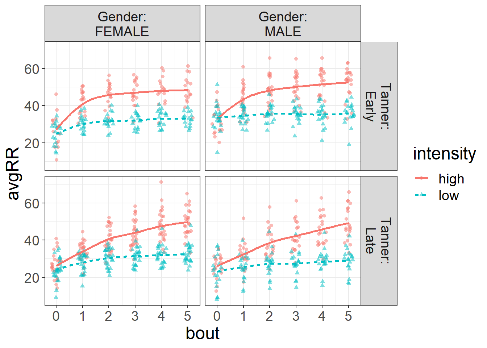
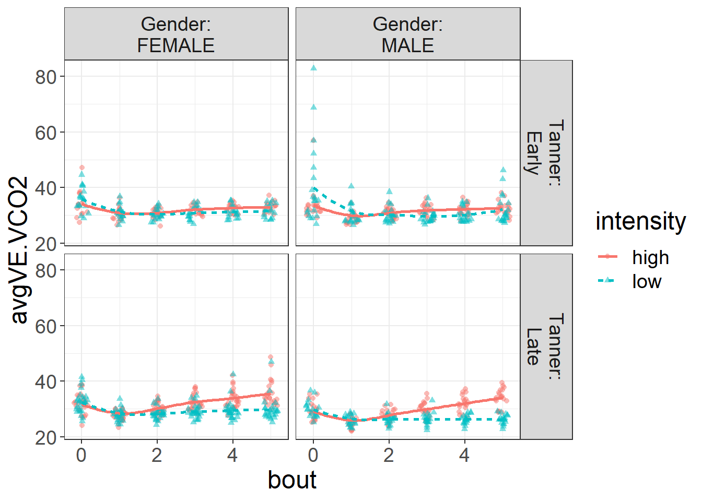
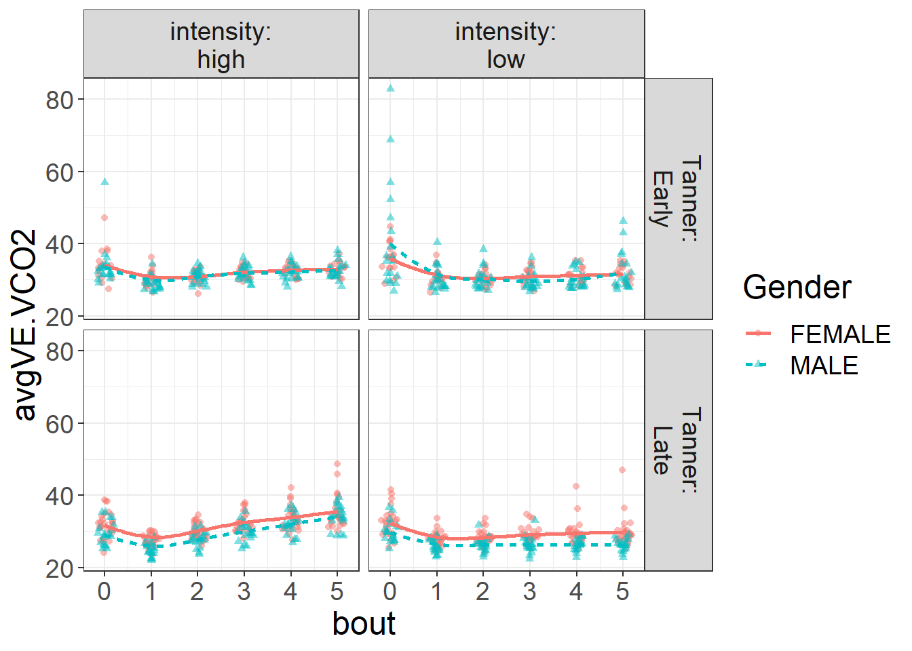
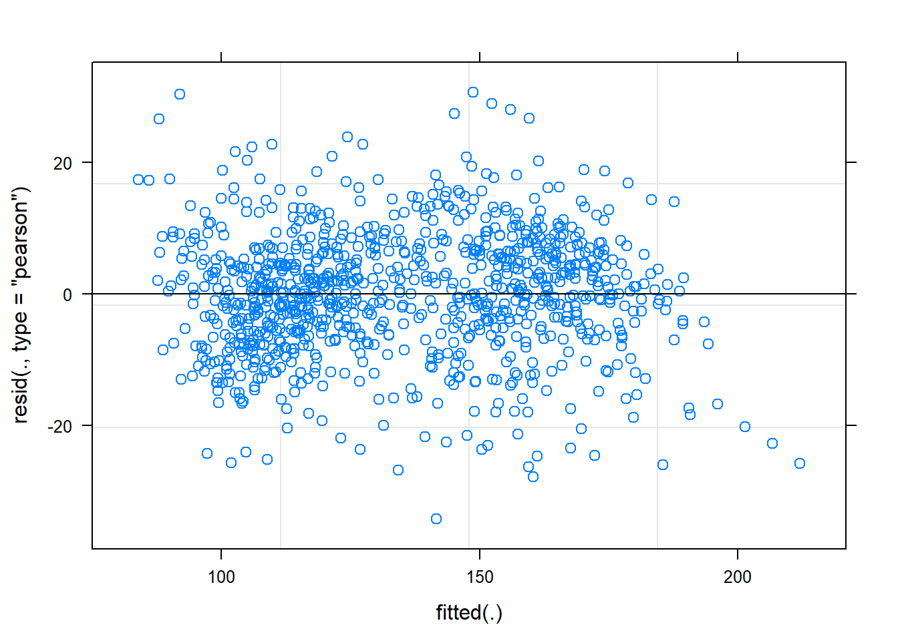
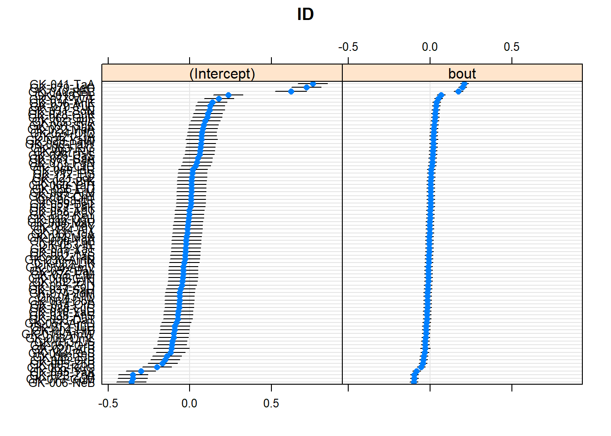
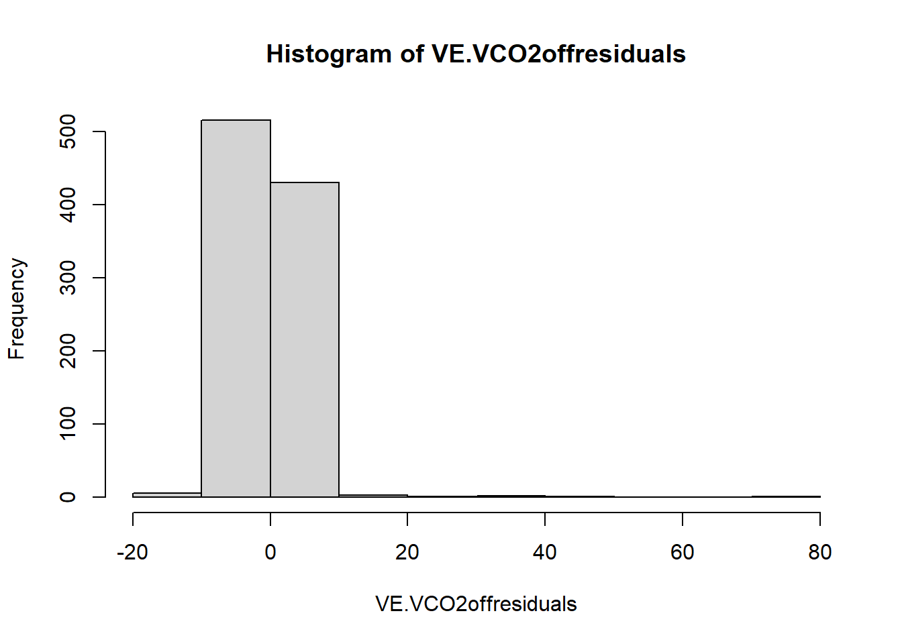

MixedEffectsCPETmodels
nickcoronato
2021-07-16
Last updated: 2021-07-27
Checks: 6 1
Knit directory: MBEB-CPET/
This reproducible R Markdown analysis was created with workflowr (version 1.6.2). The Checks tab describes the reproducibility checks that were applied when the results were created. The Past versions tab lists the development history.
Great! Since the R Markdown file has been committed to the Git repository, you know the exact version of the code that produced these results.
Great job! The global environment was empty. Objects defined in the global environment can affect the analysis in your R Markdown file in unknown ways. For reproduciblity it’s best to always run the code in an empty environment.
The command set.seed(20210716) was run prior to running the code in the R Markdown file. Setting a seed ensures that any results that rely on randomness, e.g. subsampling or permutations, are reproducible.
Great job! Recording the operating system, R version, and package versions is critical for reproducibility.
Nice! There were no cached chunks for this analysis, so you can be confident that you successfully produced the results during this run.
Using absolute paths to the files within your workflowr project makes it difficult for you and others to run your code on a different machine. Change the absolute path(s) below to the suggested relative path(s) to make your code more reproducible.
| absolute | relative |
|---|---|
| ~/R/MBEB-CPET/output/HRoncoefs.csv | output/HRoncoefs.csv |
| ~/R/MBEB-CPET/output/HRoffcoefs.csv | output/HRoffcoefs.csv |
| ~/R/MBEB-CPET/output/VO2oncoefs.csv | output/VO2oncoefs.csv |
| ~/R/MBEB-CPET/output/VO2offcoefs.csv | output/VO2offcoefs.csv |
| ~/R/MBEB-CPET/output/VCO2oncoefs.csv | output/VCO2oncoefs.csv |
| ~/R/MBEB-CPET/output/VCO2offcoefs.csv | output/VCO2offcoefs.csv |
| ~/R/MBEB-CPET/output/RQoncoefs.csv | output/RQoncoefs.csv |
| ~/R/MBEB-CPET/output/RQoffcoefs.csv | output/RQoffcoefs.csv |
| ~/R/MBEB-CPET/output/VEoncoefs.csv | output/VEoncoefs.csv |
| ~/R/MBEB-CPET/output/VEoffcoefs.csv | output/VEoffcoefs.csv |
| ~/R/MBEB-CPET/output/RRoncoefs.csv | output/RRoncoefs.csv |
| ~/R/MBEB-CPET/output/RRoffcoefs.csv | output/RRoffcoefs.csv |
| ~/R/MBEB-CPET/output/VE.VCO2oncoefs.csv | output/VE.VCO2oncoefs.csv |
| ~/R/MBEB-CPET/output/VE.VCO2offcoefs.csv | output/VE.VCO2offcoefs.csv |
| ~/R/MBEB-CPET/output/dat.HRon.csv | output/dat.HRon.csv |
| ~/R/MBEB-CPET/output/dat.HRoff.csv | output/dat.HRoff.csv |
| ~/R/MBEB-CPET/output/dat.VO2KGon.csv | output/dat.VO2KGon.csv |
| ~/R/MBEB-CPET/output/dat.VO2KGoff.csv | output/dat.VO2KGoff.csv |
| ~/R/MBEB-CPET/output/dat.VO2KGLBMon.csv | output/dat.VO2KGLBMon.csv |
| ~/R/MBEB-CPET/output/dat.VO2KGLBMoff.csv | output/dat.VO2KGLBMoff.csv |
| ~/R/MBEB-CPET/output/dat.VCO2on.csv | output/dat.VCO2on.csv |
| ~/R/MBEB-CPET/output/dat.VCO2off.csv | output/dat.VCO2off.csv |
| ~/R/MBEB-CPET/output/dat.VCO2kglbmon.csv | output/dat.VCO2kglbmon.csv |
| ~/R/MBEB-CPET/output/dat.VCO2kglbmoff.csv | output/dat.VCO2kglbmoff.csv |
| ~/R/MBEB-CPET/output/dat.RQon.csv | output/dat.RQon.csv |
| ~/R/MBEB-CPET/output/dat.RQoff.csv | output/dat.RQoff.csv |
| ~/R/MBEB-CPET/output/dat.VEkglbmon.csv | output/dat.VEkglbmon.csv |
| ~/R/MBEB-CPET/output/dat.VEkglbmoff.csv | output/dat.VEkglbmoff.csv |
| ~/R/MBEB-CPET/output/dat.RRon.csv | output/dat.RRon.csv |
| ~/R/MBEB-CPET/output/dat.RRoff.csv | output/dat.RRoff.csv |
| ~/R/MBEB-CPET/output/dat.VE.VCO2on.csv | output/dat.VE.VCO2on.csv |
| ~/R/MBEB-CPET/output/dat.VE.VCO2off.csv | output/dat.VE.VCO2off.csv |
| ~/R/MBEB-CPET/output/HRmodels.html | output/HRmodels.html |
| ~/R/MBEB-CPET/output/VO2models.html | output/VO2models.html |
| ~/R/MBEB-CPET/output/VCO2models.html | output/VCO2models.html |
| ~/R/MBEB-CPET/output/RQmodels.html | output/RQmodels.html |
| ~/R/MBEB-CPET/output/VEmodels.html | output/VEmodels.html |
| ~/R/MBEB-CPET/output/RRmodels.html | output/RRmodels.html |
| ~/R/MBEB-CPET/output/VE.VCO2models.html | output/VE.VCO2models.html |
Great! You are using Git for version control. Tracking code development and connecting the code version to the results is critical for reproducibility.
The results in this page were generated with repository version 8b034ab. See the Past versions tab to see a history of the changes made to the R Markdown and HTML files.
Note that you need to be careful to ensure that all relevant files for the analysis have been committed to Git prior to generating the results (you can use wflow_publish or wflow_git_commit). workflowr only checks the R Markdown file, but you know if there are other scripts or data files that it depends on. Below is the status of the Git repository when the results were generated:
Ignored files:
Ignored: .Rhistory
Ignored: .Rproj.user/
Ignored: analysis/.Rhistory
Untracked files:
Untracked: analysis/HR_on_FEH.jpeg
Untracked: analysis/VCO2_off_FEH.jpeg
Untracked: analysis/VCO2_on_FEH.jpeg
Untracked: analysis/avgHRon.csv
Untracked: data/all_data.csv
Untracked: data/avg_HR_off.csv
Untracked: data/avg_HR_on.csv
Untracked: data/avg_RR_off.csv
Untracked: data/avg_RR_on.csv
Untracked: data/avg_VCO2_off.csv
Untracked: data/avg_VCO2_on.csv
Untracked: data/avg_VE_off.csv
Untracked: data/avg_VE_on.csv
Untracked: data/avg_VO2_off.csv
Untracked: data/avg_VO2_on.csv
Untracked: output/HRmodels.html
Untracked: output/HRoffcoefs.csv
Untracked: output/HRoncoefs.csv
Untracked: output/RQmodels.html
Untracked: output/RQoffcoefs.csv
Untracked: output/RQoncoefs.csv
Untracked: output/RRmodels.html
Untracked: output/RRoffcoefs.csv
Untracked: output/RRoncoefs.csv
Untracked: output/VCO2models.html
Untracked: output/VCO2offcoefs.csv
Untracked: output/VCO2oncoefs.csv
Untracked: output/VE.VCO2models.html
Untracked: output/VE.VCO2offcoefs.csv
Untracked: output/VE.VCO2oncoefs.csv
Untracked: output/VEmodels.html
Untracked: output/VEoffcoefs.csv
Untracked: output/VEoncoefs.csv
Untracked: output/VO2models.html
Untracked: output/VO2offcoefs.csv
Untracked: output/VO2oncoefs.csv
Untracked: output/avgHRon.csv
Untracked: output/dat.HRoff.csv
Untracked: output/dat.HRon.csv
Untracked: output/dat.RQoff.csv
Untracked: output/dat.RQon.csv
Untracked: output/dat.RRoff.csv
Untracked: output/dat.RRon.csv
Untracked: output/dat.VCO2kglbmoff.csv
Untracked: output/dat.VCO2kglbmon.csv
Untracked: output/dat.VCO2off.csv
Untracked: output/dat.VCO2on.csv
Untracked: output/dat.VE.VCO2off.csv
Untracked: output/dat.VE.VCO2on.csv
Untracked: output/dat.VEkglbmoff.csv
Untracked: output/dat.VEkglbmon.csv
Untracked: output/dat.VO2KGLBMoff.csv
Untracked: output/dat.VO2KGLBMon.csv
Untracked: output/dat.VO2KGoff.csv
Untracked: output/dat.VO2KGon.csv
Untracked: output/plots/
Untracked: site_libs/
Note that any generated files, e.g. HTML, png, CSS, etc., are not included in this status report because it is ok for generated content to have uncommitted changes.
These are the previous versions of the repository in which changes were made to the R Markdown (analysis/MixedEffectsCPETmodels.Rmd) and HTML (docs/MixedEffectsCPETmodels.html) files. If you’ve configured a remote Git repository (see ?wflow_git_remote), click on the hyperlinks in the table below to view the files as they were in that past version.
| File | Version | Author | Date | Message |
|---|---|---|---|---|
| Rmd | 8b034ab | nickcoronato | 2021-07-27 | Publish post-hoc-stats.Rmd. Trim and publish MixedEffects analysis |
| html | 588ff1d | nickcoronato | 2021-07-26 | Build site. |
| Rmd | b6821c6 | nickcoronato | 2021-07-26 | Add post-hoc statistical analysis to MixedEffects model file. |
| html | a30476d | nickcoronato | 2021-07-17 | Build site. |
| Rmd | d5419c4 | nickcoronato | 2021-07-17 | Update base .rmd file for reproducibility. Data files now output as |
options(max.print=99999)Warning: package 'tidyverse' was built under R version 4.0.5-- Attaching packages --------------------------------------- tidyverse 1.3.1 --v ggplot2 3.3.3 v purrr 0.3.4
v tibble 3.1.2 v dplyr 1.0.6
v tidyr 1.1.3 v stringr 1.4.0
v readr 1.4.0 v forcats 0.5.1Warning: package 'tidyr' was built under R version 4.0.5Warning: package 'dplyr' was built under R version 4.0.5Warning: package 'forcats' was built under R version 4.0.5-- Conflicts ------------------------------------------ tidyverse_conflicts() --
x dplyr::filter() masks stats::filter()
x dplyr::lag() masks stats::lag()------------------------------------------------------------------------------You have loaded plyr after dplyr - this is likely to cause problems.
If you need functions from both plyr and dplyr, please load plyr first, then dplyr:
library(plyr); library(dplyr)------------------------------------------------------------------------------
Attaching package: 'plyr'The following objects are masked from 'package:dplyr':
arrange, count, desc, failwith, id, mutate, rename, summarise,
summarizeThe following object is masked from 'package:purrr':
compactWarning: package 'broom' was built under R version 4.0.5Warning: package 'lme4' was built under R version 4.0.5Loading required package: Matrix
Attaching package: 'Matrix'The following objects are masked from 'package:tidyr':
expand, pack, unpackWarning: package 'lmerTest' was built under R version 4.0.5
Attaching package: 'lmerTest'The following object is masked from 'package:lme4':
lmerThe following object is masked from 'package:stats':
stepWarning: package 'jtools' was built under R version 4.0.5Warning: package 'devtools' was built under R version 4.0.5Loading required package: usethisWarning: package 'usethis' was built under R version 4.0.5
Attaching package: 'lattice'The following object is masked from 'package:boot':
melanomaLoading required package: MASS
Attaching package: 'MASS'The following object is masked from 'package:dplyr':
selectWarning: replacing previous import 'flexplot::flip_data' by 'ggplot2::flip_data'
when loading 'fifer'
Attaching package: 'fifer'The following object is masked from 'package:base':
replace
Attaching package: 'flexplot'The following objects are masked from 'package:fifer':
icc, rescaleThe following object is masked from 'package:ggplot2':
flip_dataWarning: package 'sjPlot' was built under R version 4.0.5Registered S3 methods overwritten by 'parameters':
method from
as.double.parameters_kurtosis datawizard
as.double.parameters_skewness datawizard
as.double.parameters_smoothness datawizard
as.numeric.parameters_kurtosis datawizard
as.numeric.parameters_skewness datawizard
as.numeric.parameters_smoothness datawizard
print.parameters_distribution datawizard
print.parameters_kurtosis datawizard
print.parameters_skewness datawizard
summary.parameters_kurtosis datawizard
summary.parameters_skewness datawizard#refugeeswelcome
Attaching package: 'sjPlot'The following object is masked from 'package:fifer':
save_plotWarning: package 'officer' was built under R version 4.0.5Warning: package 'flextable' was built under R version 4.0.5
Attaching package: 'flextable'The following object is masked from 'package:purrr':
composeWarning: package 'lsmeans' was built under R version 4.0.5Loading required package: emmeans
Attaching package: 'emmeans'The following object is masked from 'package:devtools':
testThe 'lsmeans' package is now basically a front end for 'emmeans'.
Users are encouraged to switch the rest of the way.
See help('transition') for more information, including how to
convert old 'lsmeans' objects and scripts to work with 'emmeans'.Warning: package 'effects' was built under R version 4.0.5Loading required package: carDataUse the command
lattice::trellis.par.set(effectsTheme())
to customize lattice options for effects plots.
See ?effectsTheme for details.Warning: package 'ggiraph' was built under R version 4.0.5Warning: package 'ggiraphExtra' was built under R version 4.0.5Warning: package 'ggeffects' was built under R version 4.0.5Data preparation
Read in the csv of clean data, from this project’s “Data” folder.
Create a ‘demographics’ table for later use, which contains the listing of IDs used in the models.
demographics <- distinct(all_GK_bybout, ID, .keep_all=TRUE)[,1:6]Convert the ‘bout’ variable to discrete numeric values. For the off-transient bouts (recovery periods), subtract 1.5 in order to center the variable at 0 for further analysis.
ontransbouts <- filter(all_GK_bybout,bout%in%c(0,1,2,3,4,5))
ontransbouts$bout <- as.numeric(ontransbouts$bout)
offtransbouts <- filter(all_GK_bybout,bout%in%c(1.5,2.5,3.5,4.5,5.5,6.5))
offtransbouts$bout <- as.numeric(offtransbouts$bout)
offtransbouts <- mutate(offtransbouts, bout = bout-1.5)Compute the averages. Pull out the ‘avgHR’ at each “on-transient” and “off-transient” bout (1-5).
avgHRon <- aggregate(ontransbouts$HR, by=list(bout=ontransbouts$bout, ID = ontransbouts$ID, intensity = ontransbouts$intensity, Gender=ontransbouts$Gender, Tanner=ontransbouts$Tanner), FUN=mean)
names(avgHRon)[6] <- "avgHR"
avgHRoff <- aggregate(offtransbouts$HR, by=list(bout=offtransbouts$bout, ID = offtransbouts$ID, intensity = offtransbouts$intensity, Gender=offtransbouts$Gender, Tanner=offtransbouts$Tanner), FUN=mean)
names(avgHRoff)[6] <- "avgHR"Data visualization. Plot the average HR data distributions.
# plot the avg ON-transient HR
ggplot(data=avgHRon, aes(bout, avgHR, color = intensity)) + geom_point() + ggtitle("On-Transient average heart rates")
# plot the avg off-transient HR
ggplot(data=avgHRoff, aes(bout, avgHR, color = intensity)) + geom_point()+ ggtitle("Off-Transient average heart rates")
ggplot(data=filter(avgHRon, intensity == "low"), aes(x = bout,y= avgHR, group = ID)) + geom_line() + ggtitle("Low intensity, Avg HR for on-transient periods")+ ylim(80,210) 
ggplot(data=filter(avgHRoff, intensity == "low"), aes(x = bout,y= avgHR, group = ID)) + geom_line() + ggtitle("Low intensity, Avg HR for off-transient periods")+ ylim(80,210)Warning: Removed 1 row(s) containing missing values (geom_path).
ggplot(data=filter(avgHRon, intensity == "high"), aes(x = bout,y= avgHR, group = ID)) + geom_line() + ggtitle("High intensity, Avg HR for on-transient periods") + ylim(80,210) 
ggplot(data=filter(avgHRoff, intensity == "high"), aes(x = bout,y= avgHR, group = ID)) + geom_line() + ggtitle("High intensity, Avg HR for off-transient periods") + ylim(80,210)
Show xyplots to compare the slopes for each individual based on Gender, Tanner score, intensity
xyplot(avgHR ~ bout | Gender*Tanner, data = avgHRon, groups = intensity,
type = c("p","r"),
auto.key = TRUE)
xyplot(avgHR ~ bout | ID, data = avgHRon, groups = Tanner, type = c("p","r"), auto.key = TRUE)
xyplot(avgHR ~ bout | ID, data = avgHRon, groups = intensity, type = c("p","r"), auto.key = TRUE)
More visualizations
boxplot(avgHR~Gender*Tanner*bout*intensity, data = avgHRon)
### Viewing the categorical variables of interest
# Flexplot of Gender distribution
flexplot(avgHR~Gender, data=avgHRon, spread="quartiles", jitter=c(.1, 0))
flexplot(avgHR~Gender, data=avgHRoff, spread="quartiles", jitter=c(.1, 0))
# Flexplot of Puberty distribution
flexplot(avgHR~Tanner, data=avgHRon, spread="quartiles", jitter=c(.1, 0))
flexplot(avgHR~Tanner, data=avgHRoff, spread="quartiles", jitter=c(.1, 0))
### show a straight line, remove standard errors, and specify 2 bins
flexplot(avgHR~bout + intensity | Gender + Tanner, data=avgHRon, method="lm", se=F, bins=2)
### multivariate relationship (this is more data exploration, prior to the real modeling.)
flexplot(avgHR~bout + intensity | Gender + Tanner, data=avgHRon)
flexplot(avgHR~bout + Gender | intensity + Tanner, data=avgHRon)
flexplot(avgHR~bout + Tanner | intensity + Gender, data=avgHRon)
LINEAR MIXED EFFECTS MODELING with the lme4 package
This next section is the full procedure for step-wise variable selection to identify the appropriate mixed-effects model.
In total, there are 14 selected models. Each physiological signal (x7) has two associated models: one linear model is fit to the On-Transient average responses, and a second model is fit to the Off-Transient averages.
The final multi-level models (MLMs) were chosen through a stepwise variable selection approach that began with the most complex model. Fixed effects considered in the full model were: Gender, a factor with two levels (Male, Female); Maturational status, a factor with two levels (Early, Late); work intensity, a factor with two levels (Low, High); and Bout, a continuous predictor in the range of 0 to 5.
Random slope and intercept were allowed in the bout term for each participant ID in order to account for individual variation between subjects. This controlled for innate differences between subjects’ physical fitness levels, psychological motivation, and other non-measured variables. If the full model showed insignificance (p-value > 0.05) in the four-way interaction (Gender* Puberty * Intensity * Bout), the model was re-fit with only three-way interactions.
This stepwise process was repeated, removing higher-level interactions until all fixed effects were statistically significant or no more interactions existed. In order to determine that a simpler model provided better fit than the previous (more complex) model, a standard ANOVA process and Chi-squared comparison was used, as well as a check for reduction in BIC and a Bayes Factor analysis. The simplest possible models used only fixed effects for Gender, Puberty, Intensity, and Bout. However, each of the final 14 models included a unique combination of fixed effects and cross-level interactions that required careful interpretation. Residual plots were analyzed for each final model to confirm an appropriate fit.
The first physiological signal for analysis is Heart Rate (HR).
HR ON Transient
Model 1: All interactions
m1 <- lmer(avgHR~Gender*Tanner*intensity*bout +(bout|ID), data = avgHRon, REML=FALSE)boundary (singular) fit: see ?isSingular# summary(m1)
summ(m1)| Observations | 965 |
| Dependent variable | avgHR |
| Type | Mixed effects linear regression |
| AIC | 7549.01 |
| BIC | 7646.45 |
| Pseudo-R² (fixed effects) | 0.72 |
| Pseudo-R² (total) | 0.82 |
| Est. | S.E. | t val. | d.f. | p | |
|---|---|---|---|---|---|
| (Intercept) | 137.01 | 2.54 | 54.01 | 189.01 | 0.00 |
| GenderMALE | 5.37 | 3.42 | 1.57 | 182.84 | 0.12 |
| TannerLate | -1.50 | 3.26 | -0.46 | 184.09 | 0.65 |
| intensitylow | -16.33 | 2.76 | -5.92 | 884.45 | 0.00 |
| bout | 8.72 | 0.67 | 12.98 | 656.14 | 0.00 |
| GenderMALE:TannerLate | -4.44 | 4.62 | -0.96 | 179.76 | 0.34 |
| GenderMALE:intensitylow | -3.32 | 3.72 | -0.89 | 884.21 | 0.37 |
| TannerLate:intensitylow | 0.67 | 3.55 | 0.19 | 884.28 | 0.85 |
| GenderMALE:bout | 0.35 | 0.90 | 0.39 | 644.29 | 0.70 |
| TannerLate:bout | 2.77 | 0.86 | 3.21 | 648.77 | 0.00 |
| intensitylow:bout | -5.36 | 0.91 | -5.87 | 886.01 | 0.00 |
| GenderMALE:TannerLate:intensitylow | -3.19 | 5.04 | -0.63 | 884.09 | 0.53 |
| GenderMALE:TannerLate:bout | -0.19 | 1.21 | -0.16 | 639.11 | 0.87 |
| GenderMALE:intensitylow:bout | 0.01 | 1.23 | 0.01 | 885.07 | 0.99 |
| TannerLate:intensitylow:bout | -1.69 | 1.18 | -1.44 | 885.35 | 0.15 |
| GenderMALE:TannerLate:intensitylow:bout | 0.07 | 1.67 | 0.04 | 884.63 | 0.97 |
| p values calculated using Satterthwaite d.f. |
| Group | Parameter | Std. Dev. |
|---|---|---|
| ID | (Intercept) | 6.52 |
| ID | bout | 0.53 |
| Residual | 10.90 |
| Group | # groups | ICC |
|---|---|---|
| ID | 81 | 0.26 |
# coef(m1)
# fixef(m1)
# ranef(m1)Model 1B: Some interactions
m1B <- lmer(avgHR~Gender+Tanner*bout * intensity + (bout|ID) , data = avgHRon, REML=FALSE)boundary (singular) fit: see ?isSingular# summary(m1B)
summ(m1B)| Observations | 965 |
| Dependent variable | avgHR |
| Type | Mixed effects linear regression |
| AIC | 7551.44 |
| BIC | 7614.78 |
| Pseudo-R² (fixed effects) | 0.72 |
| Pseudo-R² (total) | 0.82 |
| Est. | S.E. | t val. | d.f. | p | |
|---|---|---|---|---|---|
| (Intercept) | 139.50 | 2.00 | 69.75 | 149.90 | 0.00 |
| GenderMALE | 0.80 | 1.86 | 0.43 | 82.05 | 0.67 |
| TannerLate | -3.95 | 2.34 | -1.69 | 176.29 | 0.09 |
| bout | 8.91 | 0.45 | 19.87 | 643.54 | 0.00 |
| intensitylow | -18.15 | 1.86 | -9.74 | 884.18 | 0.00 |
| TannerLate:bout | 2.65 | 0.61 | 4.37 | 640.21 | 0.00 |
| TannerLate:intensitylow | -0.31 | 2.52 | -0.12 | 884.08 | 0.90 |
| bout:intensitylow | -5.36 | 0.62 | -8.70 | 884.85 | 0.00 |
| TannerLate:bout:intensitylow | -1.67 | 0.83 | -2.00 | 884.53 | 0.05 |
| p values calculated using Satterthwaite d.f. |
| Group | Parameter | Std. Dev. |
|---|---|---|
| ID | (Intercept) | 6.67 |
| ID | bout | 0.53 |
| Residual | 10.98 |
| Group | # groups | ICC |
|---|---|---|
| ID | 81 | 0.27 |
# coef(m1B)
# ranef(m1B)
HRon <- m1BComparing On transient models
improve.fit(m1B,m1) (Intercept) bout Residual
-0.048157410 -0.006707244 -0.015368230 anova(m1, m1B)Data: avgHRon
Models:
m1B: avgHR ~ Gender + Tanner * bout * intensity + (bout | ID)
m1: avgHR ~ Gender * Tanner * intensity * bout + (bout | ID)
npar AIC BIC logLik deviance Chisq Df Pr(>Chisq)
m1B 13 7551.4 7614.8 -3762.7 7525.4
m1 20 7549.0 7646.4 -3754.5 7509.0 16.437 7 0.02141 *
---
Signif. codes: 0 '***' 0.001 '**' 0.01 '*' 0.05 '.' 0.1 ' ' 1Create a tibble of model coefficients by ID.
This generates a table of individualized coefficients for each subject, which includes fixed effects + random effects. These will be used for analysis of group averages.
HRoncoefs <- as_tibble(coef(HRon)$ID)
HRoncoefs <- tibble(demographics, HRoncoefs$bout)
write.csv(HRoncoefs,"~/R/MBEB-CPET/output/HRoncoefs.csv", row.names = TRUE)HR OFF transient
Model 2: OFF TRANSIENT: All interactions
m2 <- lmer(avgHR~Gender*Tanner*bout*intensity + (bout|ID) , data = avgHRoff, REML=FALSE)boundary (singular) fit: see ?isSingular# summary(m2)
summ(m2)| Observations | 959 |
| Dependent variable | avgHR |
| Type | Mixed effects linear regression |
| AIC | 7327.21 |
| BIC | 7424.53 |
| Pseudo-R² (fixed effects) | 0.75 |
| Pseudo-R² (total) | 0.88 |
| Est. | S.E. | t val. | d.f. | p | |
|---|---|---|---|---|---|
| (Intercept) | 138.06 | 2.86 | 48.22 | 122.49 | 0.00 |
| GenderMALE | 4.00 | 3.89 | 1.03 | 122.04 | 0.31 |
| TannerLate | 15.82 | 3.71 | 4.26 | 122.58 | 0.00 |
| bout | 3.46 | 0.58 | 6.00 | 754.34 | 0.00 |
| intensitylow | -34.86 | 2.41 | -14.49 | 877.99 | 0.00 |
| GenderMALE:TannerLate | -3.17 | 5.30 | -0.60 | 122.32 | 0.55 |
| GenderMALE:bout | -0.02 | 0.78 | -0.02 | 753.46 | 0.98 |
| TannerLate:bout | 1.11 | 0.75 | 1.47 | 757.38 | 0.14 |
| GenderMALE:intensitylow | -7.11 | 3.27 | -2.18 | 877.98 | 0.03 |
| TannerLate:intensitylow | -8.57 | 3.12 | -2.75 | 878.03 | 0.01 |
| bout:intensitylow | -1.13 | 0.80 | -1.42 | 878.66 | 0.16 |
| GenderMALE:TannerLate:bout | 0.89 | 1.07 | 0.83 | 757.44 | 0.41 |
| GenderMALE:TannerLate:intensitylow | 4.20 | 4.45 | 0.94 | 878.02 | 0.35 |
| GenderMALE:bout:intensitylow | 0.60 | 1.08 | 0.55 | 878.36 | 0.58 |
| TannerLate:bout:intensitylow | -0.76 | 1.04 | -0.73 | 878.68 | 0.46 |
| GenderMALE:TannerLate:bout:intensitylow | -1.80 | 1.48 | -1.21 | 878.43 | 0.23 |
| p values calculated using Satterthwaite d.f. |
| Group | Parameter | Std. Dev. |
|---|---|---|
| ID | (Intercept) | 9.48 |
| ID | bout | 0.31 |
| Residual | 9.66 |
| Group | # groups | ICC |
|---|---|---|
| ID | 81 | 0.49 |
# coef(m2)
# ranef(m2)Model 2B: Some interactions
m2B <- lmer(avgHR~Gender*Tanner*bout + intensity + (bout|ID) , data = avgHRoff, REML=FALSE)boundary (singular) fit: see ?isSingular# summary(m2B)
summ(m2B)| Observations | 959 |
| Dependent variable | avgHR |
| Type | Mixed effects linear regression |
| AIC | 7417.12 |
| BIC | 7480.37 |
| Pseudo-R² (fixed effects) | 0.74 |
| Pseudo-R² (total) | 0.87 |
| Est. | S.E. | t val. | d.f. | p | |
|---|---|---|---|---|---|
| (Intercept) | 143.71 | 2.65 | 54.23 | 86.88 | 0.00 |
| GenderMALE | 0.41 | 3.57 | 0.12 | 84.11 | 0.91 |
| TannerLate | 11.57 | 3.41 | 3.40 | 84.23 | 0.00 |
| bout | 2.92 | 0.43 | 6.79 | 564.61 | 0.00 |
| intensitylow | -46.10 | 0.66 | -69.51 | 878.58 | 0.00 |
| GenderMALE:TannerLate | -0.98 | 4.86 | -0.20 | 84.17 | 0.84 |
| GenderMALE:bout | 0.25 | 0.58 | 0.43 | 562.67 | 0.67 |
| TannerLate:bout | 0.64 | 0.56 | 1.14 | 567.65 | 0.25 |
| GenderMALE:TannerLate:bout | -0.03 | 0.80 | -0.04 | 566.68 | 0.97 |
| p values calculated using Satterthwaite d.f. |
| Group | Parameter | Std. Dev. |
|---|---|---|
| ID | (Intercept) | 9.48 |
| ID | bout | 0.29 |
| Residual | 10.25 |
| Group | # groups | ICC |
|---|---|---|
| ID | 81 | 0.46 |
# coef(m2B)
# fixef(m2B)
# ranef(m2B)Model 2C: Some interactions
m2C <- lmer(avgHR~ bout * intensity + Tanner*intensity + Gender*intensity + (bout|ID) , data = avgHRoff, REML=FALSE)boundary (singular) fit: see ?isSingular# summary(m2C)
summ(m2C)| Observations | 959 |
| Dependent variable | avgHR |
| Type | Mixed effects linear regression |
| AIC | 7321.45 |
| BIC | 7379.84 |
| Pseudo-R² (fixed effects) | 0.75 |
| Pseudo-R² (total) | 0.88 |
| Est. | S.E. | t val. | d.f. | p | |
|---|---|---|---|---|---|
| (Intercept) | 137.01 | 2.27 | 60.24 | 104.13 | 0.00 |
| bout | 4.24 | 0.27 | 15.90 | 750.63 | 0.00 |
| intensitylow | -33.50 | 1.48 | -22.70 | 878.27 | 0.00 |
| TannerLate | 17.24 | 2.43 | 7.09 | 93.70 | 0.00 |
| GenderMALE | 3.09 | 2.42 | 1.27 | 93.67 | 0.21 |
| bout:intensitylow | -1.66 | 0.37 | -4.50 | 878.22 | 0.00 |
| intensitylow:TannerLate | -10.55 | 1.27 | -8.31 | 878.44 | 0.00 |
| intensitylow:GenderMALE | -5.73 | 1.27 | -4.52 | 878.37 | 0.00 |
| p values calculated using Satterthwaite d.f. |
| Group | Parameter | Std. Dev. |
|---|---|---|
| ID | (Intercept) | 9.47 |
| ID | bout | 0.32 |
| Residual | 9.72 |
| Group | # groups | ICC |
|---|---|---|
| ID | 81 | 0.49 |
# coef(m2C)
# fixef(m2C)
# ranef(m2C)
HRoff <- m2CComparing Off transient models
improve.fit(m2B,m2) (Intercept) bout Residual
0.001007638 0.120246306 -0.125725006 improve.fit(m2C,m2B) (Intercept) bout Residual
0.002541482 -0.188004555 0.101348781 anova(m2C, m2B)Data: avgHRoff
Models:
m2C: avgHR ~ bout * intensity + Tanner * intensity + Gender * intensity + (bout | ID)
m2B: avgHR ~ Gender * Tanner * bout + intensity + (bout | ID)
npar AIC BIC logLik deviance Chisq Df Pr(>Chisq)
m2C 12 7321.4 7379.8 -3648.7 7297.4
m2B 13 7417.1 7480.4 -3695.6 7391.1 0 1 1Create a tibble of model coefficients by ID.
This generates a table of individualized coefficients for each subject, which includes fixed effects + random effects. These will be used for analysis of group averages.
HRoffcoefs <- as_tibble(coef(HRoff)$ID)
HRoffcoefs <- tibble(demographics, HRoffcoefs$bout)
write.csv(HRoffcoefs,"~/R/MBEB-CPET/output/HRoffcoefs.csv", row.names = TRUE)# Bayes factor = probability of full model / probability of reduced model - it's an odds. We can approximate BF using BIC:
# in general, BF >10 = strong evidence in favor of the model in the numerator
bf.bic(m2C,m2)[1] 5068214178bf.bic(m1B,m1)[1] 7528167VO2/kg On Transient
First, pull out the average on and off transient VO2kg values for each bout.
avgVO2kgon <- aggregate(ontransbouts$'VO2/kg', by=list(bout=ontransbouts$bout, ID = ontransbouts$ID, intensity = ontransbouts$intensity, Gender=ontransbouts$Gender, Tanner=ontransbouts$Tanner), FUN=mean)
names(avgVO2kgon)[6] <- "avgVO2kg"
avgVO2kgoff <- aggregate(offtransbouts$'VO2/kg', by=list(bout=offtransbouts$bout, ID = offtransbouts$ID, intensity = offtransbouts$intensity, Gender=offtransbouts$Gender, Tanner=offtransbouts$Tanner), FUN=mean)
names(avgVO2kgoff)[6] <- "avgVO2kg"Plot the average VO2kg data distributions.
#plot the avg ON-transient VO2kg
ggplot(data=avgVO2kgon, aes(bout, avgVO2kg, color = intensity)) + geom_point() + ggtitle("On-Transient average VO2/kg rates")Warning: Removed 1 rows containing missing values (geom_point).
#plot the avg off-transient VO2kg
ggplot(data=avgVO2kgoff, aes(bout, avgVO2kg, color = intensity)) + geom_point()+ ggtitle("Off-Transient average VO2/kg rates")
ggplot(data=filter(avgVO2kgon, intensity == "low"), aes(x = bout,y= avgVO2kg, group = ID)) + geom_line() + ggtitle("Low intensity, Avg VO2kg for on-transient periods") + ylim(0,75) Warning: Removed 1 row(s) containing missing values (geom_path).
# + geom_abline(intercept = 139, slope=7.6,color = "red", linetype="dashed", size = 1.7)
ggplot(data=filter(avgVO2kgoff, intensity == "low"), aes(x = bout,y= avgVO2kg, group = ID)) + geom_line() + ggtitle("Low intensity, Avg VO2kg for off-transient periods")+ ylim(0,75) 
ggplot(data=filter(avgVO2kgon, intensity == "high"), aes(x = bout,y= avgVO2kg, group = ID)) + geom_line() + ggtitle("High intensity, Avg VO2kg for on-transient periods") + ylim(0,75) 
# + geom_abline(intercept = 139, slope=7.6,color = "red", linetype="dashed", size = 1.7)
ggplot(data=filter(avgVO2kgoff, intensity == "high"), aes(x = bout,y= avgVO2kg, group = ID)) + geom_line() + ggtitle("High intensity, Avg VO2kg for off-transient periods") + ylim(0,75) 
Show xyplots to compare the slopes for each individual based on Gender, Tanner score, intensity
xyplot(avgVO2kg ~ bout | ID, data = avgVO2kgon, groups = Gender, type = c("p","r"), auto.key = TRUE)
xyplot(avgVO2kg ~ bout | ID, data = avgVO2kgon, groups = Tanner, type = c("p","r"), auto.key = TRUE)
xyplot(avgVO2kg ~ bout | ID, data = avgVO2kgon, groups = intensity, type = c("p","r"), auto.key = TRUE)
More visualizations
### categorical variable
flexplot(avgVO2kg~Gender, data=avgVO2kgon, spread="quartiles", jitter=c(.1, 0))
flexplot(avgVO2kg~Gender, data=avgVO2kgoff, spread="quartiles", jitter=c(.1, 0))
flexplot(avgVO2kg~Tanner, data=avgVO2kgon, spread="quartiles", jitter=c(.1, 0))
flexplot(avgVO2kg~Tanner, data=avgVO2kgoff, spread="quartiles", jitter=c(.1, 0))
### show a straight line, remove standard errors, and specify 2 bins
flexplot(avgVO2kg~bout + intensity | Gender + Tanner, data=avgVO2kgon, method="lm", se=F, bins=2)
### multivariate relationship
flexplot(avgVO2kg~bout + intensity | Gender + Tanner, data=avgVO2kgon)
flexplot(avgVO2kg~bout + Gender | intensity + Tanner, data=avgVO2kgon)
flexplot(avgVO2kg~bout + Tanner | intensity + Gender, data=avgVO2kgon)
Model 1: All interactions
m1 <- lmer(avgVO2kg~Gender*Tanner*bout*intensity +(bout|ID) , data = avgVO2kgon, REML=FALSE)boundary (singular) fit: see ?isSingular# summary(m1)
summ(m1)| Observations | 964 |
| Dependent variable | avgVO2kg |
| Type | Mixed effects linear regression |
| AIC | 6187.85 |
| BIC | 6285.27 |
| Pseudo-R² (fixed effects) | 0.63 |
| Pseudo-R² (total) | 0.75 |
| Est. | S.E. | t val. | d.f. | p | |
|---|---|---|---|---|---|
| (Intercept) | 23.86 | 1.24 | 19.30 | 201.78 | 0.00 |
| GenderMALE | 3.66 | 1.66 | 2.20 | 195.08 | 0.03 |
| TannerLate | -3.94 | 1.59 | -2.48 | 196.45 | 0.01 |
| bout | 3.27 | 0.34 | 9.74 | 611.76 | 0.00 |
| intensitylow | -6.34 | 1.37 | -4.64 | 883.62 | 0.00 |
| GenderMALE:TannerLate | 1.53 | 2.25 | 0.68 | 191.75 | 0.50 |
| GenderMALE:bout | 0.48 | 0.45 | 1.07 | 598.64 | 0.28 |
| TannerLate:bout | 0.48 | 0.43 | 1.11 | 603.79 | 0.27 |
| GenderMALE:intensitylow | -0.80 | 1.84 | -0.44 | 883.38 | 0.66 |
| TannerLate:intensitylow | 1.48 | 1.76 | 0.84 | 883.45 | 0.40 |
| bout:intensitylow | -1.82 | 0.45 | -4.03 | 885.27 | 0.00 |
| GenderMALE:TannerLate:bout | 1.06 | 0.61 | 1.76 | 593.03 | 0.08 |
| GenderMALE:TannerLate:intensitylow | -1.19 | 2.50 | -0.48 | 883.31 | 0.63 |
| GenderMALE:bout:intensitylow | -0.34 | 0.61 | -0.55 | 884.30 | 0.58 |
| TannerLate:bout:intensitylow | -0.29 | 0.58 | -0.50 | 884.59 | 0.61 |
| GenderMALE:TannerLate:bout:intensitylow | -0.97 | 0.83 | -1.17 | 883.88 | 0.24 |
| p values calculated using Satterthwaite d.f. |
| Group | Parameter | Std. Dev. |
|---|---|---|
| ID | (Intercept) | 3.09 |
| ID | bout | 0.31 |
| Residual | 5.40 |
| Group | # groups | ICC |
|---|---|---|
| ID | 81 | 0.25 |
# coef(m1)
# fixef(m1)
# ranef(m1)Model 1B: Some interactions
m1B <- lmer(avgVO2kg~Gender*Tanner*bout + intensity +(bout|ID) , data = avgVO2kgon, REML=FALSE)boundary (singular) fit: see ?isSingular# summary(m1B)
summ(m1B)| Observations | 964 |
| Dependent variable | avgVO2kg |
| Type | Mixed effects linear regression |
| AIC | 6336.30 |
| BIC | 6399.62 |
| Pseudo-R² (fixed effects) | 0.58 |
| Pseudo-R² (total) | 0.70 |
| Est. | S.E. | t val. | d.f. | p | |
|---|---|---|---|---|---|
| (Intercept) | 26.87 | 1.07 | 25.10 | 109.65 | 0.00 |
| GenderMALE | 3.15 | 1.43 | 2.21 | 101.29 | 0.03 |
| TannerLate | -3.29 | 1.36 | -2.42 | 101.60 | 0.02 |
| bout | 2.32 | 0.26 | 8.97 | 343.99 | 0.00 |
| intensitylow | -12.14 | 0.38 | -31.80 | 883.68 | 0.00 |
| GenderMALE:TannerLate | 0.99 | 1.94 | 0.51 | 100.88 | 0.61 |
| GenderMALE:bout | 0.35 | 0.35 | 1.00 | 337.04 | 0.32 |
| TannerLate:bout | 0.36 | 0.33 | 1.07 | 339.97 | 0.29 |
| GenderMALE:TannerLate:bout | 0.56 | 0.47 | 1.19 | 335.47 | 0.23 |
| p values calculated using Satterthwaite d.f. |
| Group | Parameter | Std. Dev. |
|---|---|---|
| ID | (Intercept) | 3.05 |
| ID | bout | 0.30 |
| Residual | 5.92 |
| Group | # groups | ICC |
|---|---|---|
| ID | 81 | 0.21 |
# coef(m1B)
# ranef(m1B)Model 1C: No interactions
m1C <- lmer(avgVO2kg~ bout*intensity + Gender* intensity + Tanner + (bout|ID) , data = avgVO2kgon, REML=FALSE)boundary (singular) fit: see ?isSingular# summary(m1C)
summ(m1C)| Observations | 964 |
| Dependent variable | avgVO2kg |
| Type | Mixed effects linear regression |
| AIC | 6203.14 |
| BIC | 6256.72 |
| Pseudo-R² (fixed effects) | 0.61 |
| Pseudo-R² (total) | 0.74 |
| Est. | S.E. | t val. | d.f. | p | |
|---|---|---|---|---|---|
| (Intercept) | 21.98 | 0.90 | 24.51 | 128.30 | 0.00 |
| bout | 4.02 | 0.15 | 26.09 | 485.31 | 0.00 |
| intensitylow | -4.48 | 0.72 | -6.27 | 879.07 | 0.00 |
| GenderMALE | 6.15 | 0.96 | 6.43 | 113.18 | 0.00 |
| TannerLate | -2.10 | 0.89 | -2.36 | 84.70 | 0.02 |
| bout:intensitylow | -2.39 | 0.21 | -11.50 | 879.77 | 0.00 |
| intensitylow:GenderMALE | -3.48 | 0.71 | -4.91 | 879.54 | 0.00 |
| p values calculated using Satterthwaite d.f. |
| Group | Parameter | Std. Dev. |
|---|---|---|
| ID | (Intercept) | 2.96 |
| ID | bout | 0.39 |
| Residual | 5.49 |
| Group | # groups | ICC |
|---|---|---|
| ID | 81 | 0.23 |
# coef(m1C)
# fixef(m1C)
# ranef(m1C)
VO2KGon <- m1CVO2kg OFF TRANSIENT
Model 2: All interactions
m2 <- lmer(avgVO2kg~Gender*Tanner*bout*intensity +(bout|ID) ,data = avgVO2kgoff, REML=FALSE)boundary (singular) fit: see ?isSingular# summary(m2)
summ(m2)| Observations | 959 |
| Dependent variable | avgVO2kg |
| Type | Mixed effects linear regression |
| AIC | 4650.47 |
| BIC | 4747.79 |
| Pseudo-R² (fixed effects) | 0.68 |
| Pseudo-R² (total) | 0.85 |
| Est. | S.E. | t val. | d.f. | p | |
|---|---|---|---|---|---|
| (Intercept) | 21.70 | 0.70 | 31.14 | 124.91 | 0.00 |
| GenderMALE | 1.40 | 0.95 | 1.48 | 124.44 | 0.14 |
| TannerLate | -1.13 | 0.90 | -1.25 | 125.01 | 0.21 |
| bout | 0.20 | 0.14 | 1.38 | 684.57 | 0.17 |
| intensitylow | -7.61 | 0.60 | -12.77 | 877.99 | 0.00 |
| GenderMALE:TannerLate | 2.98 | 1.29 | 2.31 | 124.74 | 0.02 |
| GenderMALE:bout | 0.34 | 0.19 | 1.74 | 682.36 | 0.08 |
| TannerLate:bout | 0.36 | 0.19 | 1.91 | 689.23 | 0.06 |
| GenderMALE:intensitylow | -0.93 | 0.81 | -1.14 | 877.99 | 0.25 |
| TannerLate:intensitylow | -0.04 | 0.77 | -0.05 | 878.04 | 0.96 |
| bout:intensitylow | -0.09 | 0.20 | -0.46 | 878.70 | 0.65 |
| GenderMALE:TannerLate:bout | 0.24 | 0.27 | 0.91 | 688.49 | 0.37 |
| GenderMALE:TannerLate:intensitylow | -0.50 | 1.10 | -0.45 | 878.03 | 0.65 |
| GenderMALE:bout:intensitylow | -0.42 | 0.27 | -1.55 | 878.39 | 0.12 |
| TannerLate:bout:intensitylow | -0.25 | 0.26 | -0.97 | 878.72 | 0.33 |
| GenderMALE:TannerLate:bout:intensitylow | -0.42 | 0.37 | -1.14 | 878.46 | 0.25 |
| p values calculated using Satterthwaite d.f. |
| Group | Parameter | Std. Dev. |
|---|---|---|
| ID | (Intercept) | 2.29 |
| ID | bout | 0.10 |
| Residual | 2.39 |
| Group | # groups | ICC |
|---|---|---|
| ID | 81 | 0.48 |
# coef(m2)
# ranef(m2)Model 2B: Some interactions
m2B <- lmer(avgVO2kg~Gender*Tanner*bout + intensity +(bout|ID) , data = avgVO2kgoff, REML=FALSE)boundary (singular) fit: see ?isSingular# summary(m2B)
summ(m2B)| Observations | 959 |
| Dependent variable | avgVO2kg |
| Type | Mixed effects linear regression |
| AIC | 4774.41 |
| BIC | 4837.67 |
| Pseudo-R² (fixed effects) | 0.66 |
| Pseudo-R² (total) | 0.83 |
| Est. | S.E. | t val. | d.f. | p | |
|---|---|---|---|---|---|
| (Intercept) | 22.65 | 0.64 | 35.34 | 88.10 | 0.00 |
| GenderMALE | 0.94 | 0.86 | 1.08 | 85.04 | 0.28 |
| TannerLate | -1.16 | 0.82 | -1.41 | 85.18 | 0.16 |
| bout | 0.16 | 0.11 | 1.46 | 413.65 | 0.15 |
| intensitylow | -9.50 | 0.17 | -56.74 | 878.69 | 0.00 |
| GenderMALE:TannerLate | 2.78 | 1.18 | 2.36 | 85.11 | 0.02 |
| GenderMALE:bout | 0.12 | 0.15 | 0.81 | 411.15 | 0.42 |
| TannerLate:bout | 0.23 | 0.14 | 1.59 | 417.01 | 0.11 |
| GenderMALE:TannerLate:bout | 0.00 | 0.20 | 0.01 | 415.59 | 0.99 |
| p values calculated using Satterthwaite d.f. |
| Group | Parameter | Std. Dev. |
|---|---|---|
| ID | (Intercept) | 2.26 |
| ID | bout | 0.11 |
| Residual | 2.59 |
| Group | # groups | ICC |
|---|---|---|
| ID | 81 | 0.43 |
# coef(m2B)
# fixef(m2B)
# ranef(m2B)Model 2C: Some interactions
m2C <- lmer(avgVO2kg~ bout*intensity + Gender*intensity + Tanner*intensity + (bout|ID) , data = avgVO2kgoff, REML=FALSE)boundary (singular) fit: see ?isSingular# summary(m2C)
summ(m2C)| Observations | 959 |
| Dependent variable | avgVO2kg |
| Type | Mixed effects linear regression |
| AIC | 4671.47 |
| BIC | 4729.86 |
| Pseudo-R² (fixed effects) | 0.66 |
| Pseudo-R² (total) | 0.84 |
| Est. | S.E. | t val. | d.f. | p | |
|---|---|---|---|---|---|
| (Intercept) | 19.97 | 0.57 | 34.90 | 103.34 | 0.00 |
| bout | 0.61 | 0.07 | 9.03 | 656.14 | 0.00 |
| intensitylow | -6.10 | 0.37 | -16.50 | 877.54 | 0.00 |
| GenderMALE | 3.93 | 0.61 | 6.42 | 93.84 | 0.00 |
| TannerLate | 1.11 | 0.61 | 1.80 | 93.88 | 0.07 |
| bout:intensitylow | -0.52 | 0.09 | -5.64 | 877.53 | 0.00 |
| intensitylow:GenderMALE | -2.77 | 0.32 | -8.73 | 877.67 | 0.00 |
| intensitylow:TannerLate | -1.40 | 0.32 | -4.41 | 877.73 | 0.00 |
| p values calculated using Satterthwaite d.f. |
| Group | Parameter | Std. Dev. |
|---|---|---|
| ID | (Intercept) | 2.36 |
| ID | bout | 0.11 |
| Residual | 2.43 |
| Group | # groups | ICC |
|---|---|---|
| ID | 81 | 0.48 |
# coef(m2C)
# # fixef(m2C)
# ranef(m2C)
VO2KGoff <- m2CVO2/kg LEAN BODY MASS On Transient
First, pull out the average on and off transient VO2kg values for each bout.
avgVO2kglbmon <- aggregate(ontransbouts$'VO2/kg', by=list(bout=ontransbouts$bout, ID = ontransbouts$ID, intensity = ontransbouts$intensity, Gender=ontransbouts$Gender, Tanner=ontransbouts$Tanner), FUN=mean)
names(avgVO2kglbmon)[6] <- "avgVO2kglbm"
avgVO2kglbmoff <- aggregate(offtransbouts$'VO2/kg', by=list(bout=offtransbouts$bout, ID = offtransbouts$ID, intensity = offtransbouts$intensity, Gender=offtransbouts$Gender, Tanner=offtransbouts$Tanner), FUN=mean)
names(avgVO2kglbmoff)[6] <- "avgVO2kglbm"Plot the average VO2kglbm data distributions.
#plot the avg ON-transient VO2kglbm
ggplot(data=avgVO2kglbmon, aes(bout, avgVO2kglbm, color = intensity)) + geom_point() + ggtitle("On-Transient average VO2/kg rates")Warning: Removed 1 rows containing missing values (geom_point).
#plot the avg off-transient VO2kglbm
ggplot(data=avgVO2kglbmoff, aes(bout, avgVO2kglbm, color = intensity)) + geom_point()+ ggtitle("Off-Transient average VO2/kg rates")
ggplot(data=filter(avgVO2kglbmon, intensity == "low"), aes(x = bout,y= avgVO2kglbm, group = ID)) + geom_line() + ggtitle("Low intensity, Avg VO2kglbm for on-transient periods") + ylim(0,75) Warning: Removed 1 row(s) containing missing values (geom_path).
# + geom_abline(intercept = 139, slope=7.6,color = "red", linetype="dashed", size = 1.7)
ggplot(data=filter(avgVO2kglbmoff, intensity == "low"), aes(x = bout,y= avgVO2kglbm, group = ID)) + geom_line() + ggtitle("Low intensity, Avg VO2kglbm for off-transient periods")+ ylim(0,75) 
ggplot(data=filter(avgVO2kglbmon, intensity == "high"), aes(x = bout,y= avgVO2kglbm, group = ID)) + geom_line() + ggtitle("High intensity, Avg VO2kglbm for on-transient periods") + ylim(0,75) 
# + geom_abline(intercept = 139, slope=7.6,color = "red", linetype="dashed", size = 1.7)
ggplot(data=filter(avgVO2kglbmoff, intensity == "high"), aes(x = bout,y= avgVO2kglbm, group = ID)) + geom_line() + ggtitle("High intensity, Avg VO2kglbm for off-transient periods") + ylim(0,75) 
Show xyplots to compare the slopes for each individual based on Gender, Tanner score, intensity
xyplot(avgVO2kglbm ~ bout | ID, data = avgVO2kglbmon, groups = Gender, type = c("p","r"), auto.key = TRUE)
xyplot(avgVO2kglbm ~ bout | ID, data = avgVO2kglbmon, groups = Tanner, type = c("p","r"), auto.key = TRUE)
xyplot(avgVO2kglbm ~ bout | ID, data = avgVO2kglbmon, groups = intensity, type = c("p","r"), auto.key = TRUE)
More visualizations
### categorical variable
flexplot(avgVO2kglbm~Gender, data=avgVO2kglbmon, spread="quartiles", jitter=c(.1, 0))
flexplot(avgVO2kglbm~Gender, data=avgVO2kglbmoff, spread="quartiles", jitter=c(.1, 0))
flexplot(avgVO2kglbm~Tanner, data=avgVO2kglbmon, spread="quartiles", jitter=c(.1, 0))
flexplot(avgVO2kglbm~Tanner, data=avgVO2kglbmoff, spread="quartiles", jitter=c(.1, 0))
### show a straight line, remove standard errors, and specify 2 bins
flexplot(avgVO2kglbm~bout + intensity | Gender + Tanner, data=avgVO2kglbmon, method="lm", se=F, bins=2)
### multivariate relationship
flexplot(avgVO2kglbm~bout + intensity | Gender + Tanner, data=avgVO2kglbmon)
flexplot(avgVO2kglbm~bout + Gender | intensity + Tanner, data=avgVO2kglbmon)
flexplot(avgVO2kglbm~bout + Tanner | intensity + Gender, data=avgVO2kglbmon)
Model 1: All interactions
m1 <- lmer(avgVO2kglbm~Gender*Tanner*bout*intensity +(bout|ID) , data = avgVO2kglbmon, REML=FALSE)boundary (singular) fit: see ?isSingular# summary(m1)
summ(m1)| Observations | 964 |
| Dependent variable | avgVO2kglbm |
| Type | Mixed effects linear regression |
| AIC | 6187.85 |
| BIC | 6285.27 |
| Pseudo-R² (fixed effects) | 0.63 |
| Pseudo-R² (total) | 0.75 |
| Est. | S.E. | t val. | d.f. | p | |
|---|---|---|---|---|---|
| (Intercept) | 23.86 | 1.24 | 19.30 | 201.78 | 0.00 |
| GenderMALE | 3.66 | 1.66 | 2.20 | 195.08 | 0.03 |
| TannerLate | -3.94 | 1.59 | -2.48 | 196.45 | 0.01 |
| bout | 3.27 | 0.34 | 9.74 | 611.76 | 0.00 |
| intensitylow | -6.34 | 1.37 | -4.64 | 883.62 | 0.00 |
| GenderMALE:TannerLate | 1.53 | 2.25 | 0.68 | 191.75 | 0.50 |
| GenderMALE:bout | 0.48 | 0.45 | 1.07 | 598.64 | 0.28 |
| TannerLate:bout | 0.48 | 0.43 | 1.11 | 603.79 | 0.27 |
| GenderMALE:intensitylow | -0.80 | 1.84 | -0.44 | 883.38 | 0.66 |
| TannerLate:intensitylow | 1.48 | 1.76 | 0.84 | 883.45 | 0.40 |
| bout:intensitylow | -1.82 | 0.45 | -4.03 | 885.27 | 0.00 |
| GenderMALE:TannerLate:bout | 1.06 | 0.61 | 1.76 | 593.03 | 0.08 |
| GenderMALE:TannerLate:intensitylow | -1.19 | 2.50 | -0.48 | 883.31 | 0.63 |
| GenderMALE:bout:intensitylow | -0.34 | 0.61 | -0.55 | 884.30 | 0.58 |
| TannerLate:bout:intensitylow | -0.29 | 0.58 | -0.50 | 884.59 | 0.61 |
| GenderMALE:TannerLate:bout:intensitylow | -0.97 | 0.83 | -1.17 | 883.88 | 0.24 |
| p values calculated using Satterthwaite d.f. |
| Group | Parameter | Std. Dev. |
|---|---|---|
| ID | (Intercept) | 3.09 |
| ID | bout | 0.31 |
| Residual | 5.40 |
| Group | # groups | ICC |
|---|---|---|
| ID | 81 | 0.25 |
# coef(m1)
# fixef(m1)
# ranef(m1)Model 1B: Some interactions
m1B <- lmer(avgVO2kglbm~Gender*Tanner*bout + intensity +(bout|ID) , data = avgVO2kglbmon, REML=FALSE)boundary (singular) fit: see ?isSingular# summary(m1B)
summ(m1B)| Observations | 964 |
| Dependent variable | avgVO2kglbm |
| Type | Mixed effects linear regression |
| AIC | 6336.30 |
| BIC | 6399.62 |
| Pseudo-R² (fixed effects) | 0.58 |
| Pseudo-R² (total) | 0.70 |
| Est. | S.E. | t val. | d.f. | p | |
|---|---|---|---|---|---|
| (Intercept) | 26.87 | 1.07 | 25.10 | 109.65 | 0.00 |
| GenderMALE | 3.15 | 1.43 | 2.21 | 101.29 | 0.03 |
| TannerLate | -3.29 | 1.36 | -2.42 | 101.60 | 0.02 |
| bout | 2.32 | 0.26 | 8.97 | 343.99 | 0.00 |
| intensitylow | -12.14 | 0.38 | -31.80 | 883.68 | 0.00 |
| GenderMALE:TannerLate | 0.99 | 1.94 | 0.51 | 100.88 | 0.61 |
| GenderMALE:bout | 0.35 | 0.35 | 1.00 | 337.04 | 0.32 |
| TannerLate:bout | 0.36 | 0.33 | 1.07 | 339.97 | 0.29 |
| GenderMALE:TannerLate:bout | 0.56 | 0.47 | 1.19 | 335.47 | 0.23 |
| p values calculated using Satterthwaite d.f. |
| Group | Parameter | Std. Dev. |
|---|---|---|
| ID | (Intercept) | 3.05 |
| ID | bout | 0.30 |
| Residual | 5.92 |
| Group | # groups | ICC |
|---|---|---|
| ID | 81 | 0.21 |
# coef(m1B)
# ranef(m1B)Model 1C: Some interactions
m1C <- lmer(avgVO2kglbm~ bout*intensity + Gender* intensity + Tanner + (bout|ID) , data = avgVO2kglbmon, REML=FALSE)boundary (singular) fit: see ?isSingular# summary(m1C)
summ(m1C)| Observations | 964 |
| Dependent variable | avgVO2kglbm |
| Type | Mixed effects linear regression |
| AIC | 6203.14 |
| BIC | 6256.72 |
| Pseudo-R² (fixed effects) | 0.61 |
| Pseudo-R² (total) | 0.74 |
| Est. | S.E. | t val. | d.f. | p | |
|---|---|---|---|---|---|
| (Intercept) | 21.98 | 0.90 | 24.51 | 128.30 | 0.00 |
| bout | 4.02 | 0.15 | 26.09 | 485.31 | 0.00 |
| intensitylow | -4.48 | 0.72 | -6.27 | 879.07 | 0.00 |
| GenderMALE | 6.15 | 0.96 | 6.43 | 113.18 | 0.00 |
| TannerLate | -2.10 | 0.89 | -2.36 | 84.70 | 0.02 |
| bout:intensitylow | -2.39 | 0.21 | -11.50 | 879.77 | 0.00 |
| intensitylow:GenderMALE | -3.48 | 0.71 | -4.91 | 879.54 | 0.00 |
| p values calculated using Satterthwaite d.f. |
| Group | Parameter | Std. Dev. |
|---|---|---|
| ID | (Intercept) | 2.96 |
| ID | bout | 0.39 |
| Residual | 5.49 |
| Group | # groups | ICC |
|---|---|---|
| ID | 81 | 0.23 |
# coef(m1C)
# fixef(m1C)
# ranef(m1C)
VO2KGLBMon <- m1CCreate a tibble of model coefficients by ID.
This generates a table of individualized coefficients for each subject, which includes fixed effects + random effects. These will be used for analysis of group averages.
VO2oncoefs <- as_tibble(coef(VO2KGLBMon)$ID)
VO2oncoefs <- tibble(demographics, VO2oncoefs$bout)
write.csv(VO2oncoefs,"~/R/MBEB-CPET/output/VO2oncoefs.csv", row.names = TRUE)VO2kglbm OFF TRANSIENT
Model 2: All interactions
m2 <- lmer(avgVO2kglbm~Gender*Tanner*bout*intensity +(bout|ID) ,data = avgVO2kglbmoff, REML=FALSE)boundary (singular) fit: see ?isSingular# summary(m2)
summ(m2)| Observations | 959 |
| Dependent variable | avgVO2kglbm |
| Type | Mixed effects linear regression |
| AIC | 4650.47 |
| BIC | 4747.79 |
| Pseudo-R² (fixed effects) | 0.68 |
| Pseudo-R² (total) | 0.85 |
| Est. | S.E. | t val. | d.f. | p | |
|---|---|---|---|---|---|
| (Intercept) | 21.70 | 0.70 | 31.14 | 124.91 | 0.00 |
| GenderMALE | 1.40 | 0.95 | 1.48 | 124.44 | 0.14 |
| TannerLate | -1.13 | 0.90 | -1.25 | 125.01 | 0.21 |
| bout | 0.20 | 0.14 | 1.38 | 684.57 | 0.17 |
| intensitylow | -7.61 | 0.60 | -12.77 | 877.99 | 0.00 |
| GenderMALE:TannerLate | 2.98 | 1.29 | 2.31 | 124.74 | 0.02 |
| GenderMALE:bout | 0.34 | 0.19 | 1.74 | 682.36 | 0.08 |
| TannerLate:bout | 0.36 | 0.19 | 1.91 | 689.23 | 0.06 |
| GenderMALE:intensitylow | -0.93 | 0.81 | -1.14 | 877.99 | 0.25 |
| TannerLate:intensitylow | -0.04 | 0.77 | -0.05 | 878.04 | 0.96 |
| bout:intensitylow | -0.09 | 0.20 | -0.46 | 878.70 | 0.65 |
| GenderMALE:TannerLate:bout | 0.24 | 0.27 | 0.91 | 688.49 | 0.37 |
| GenderMALE:TannerLate:intensitylow | -0.50 | 1.10 | -0.45 | 878.03 | 0.65 |
| GenderMALE:bout:intensitylow | -0.42 | 0.27 | -1.55 | 878.39 | 0.12 |
| TannerLate:bout:intensitylow | -0.25 | 0.26 | -0.97 | 878.72 | 0.33 |
| GenderMALE:TannerLate:bout:intensitylow | -0.42 | 0.37 | -1.14 | 878.46 | 0.25 |
| p values calculated using Satterthwaite d.f. |
| Group | Parameter | Std. Dev. |
|---|---|---|
| ID | (Intercept) | 2.29 |
| ID | bout | 0.10 |
| Residual | 2.39 |
| Group | # groups | ICC |
|---|---|---|
| ID | 81 | 0.48 |
# coef(m2)
# ranef(m2)Model 2B: Some interactions
m2B <- lmer(avgVO2kglbm~Gender*Tanner*bout + intensity +(bout|ID) , data = avgVO2kglbmoff, REML=FALSE)boundary (singular) fit: see ?isSingular# summary(m2B)
summ(m2B)| Observations | 959 |
| Dependent variable | avgVO2kglbm |
| Type | Mixed effects linear regression |
| AIC | 4774.41 |
| BIC | 4837.67 |
| Pseudo-R² (fixed effects) | 0.66 |
| Pseudo-R² (total) | 0.83 |
| Est. | S.E. | t val. | d.f. | p | |
|---|---|---|---|---|---|
| (Intercept) | 22.65 | 0.64 | 35.34 | 88.10 | 0.00 |
| GenderMALE | 0.94 | 0.86 | 1.08 | 85.04 | 0.28 |
| TannerLate | -1.16 | 0.82 | -1.41 | 85.18 | 0.16 |
| bout | 0.16 | 0.11 | 1.46 | 413.65 | 0.15 |
| intensitylow | -9.50 | 0.17 | -56.74 | 878.69 | 0.00 |
| GenderMALE:TannerLate | 2.78 | 1.18 | 2.36 | 85.11 | 0.02 |
| GenderMALE:bout | 0.12 | 0.15 | 0.81 | 411.15 | 0.42 |
| TannerLate:bout | 0.23 | 0.14 | 1.59 | 417.01 | 0.11 |
| GenderMALE:TannerLate:bout | 0.00 | 0.20 | 0.01 | 415.59 | 0.99 |
| p values calculated using Satterthwaite d.f. |
| Group | Parameter | Std. Dev. |
|---|---|---|
| ID | (Intercept) | 2.26 |
| ID | bout | 0.11 |
| Residual | 2.59 |
| Group | # groups | ICC |
|---|---|---|
| ID | 81 | 0.43 |
# coef(m2B)
# fixef(m2B)
# ranef(m2B)Model 2C: Some interactions
m2C <- lmer(avgVO2kglbm~ bout*intensity + Gender*intensity + Tanner*intensity + (bout|ID) , data = avgVO2kglbmoff, REML=FALSE)boundary (singular) fit: see ?isSingular# summary(m2C)
summ(m2C)| Observations | 959 |
| Dependent variable | avgVO2kglbm |
| Type | Mixed effects linear regression |
| AIC | 4671.47 |
| BIC | 4729.86 |
| Pseudo-R² (fixed effects) | 0.66 |
| Pseudo-R² (total) | 0.84 |
| Est. | S.E. | t val. | d.f. | p | |
|---|---|---|---|---|---|
| (Intercept) | 19.97 | 0.57 | 34.90 | 103.34 | 0.00 |
| bout | 0.61 | 0.07 | 9.03 | 656.14 | 0.00 |
| intensitylow | -6.10 | 0.37 | -16.50 | 877.54 | 0.00 |
| GenderMALE | 3.93 | 0.61 | 6.42 | 93.84 | 0.00 |
| TannerLate | 1.11 | 0.61 | 1.80 | 93.88 | 0.07 |
| bout:intensitylow | -0.52 | 0.09 | -5.64 | 877.53 | 0.00 |
| intensitylow:GenderMALE | -2.77 | 0.32 | -8.73 | 877.67 | 0.00 |
| intensitylow:TannerLate | -1.40 | 0.32 | -4.41 | 877.73 | 0.00 |
| p values calculated using Satterthwaite d.f. |
| Group | Parameter | Std. Dev. |
|---|---|---|
| ID | (Intercept) | 2.36 |
| ID | bout | 0.11 |
| Residual | 2.43 |
| Group | # groups | ICC |
|---|---|---|
| ID | 81 | 0.48 |
# coef(m2C)
# # fixef(m2C)
# ranef(m2C)
VO2KGLBMoff <- m2CCreate a tibble of model coefficients by ID.
This generates a table of individualized coefficients for each subject, which includes fixed effects + random effects. These will be used for analysis of group averages.
VO2offcoefs <- as_tibble(coef(VO2KGLBMoff)$ID)
VO2offcoefs <- tibble(demographics, VO2offcoefs$bout)
write.csv(VO2offcoefs,"~/R/MBEB-CPET/output/VO2offcoefs.csv", row.names = TRUE)VCO2/kg On Transient
First, pull out the average on and off transient VCO2 values for each bout.
avgVCO2on <- aggregate(ontransbouts$'VCO2/kg', by=list(bout=ontransbouts$bout, ID = ontransbouts$ID, intensity = ontransbouts$intensity, Gender=ontransbouts$Gender, Tanner=ontransbouts$Tanner), FUN=mean)
names(avgVCO2on)[6] <- "avgVCO2"
avgVCO2off <- aggregate(offtransbouts$'VCO2/kg', by=list(bout=offtransbouts$bout, ID = offtransbouts$ID, intensity = offtransbouts$intensity, Gender=offtransbouts$Gender, Tanner=offtransbouts$Tanner), FUN=mean)
names(avgVCO2off)[6] <- "avgVCO2"##Plot the average VCO2 data distributions.
#plot the avg ON-transient VCO2
ggplot(data=avgVCO2on, aes(bout, avgVCO2, color = intensity)) + geom_point() + ggtitle("On-Transient average VO2/kg rates")Warning: Removed 1 rows containing missing values (geom_point).
#plot the avg off-transient VCO2
ggplot(data=avgVCO2off, aes(bout, avgVCO2, color = intensity)) + geom_point()+ ggtitle("Off-Transient average VCO2 rates")
ggplot(data=filter(avgVCO2on, intensity == "low"), aes(x = bout,y= avgVCO2, group = ID)) + geom_line() + ggtitle("Low intensity, Avg VCO2 for on-transient periods") + ylim(0,0.2) Warning: Removed 1 row(s) containing missing values (geom_path).
# + geom_abline(intercept = 139, slope=7.6,color = "red", linetype="dashed", size = 1.7)
ggplot(data=filter(avgVCO2off, intensity == "low"), aes(x = bout,y= avgVCO2, group = ID)) + geom_line() + ggtitle("Low intensity, Avg VCO2 for off-transient periods")+ ylim(0,0.2)
ggplot(data=filter(avgVCO2on, intensity == "high"), aes(x = bout,y= avgVCO2, group = ID)) + geom_line() + ggtitle("High intensity, Avg VCO2 for on-transient periods") + ylim(0,0.2) 
# + geom_abline(intercept = 139, slope=7.6,color = "red", linetype="dashed", size = 1.7)
ggplot(data=filter(avgVCO2off, intensity == "high"), aes(x = bout,y= avgVCO2, group = ID)) + geom_line() + ggtitle("High intensity, Avg VCO2 for off-transient periods") + ylim(0,0.2) 
##Show xyplots to compare the slopes for each individual based on Gender, Tanner score, intensity
xyplot(avgVCO2 ~ bout | ID, data = avgVCO2on, groups = Gender, type = c("p","r"), auto.key = TRUE)
xyplot(avgVCO2 ~ bout | ID, data = avgVCO2on, groups = Tanner, type = c("p","r"), auto.key = TRUE)
xyplot(avgVCO2 ~ bout | ID, data = avgVCO2on, groups = intensity, type = c("p","r"), auto.key = TRUE)
More visualizations
### categorical variable
flexplot(avgVCO2~Gender, data=avgVCO2on, spread="quartiles", jitter=c(.1, 0))
flexplot(avgVCO2~Gender, data=avgVCO2off, spread="quartiles", jitter=c(.1, 0))
flexplot(avgVCO2~Tanner, data=avgVCO2on, spread="quartiles", jitter=c(.1, 0))
flexplot(avgVCO2~Tanner, data=avgVCO2off, spread="quartiles", jitter=c(.1, 0))
### show a straight line, remove standard errors, and specify 2 bins
flexplot(avgVCO2~bout + intensity | Gender + Tanner, data=avgVCO2on, method="lm", se=F, bins=2)
### multivariate relationship
flexplot(avgVCO2~bout + intensity | Gender + Tanner, data=avgVCO2on)
flexplot(avgVCO2~bout + Gender | intensity + Tanner, data=avgVCO2on)
flexplot(avgVCO2~bout + Tanner | intensity + Gender, data=avgVCO2on)
Model 1: All interactions
m1 <- lmer(avgVCO2~bout*intensity*Gender*Tanner +(bout|ID) , data = avgVCO2on, REML=FALSE)boundary (singular) fit: see ?isSingular# summary(m1)
summ(m1)| Observations | 964 |
| Dependent variable | avgVCO2 |
| Type | Mixed effects linear regression |
| AIC | -6676.83 |
| BIC | -6579.40 |
| Pseudo-R² (fixed effects) | 0.47 |
| Pseudo-R² (total) | 0.79 |
| Est. | S.E. | t val. | d.f. | p | |
|---|---|---|---|---|---|
| (Intercept) | 0.02 | 0.00 | 11.92 | 144.05 | 0.00 |
| bout | 0.00 | 0.00 | 5.82 | 261.24 | 0.00 |
| intensitylow | -0.01 | 0.00 | -4.27 | 883.10 | 0.00 |
| GenderMALE | 0.00 | 0.00 | 1.91 | 140.33 | 0.06 |
| TannerLate | 0.00 | 0.00 | 0.10 | 141.07 | 0.92 |
| bout:intensitylow | -0.00 | 0.00 | -2.44 | 883.92 | 0.01 |
| bout:GenderMALE | 0.00 | 0.00 | 1.28 | 250.29 | 0.20 |
| intensitylow:GenderMALE | -0.00 | 0.00 | -0.92 | 883.03 | 0.36 |
| bout:TannerLate | 0.00 | 0.00 | 2.41 | 255.08 | 0.02 |
| intensitylow:TannerLate | 0.00 | 0.00 | 0.13 | 883.06 | 0.90 |
| GenderMALE:TannerLate | 0.00 | 0.00 | 0.57 | 138.48 | 0.57 |
| bout:intensitylow:GenderMALE | -0.00 | 0.00 | -0.82 | 883.48 | 0.41 |
| bout:intensitylow:TannerLate | -0.00 | 0.00 | -1.34 | 883.62 | 0.18 |
| bout:GenderMALE:TannerLate | 0.00 | 0.00 | 1.07 | 246.08 | 0.29 |
| intensitylow:GenderMALE:TannerLate | -0.00 | 0.00 | -0.68 | 883.01 | 0.50 |
| bout:intensitylow:GenderMALE:TannerLate | -0.00 | 0.00 | -0.77 | 883.29 | 0.44 |
| p values calculated using Satterthwaite d.f. |
| Group | Parameter | Std. Dev. |
|---|---|---|
| ID | (Intercept) | 0.01 |
| ID | bout | 0.00 |
| Residual | 0.01 |
| Group | # groups | ICC |
|---|---|---|
| ID | 81 | 0.41 |
# coef(m1)
# fixef(m1)
# ranef(m1)Model 1B: Some interactions
m1B <- lmer(avgVCO2~ Gender + Tanner*bout + Tanner*intensity + Gender*intensity + (bout|ID), data = avgVCO2on, REML=FALSE)boundary (singular) fit: see ?isSingular# summary(m1B)
summ(m1B)| Observations | 964 |
| Dependent variable | avgVCO2 |
| Type | Mixed effects linear regression |
| AIC | -6587.53 |
| BIC | -6529.08 |
| Pseudo-R² (fixed effects) | 0.42 |
| Pseudo-R² (total) | 0.76 |
| Est. | S.E. | t val. | d.f. | p | |
|---|---|---|---|---|---|
| (Intercept) | 0.02 | 0.00 | 16.22 | 111.96 | 0.00 |
| GenderMALE | 0.01 | 0.00 | 4.10 | 122.62 | 0.00 |
| TannerLate | 0.00 | 0.00 | 1.76 | 103.39 | 0.08 |
| bout | 0.00 | 0.00 | 8.82 | 111.58 | 0.00 |
| intensitylow | -0.01 | 0.00 | -11.13 | 881.10 | 0.00 |
| TannerLate:bout | 0.00 | 0.00 | 3.25 | 111.28 | 0.00 |
| TannerLate:intensitylow | -0.00 | 0.00 | -4.51 | 880.68 | 0.00 |
| GenderMALE:intensitylow | -0.01 | 0.00 | -6.41 | 880.64 | 0.00 |
| p values calculated using Satterthwaite d.f. |
| Group | Parameter | Std. Dev. |
|---|---|---|
| ID | (Intercept) | 0.01 |
| ID | bout | 0.00 |
| Residual | 0.01 |
| Group | # groups | ICC |
|---|---|---|
| ID | 81 | 0.39 |
# coef(m1B)
# ranef(m1B)
VCO2on <- m1BVCO2/kg OFF TRANSIENT
Model 2: All interactions
m2 <- lmer(avgVCO2~Gender*Tanner*bout*intensity + (bout|ID) , data = avgVCO2off, REML=FALSE)boundary (singular) fit: see ?isSingular# summary(m2)
summ(m2)| Observations | 959 |
| Dependent variable | avgVCO2 |
| Type | Mixed effects linear regression |
| AIC | -7702.76 |
| BIC | -7605.44 |
| Pseudo-R² (fixed effects) | 0.51 |
| Pseudo-R² (total) | 0.91 |
| Est. | S.E. | t val. | d.f. | p | |
|---|---|---|---|---|---|
| (Intercept) | 0.02 | 0.00 | 12.57 | 90.89 | 0.00 |
| GenderMALE | 0.00 | 0.00 | 1.49 | 90.78 | 0.14 |
| TannerLate | 0.01 | 0.00 | 2.66 | 90.91 | 0.01 |
| bout | -0.00 | 0.00 | -2.66 | 864.16 | 0.01 |
| intensitylow | -0.01 | 0.00 | -12.16 | 877.98 | 0.00 |
| GenderMALE:TannerLate | 0.00 | 0.00 | 1.28 | 90.85 | 0.21 |
| GenderMALE:bout | 0.00 | 0.00 | 0.98 | 862.64 | 0.33 |
| TannerLate:bout | 0.00 | 0.00 | 0.47 | 864.98 | 0.64 |
| GenderMALE:intensitylow | -0.00 | 0.00 | -2.75 | 877.98 | 0.01 |
| TannerLate:intensitylow | -0.00 | 0.00 | -3.08 | 877.99 | 0.00 |
| bout:intensitylow | 0.00 | 0.00 | 1.64 | 878.14 | 0.10 |
| GenderMALE:TannerLate:bout | 0.00 | 0.00 | 0.36 | 863.83 | 0.72 |
| GenderMALE:TannerLate:intensitylow | -0.00 | 0.00 | -1.37 | 877.98 | 0.17 |
| GenderMALE:bout:intensitylow | -0.00 | 0.00 | -0.75 | 878.07 | 0.45 |
| TannerLate:bout:intensitylow | -0.00 | 0.00 | -0.26 | 878.14 | 0.79 |
| GenderMALE:TannerLate:bout:intensitylow | -0.00 | 0.00 | -0.50 | 878.08 | 0.62 |
| p values calculated using Satterthwaite d.f. |
| Group | Parameter | Std. Dev. |
|---|---|---|
| ID | (Intercept) | 0.01 |
| ID | bout | 0.00 |
| Residual | 0.00 |
| Group | # groups | ICC |
|---|---|---|
| ID | 81 | 0.81 |
# coef(m2)
# ranef(m2)Model 2B: Some interactions
m2B <- lmer(avgVCO2~Gender * intensity * Tanner + bout +(bout|ID) , data = avgVCO2off, REML=FALSE)boundary (singular) fit: see ?isSingular# summary(m2B)
summ(m2B)| Observations | 959 |
| Dependent variable | avgVCO2 |
| Type | Mixed effects linear regression |
| AIC | -7709.74 |
| BIC | -7646.49 |
| Pseudo-R² (fixed effects) | 0.51 |
| Pseudo-R² (total) | 0.91 |
| Est. | S.E. | t val. | d.f. | p | |
|---|---|---|---|---|---|
| (Intercept) | 0.02 | 0.00 | 12.64 | 86.42 | 0.00 |
| GenderMALE | 0.00 | 0.00 | 1.88 | 84.32 | 0.06 |
| intensitylow | -0.01 | 0.00 | -18.88 | 878.42 | 0.00 |
| TannerLate | 0.01 | 0.00 | 2.97 | 84.54 | 0.00 |
| bout | -0.00 | 0.00 | -3.11 | 815.88 | 0.00 |
| GenderMALE:intensitylow | -0.00 | 0.00 | -5.88 | 878.23 | 0.00 |
| GenderMALE:TannerLate | 0.00 | 0.00 | 1.44 | 84.38 | 0.15 |
| intensitylow:TannerLate | -0.00 | 0.00 | -5.77 | 878.29 | 0.00 |
| GenderMALE:intensitylow:TannerLate | -0.00 | 0.00 | -3.11 | 878.14 | 0.00 |
| p values calculated using Satterthwaite d.f. |
| Group | Parameter | Std. Dev. |
|---|---|---|
| ID | (Intercept) | 0.01 |
| ID | bout | 0.00 |
| Residual | 0.00 |
| Group | # groups | ICC |
|---|---|---|
| ID | 81 | 0.81 |
# coef(m2B)
# fixef(m2B)
# ranef(m2B)
VCO2off <- m2BVCO2/kg lean body mass On Transient
First, pull out the average on and off transient VCO2kglbm values for each bout.
avgVCO2kglbmon <- aggregate(ontransbouts$'VCO2/kglbm', by=list(bout=ontransbouts$bout, ID = ontransbouts$ID, intensity = ontransbouts$intensity, Gender=ontransbouts$Gender, Tanner=ontransbouts$Tanner), FUN=mean)
names(avgVCO2kglbmon)[6] <- "avgVCO2kglbm"
avgVCO2kglbmoff <- aggregate(offtransbouts$'VCO2/kglbm', by=list(bout=offtransbouts$bout, ID = offtransbouts$ID, intensity = offtransbouts$intensity, Gender=offtransbouts$Gender, Tanner=offtransbouts$Tanner), FUN=mean)
names(avgVCO2kglbmoff)[6] <- "avgVCO2kglbm"##Plot the average VCO2kglbm data distributions.
#plot the avg ON-transient VCO2kglbm
ggplot(data=avgVCO2kglbmon, aes(bout, avgVCO2kglbm, color = intensity)) + geom_point() + ggtitle("On-Transient average VO2/kg rates")Warning: Removed 1 rows containing missing values (geom_point).
#plot the avg off-transient VCO2kglbm
ggplot(data=avgVCO2kglbmoff, aes(bout, avgVCO2kglbm, color = intensity)) + geom_point()+ ggtitle("Off-Transient average VCO2kglbm rates")
ggplot(data=filter(avgVCO2kglbmon, intensity == "low"), aes(x = bout,y= avgVCO2kglbm, group = ID)) + geom_line() + ggtitle("Low intensity, Avg VCO2kglbm for on-transient periods") + ylim(0,0.2) Warning: Removed 1 row(s) containing missing values (geom_path).
# + geom_abline(intercept = 139, slope=7.6,color = "red", linetype="dashed", size = 1.7)
ggplot(data=filter(avgVCO2kglbmoff, intensity == "low"), aes(x = bout,y= avgVCO2kglbm, group = ID)) + geom_line() + ggtitle("Low intensity, Avg VCO2kglbm for off-transient periods")+ ylim(0,0.2)
ggplot(data=filter(avgVCO2kglbmon, intensity == "high"), aes(x = bout,y= avgVCO2kglbm, group = ID)) + geom_line() + ggtitle("High intensity, Avg VCO2kglbm for on-transient periods") + ylim(0,0.2)
# + geom_abline(intercept = 139, slope=7.6,color = "red", linetype="dashed", size = 1.7)
ggplot(data=filter(avgVCO2kglbmoff, intensity == "high"), aes(x = bout,y= avgVCO2kglbm, group = ID)) + geom_line() + ggtitle("High intensity, Avg VCO2kglbm for off-transient periods") + ylim(0,0.2)
##Show xyplots to compare the slopes for each individual based on Gender, Tanner score, intensity
xyplot(avgVCO2kglbm ~ bout | ID, data = avgVCO2kglbmon, groups = Gender, type = c("p","r"), auto.key = TRUE)
xyplot(avgVCO2kglbm ~ bout | ID, data = avgVCO2kglbmon, groups = Tanner, type = c("p","r"), auto.key = TRUE)
xyplot(avgVCO2kglbm ~ bout | ID, data = avgVCO2kglbmon, groups = intensity, type = c("p","r"), auto.key = TRUE)
More visualizations
### categorical variable
flexplot(avgVCO2kglbm~Gender, data=avgVCO2kglbmon, spread="quartiles", jitter=c(.1, 0))
flexplot(avgVCO2kglbm~Gender, data=avgVCO2kglbmoff, spread="quartiles", jitter=c(.1, 0))
flexplot(avgVCO2kglbm~Tanner, data=avgVCO2kglbmon, spread="quartiles", jitter=c(.1, 0))
flexplot(avgVCO2kglbm~Tanner, data=avgVCO2kglbmoff, spread="quartiles", jitter=c(.1, 0))
### show a straight line, remove standard errors, and specify 2 bins
flexplot(avgVCO2kglbm~bout + intensity | Gender + Tanner, data=avgVCO2kglbmon, method="lm", se=F, bins=2)
### multivariate relationship
flexplot(avgVCO2kglbm~bout + intensity | Gender + Tanner, data=avgVCO2kglbmon)
flexplot(avgVCO2kglbm~bout + Gender | intensity + Tanner, data=avgVCO2kglbmon)
flexplot(avgVCO2kglbm~bout + Tanner | intensity + Gender, data=avgVCO2kglbmon)
Model 1: All interactions
m1 <- lmer(avgVCO2kglbm~bout*intensity*Gender*Tanner +(bout|ID) , data = avgVCO2kglbmon, REML=FALSE)boundary (singular) fit: see ?isSingular# summary(m1)
summ(m1)| Observations | 964 |
| Dependent variable | avgVCO2kglbm |
| Type | Mixed effects linear regression |
| AIC | -6084.90 |
| BIC | -5987.48 |
| Pseudo-R² (fixed effects) | 0.46 |
| Pseudo-R² (total) | 0.77 |
| Est. | S.E. | t val. | d.f. | p | |
|---|---|---|---|---|---|
| (Intercept) | 0.03 | 0.00 | 13.65 | 150.90 | 0.00 |
| bout | 0.00 | 0.00 | 6.54 | 279.28 | 0.00 |
| intensitylow | -0.01 | 0.00 | -4.73 | 883.11 | 0.00 |
| GenderMALE | 0.00 | 0.00 | 1.05 | 146.81 | 0.30 |
| TannerLate | -0.00 | 0.00 | -0.18 | 147.63 | 0.86 |
| bout:intensitylow | -0.00 | 0.00 | -2.67 | 884.02 | 0.01 |
| bout:GenderMALE | 0.00 | 0.00 | 0.89 | 267.62 | 0.37 |
| intensitylow:GenderMALE | -0.00 | 0.00 | -0.59 | 883.03 | 0.56 |
| bout:TannerLate | 0.00 | 0.00 | 2.51 | 272.71 | 0.01 |
| intensitylow:TannerLate | 0.00 | 0.00 | 0.22 | 883.06 | 0.83 |
| GenderMALE:TannerLate | 0.00 | 0.00 | 0.04 | 144.77 | 0.97 |
| bout:intensitylow:GenderMALE | -0.00 | 0.00 | -0.68 | 883.53 | 0.50 |
| bout:intensitylow:TannerLate | -0.00 | 0.00 | -1.41 | 883.69 | 0.16 |
| bout:GenderMALE:TannerLate | 0.00 | 0.00 | 0.47 | 263.11 | 0.64 |
| intensitylow:GenderMALE:TannerLate | -0.00 | 0.00 | -0.43 | 883.01 | 0.67 |
| bout:intensitylow:GenderMALE:TannerLate | -0.00 | 0.00 | -0.44 | 883.32 | 0.66 |
| p values calculated using Satterthwaite d.f. |
| Group | Parameter | Std. Dev. |
|---|---|---|
| ID | (Intercept) | 0.01 |
| ID | bout | 0.00 |
| Residual | 0.01 |
| Group | # groups | ICC |
|---|---|---|
| ID | 81 | 0.39 |
# coef(m1)
# fixef(m1)
# ranef(m1)Model 1B: Some interactions
m1B <- lmer(avgVCO2kglbm~ Gender + Tanner*bout + Tanner*intensity + Gender*intensity + (bout|ID), data = avgVCO2kglbmon, REML=FALSE)boundary (singular) fit: see ?isSingular# summary(m1B)
summ(m1B)| Observations | 964 |
| Dependent variable | avgVCO2kglbm |
| Type | Mixed effects linear regression |
| AIC | -6004.26 |
| BIC | -5945.80 |
| Pseudo-R² (fixed effects) | 0.43 |
| Pseudo-R² (total) | 0.75 |
| Est. | S.E. | t val. | d.f. | p | |
|---|---|---|---|---|---|
| (Intercept) | 0.03 | 0.00 | 18.89 | 113.00 | 0.00 |
| GenderMALE | 0.00 | 0.00 | 2.14 | 118.91 | 0.03 |
| TannerLate | 0.00 | 0.00 | 0.75 | 107.16 | 0.46 |
| bout | 0.00 | 0.00 | 9.69 | 121.31 | 0.00 |
| intensitylow | -0.01 | 0.00 | -13.05 | 883.03 | 0.00 |
| TannerLate:bout | 0.00 | 0.00 | 3.05 | 120.97 | 0.00 |
| TannerLate:intensitylow | -0.00 | 0.00 | -3.58 | 882.58 | 0.00 |
| GenderMALE:intensitylow | -0.01 | 0.00 | -4.36 | 882.53 | 0.00 |
| p values calculated using Satterthwaite d.f. |
| Group | Parameter | Std. Dev. |
|---|---|---|
| ID | (Intercept) | 0.01 |
| ID | bout | 0.00 |
| Residual | 0.01 |
| Group | # groups | ICC |
|---|---|---|
| ID | 81 | 0.36 |
# coef(m1B)
# ranef(m1B)
VCO2kglbmon <- m1BCreate a tibble of model coefficients by ID.
This generates a table of individualized coefficients for each subject, which includes fixed effects + random effects. These will be used for analysis of group averages.
VCO2oncoefs <- as_tibble(coef(VCO2on)$ID)
VCO2oncoefs <- tibble(demographics, VCO2oncoefs$bout)
write.csv(VCO2oncoefs,"~/R/MBEB-CPET/output/VCO2oncoefs.csv", row.names = TRUE)VCO2kglbm OFF TRANSIENT
Model 2: All interactions
m2 <- lmer(avgVCO2kglbm~Gender*Tanner*bout*intensity + (bout|ID) , data = avgVCO2kglbmoff, REML=FALSE)boundary (singular) fit: see ?isSingular# summary(m2)
summ(m2)| Observations | 959 |
| Dependent variable | avgVCO2kglbm |
| Type | Mixed effects linear regression |
| AIC | -7147.65 |
| BIC | -7050.33 |
| Pseudo-R² (fixed effects) | 0.51 |
| Pseudo-R² (total) | 0.90 |
| Est. | S.E. | t val. | d.f. | p | |
|---|---|---|---|---|---|
| (Intercept) | 0.04 | 0.00 | 14.76 | 91.67 | 0.00 |
| GenderMALE | 0.00 | 0.00 | 0.56 | 91.55 | 0.58 |
| TannerLate | 0.01 | 0.00 | 2.68 | 91.69 | 0.01 |
| bout | -0.00 | 0.00 | -3.15 | 869.68 | 0.00 |
| intensitylow | -0.02 | 0.00 | -13.80 | 877.98 | 0.00 |
| GenderMALE:TannerLate | 0.00 | 0.00 | 0.50 | 91.62 | 0.62 |
| GenderMALE:bout | 0.00 | 0.00 | 1.35 | 868.50 | 0.18 |
| TannerLate:bout | 0.00 | 0.00 | 0.76 | 870.24 | 0.45 |
| GenderMALE:intensitylow | -0.00 | 0.00 | -1.82 | 877.98 | 0.07 |
| TannerLate:intensitylow | -0.00 | 0.00 | -3.06 | 877.99 | 0.00 |
| bout:intensitylow | 0.00 | 0.00 | 1.94 | 878.16 | 0.05 |
| GenderMALE:TannerLate:bout | 0.00 | 0.00 | 0.09 | 869.33 | 0.93 |
| GenderMALE:TannerLate:intensitylow | -0.00 | 0.00 | -0.46 | 877.99 | 0.65 |
| GenderMALE:bout:intensitylow | -0.00 | 0.00 | -1.00 | 878.08 | 0.32 |
| TannerLate:bout:intensitylow | -0.00 | 0.00 | -0.45 | 878.16 | 0.65 |
| GenderMALE:TannerLate:bout:intensitylow | -0.00 | 0.00 | -0.29 | 878.10 | 0.77 |
| p values calculated using Satterthwaite d.f. |
| Group | Parameter | Std. Dev. |
|---|---|---|
| ID | (Intercept) | 0.01 |
| ID | bout | 0.00 |
| Residual | 0.00 |
| Group | # groups | ICC |
|---|---|---|
| ID | 81 | 0.80 |
# coef(m2)
# ranef(m2)Model 2B: Some interactions
m2B <- lmer(avgVCO2kglbm~Gender * intensity * Tanner + bout +(bout|ID) , data = avgVCO2kglbmoff, REML=FALSE)boundary (singular) fit: see ?isSingular# summary(m2B)
summ(m2B)| Observations | 959 |
| Dependent variable | avgVCO2kglbm |
| Type | Mixed effects linear regression |
| AIC | -7152.95 |
| BIC | -7089.69 |
| Pseudo-R² (fixed effects) | 0.51 |
| Pseudo-R² (total) | 0.90 |
| Est. | S.E. | t val. | d.f. | p | |
|---|---|---|---|---|---|
| (Intercept) | 0.04 | 0.00 | 14.79 | 86.60 | 0.00 |
| GenderMALE | 0.00 | 0.00 | 1.02 | 84.59 | 0.31 |
| intensitylow | -0.01 | 0.00 | -21.30 | 878.46 | 0.00 |
| TannerLate | 0.01 | 0.00 | 3.08 | 84.81 | 0.00 |
| bout | -0.00 | 0.00 | -3.38 | 838.22 | 0.00 |
| GenderMALE:intensitylow | -0.00 | 0.00 | -4.60 | 878.25 | 0.00 |
| GenderMALE:TannerLate | 0.00 | 0.00 | 0.54 | 84.64 | 0.59 |
| intensitylow:TannerLate | -0.01 | 0.00 | -5.99 | 878.31 | 0.00 |
| GenderMALE:intensitylow:TannerLate | -0.00 | 0.00 | -1.21 | 878.16 | 0.22 |
| p values calculated using Satterthwaite d.f. |
| Group | Parameter | Std. Dev. |
|---|---|---|
| ID | (Intercept) | 0.01 |
| ID | bout | 0.00 |
| Residual | 0.00 |
| Group | # groups | ICC |
|---|---|---|
| ID | 81 | 0.80 |
# coef(m2B)
# fixef(m2B)
# ranef(m2B)Model 2C: Some interactions
m2C <- lmer(avgVCO2kglbm ~ bout + Gender*intensity +Tanner*intensity + (bout|ID), data = avgVCO2kglbmoff, REML=FALSE)boundary (singular) fit: see ?isSingular# summary(m2C)
summ(m2C)| Observations | 959 |
| Dependent variable | avgVCO2kglbm |
| Type | Mixed effects linear regression |
| AIC | -7155.34 |
| BIC | -7101.82 |
| Pseudo-R² (fixed effects) | 0.51 |
| Pseudo-R² (total) | 0.90 |
| Est. | S.E. | t val. | d.f. | p | |
|---|---|---|---|---|---|
| (Intercept) | 0.03 | 0.00 | 17.18 | 86.97 | 0.00 |
| bout | -0.00 | 0.00 | -3.38 | 838.55 | 0.00 |
| GenderMALE | 0.00 | 0.00 | 2.08 | 84.65 | 0.04 |
| intensitylow | -0.01 | 0.00 | -24.57 | 878.34 | 0.00 |
| TannerLate | 0.01 | 0.00 | 4.84 | 84.65 | 0.00 |
| GenderMALE:intensitylow | -0.01 | 0.00 | -8.09 | 878.14 | 0.00 |
| intensitylow:TannerLate | -0.01 | 0.00 | -9.63 | 878.16 | 0.00 |
| p values calculated using Satterthwaite d.f. |
| Group | Parameter | Std. Dev. |
|---|---|---|
| ID | (Intercept) | 0.01 |
| ID | bout | 0.00 |
| Residual | 0.00 |
| Group | # groups | ICC |
|---|---|---|
| ID | 81 | 0.80 |
# coef(m2C)
# fixef(m2C)
# ranef(m2C)
VCO2kglbmoff <- m2CCreate a tibble of model coefficients by ID.
This generates a table of individualized coefficients for each subject, which includes fixed effects + random effects. These will be used for analysis of group averages.
VCO2offcoefs <- as_tibble(coef(VCO2off)$ID)
VCO2offcoefs <- tibble(demographics, VCO2offcoefs$bout)
write.csv(VCO2offcoefs,"~/R/MBEB-CPET/output/VCO2offcoefs.csv", row.names = TRUE)RQ On Transient
First, pull out the average on and off transient RQ values for each bout.
avgRQon <- aggregate(ontransbouts$RQ, by=list(bout=ontransbouts$bout, ID = ontransbouts$ID, intensity = ontransbouts$intensity, Gender=ontransbouts$Gender, Tanner=ontransbouts$Tanner), FUN=mean)
names(avgRQon)[6] <- "avgRQ"
avgRQoff <- aggregate(offtransbouts$RQ, by=list(bout=offtransbouts$bout, ID = offtransbouts$ID, intensity = offtransbouts$intensity, Gender=offtransbouts$Gender, Tanner=offtransbouts$Tanner), FUN=mean)
names(avgRQoff)[6] <- "avgRQ"##Plot the average RQ data distributions.
#plot the avg ON-transient RQ
ggplot(data=avgRQon, aes(bout, avgRQ, color = intensity)) + geom_point() + ggtitle("On-Transient average RQ rates")Warning: Removed 1 rows containing missing values (geom_point).
#plot the avg off-transient RQ
ggplot(data=avgRQoff, aes(bout, avgRQ, color = intensity)) + geom_point()+ ggtitle("Off-Transient average RQ rates")
ggplot(data=filter(avgRQon, intensity == "low"), aes(x = bout,y= avgRQ, group = ID)) + geom_line() + ggtitle("Low intensity, Avg RQ for on-transient periods") + ylim(0,2) Warning: Removed 1 row(s) containing missing values (geom_path).
# + geom_abline(intercept = 139, slope=7.6,color = "red", linetype="dashed", size = 1.7)
ggplot(data=filter(avgRQoff, intensity == "low"), aes(x = bout,y= avgRQ, group = ID)) + geom_line() + ggtitle("Low intensity, Avg RQ for off-transient periods")+ ylim(0,2) 
ggplot(data=filter(avgRQon, intensity == "high"), aes(x = bout,y= avgRQ, group = ID)) + geom_line() + ggtitle("High intensity, Avg RQ for on-transient periods") + ylim(0,2) 
# + geom_abline(intercept = 139, slope=7.6,color = "red", linetype="dashed", size = 1.7)
ggplot(data=filter(avgRQoff, intensity == "high"), aes(x = bout,y= avgRQ, group = ID)) + geom_line() + ggtitle("High intensity, Avg RQ for off-transient periods") + ylim(0,2) 
##Show xyplots to compare the slopes for each individual based on Gender, Tanner score, intensity
xyplot(avgRQ ~ bout | ID, data = avgRQon, groups = Gender, type = c("p","r"), auto.key = TRUE)
xyplot(avgRQ ~ bout | ID, data = avgRQon, groups = Tanner, type = c("p","r"), auto.key = TRUE)
xyplot(avgRQ ~ bout | ID, data = avgRQon, groups = intensity, type = c("p","r"), auto.key = TRUE)
More visualizations
### categorical variable
flexplot(avgRQ~Gender, data=avgRQon, spread="quartiles", jitter=c(.1, 0))
flexplot(avgRQ~Gender, data=avgRQoff, spread="quartiles", jitter=c(.1, 0))
flexplot(avgRQ~Tanner, data=avgRQon, spread="quartiles", jitter=c(.1, 0))
flexplot(avgRQ~Tanner, data=avgRQoff, spread="quartiles", jitter=c(.1, 0))
### show a straight line, remove standard errors, and specify 2 bins
flexplot(avgRQ~bout + intensity | Gender + Tanner, data=avgRQon, method="lm", se=F, bins=2)
### multivariate relationship
flexplot(avgRQ~bout + intensity | Gender + Tanner, data=avgRQon)
flexplot(avgRQ~bout + Gender | intensity + Tanner, data=avgRQon)
flexplot(avgRQ~bout + Tanner | intensity + Gender, data=avgRQon)
Model 1: All interactions
m1 <- lmer(avgRQ~ bout*Gender*Tanner*intensity + (bout|ID) , data = avgRQon, REML=FALSE)
# summary(m1)
summ(m1)| Observations | 964 |
| Dependent variable | avgRQ |
| Type | Mixed effects linear regression |
| AIC | -1952.04 |
| BIC | -1854.62 |
| Pseudo-R² (fixed effects) | 0.19 |
| Pseudo-R² (total) | 0.34 |
| Est. | S.E. | t val. | d.f. | p | |
|---|---|---|---|---|---|
| (Intercept) | 0.98 | 0.02 | 44.98 | 141.95 | 0.00 |
| bout | 0.00 | 0.01 | 0.73 | 194.72 | 0.47 |
| GenderMALE | 0.00 | 0.03 | 0.09 | 137.87 | 0.93 |
| TannerLate | -0.00 | 0.03 | -0.05 | 138.63 | 0.96 |
| intensitylow | -0.04 | 0.02 | -1.84 | 809.91 | 0.07 |
| bout:GenderMALE | -0.00 | 0.01 | -0.02 | 187.16 | 0.99 |
| bout:TannerLate | 0.01 | 0.01 | 1.76 | 190.44 | 0.08 |
| GenderMALE:TannerLate | -0.00 | 0.04 | -0.05 | 135.81 | 0.96 |
| bout:intensitylow | -0.00 | 0.01 | -0.40 | 817.57 | 0.69 |
| GenderMALE:intensitylow | -0.02 | 0.03 | -0.67 | 806.87 | 0.51 |
| TannerLate:intensitylow | -0.02 | 0.03 | -0.68 | 807.69 | 0.50 |
| bout:GenderMALE:TannerLate | -0.00 | 0.01 | -0.12 | 184.25 | 0.91 |
| bout:GenderMALE:intensitylow | -0.00 | 0.01 | -0.01 | 811.13 | 0.99 |
| bout:TannerLate:intensitylow | -0.01 | 0.01 | -0.80 | 814.15 | 0.43 |
| GenderMALE:TannerLate:intensitylow | -0.03 | 0.04 | -0.71 | 806.12 | 0.48 |
| bout:GenderMALE:TannerLate:intensitylow | 0.01 | 0.01 | 0.84 | 809.13 | 0.40 |
| p values calculated using Satterthwaite d.f. |
| Group | Parameter | Std. Dev. |
|---|---|---|
| ID | (Intercept) | 0.07 |
| ID | bout | 0.01 |
| Residual | 0.08 |
| Group | # groups | ICC |
|---|---|---|
| ID | 81 | 0.39 |
# coef(m1)
# # fixef(m1)
# ranef(m1)Model 1B: Some interactions
m1B <- lmer(avgRQ~ Gender*Tanner*bout + intensity +(bout|ID) , data = avgRQon, REML=FALSE)boundary (singular) fit: see ?isSingular# summary(m1B)
summ(m1B)| Observations | 964 |
| Dependent variable | avgRQ |
| Type | Mixed effects linear regression |
| AIC | -1949.35 |
| BIC | -1886.03 |
| Pseudo-R² (fixed effects) | 0.17 |
| Pseudo-R² (total) | 0.32 |
| Est. | S.E. | t val. | d.f. | p | |
|---|---|---|---|---|---|
| (Intercept) | 1.00 | 0.02 | 52.11 | 85.92 | 0.00 |
| GenderMALE | -0.01 | 0.03 | -0.28 | 81.64 | 0.78 |
| TannerLate | -0.01 | 0.02 | -0.45 | 81.80 | 0.65 |
| bout | 0.00 | 0.00 | 0.60 | 93.47 | 0.55 |
| intensitylow | -0.07 | 0.01 | -13.83 | 883.64 | 0.00 |
| GenderMALE:TannerLate | -0.01 | 0.03 | -0.42 | 81.42 | 0.68 |
| GenderMALE:bout | -0.00 | 0.01 | -0.02 | 91.83 | 0.99 |
| TannerLate:bout | 0.01 | 0.01 | 1.61 | 92.56 | 0.11 |
| GenderMALE:TannerLate:bout | 0.00 | 0.01 | 0.45 | 91.45 | 0.66 |
| p values calculated using Satterthwaite d.f. |
| Group | Parameter | Std. Dev. |
|---|---|---|
| ID | (Intercept) | 0.07 |
| ID | bout | 0.01 |
| Residual | 0.08 |
| Group | # groups | ICC |
|---|---|---|
| ID | 81 | 0.38 |
# coef(m1B)
# ranef(m1B)Model 1C: Some interactions
m1C <- lmer(avgRQ~ Tanner*intensity + Gender + bout +(bout|ID) , data = avgRQon, REML=FALSE)
# summary(m1C)
summ(m1C)| Observations | 964 |
| Dependent variable | avgRQ |
| Type | Mixed effects linear regression |
| AIC | -1958.02 |
| BIC | -1909.31 |
| Pseudo-R² (fixed effects) | 0.18 |
| Pseudo-R² (total) | 0.34 |
| Est. | S.E. | t val. | d.f. | p | |
|---|---|---|---|---|---|
| (Intercept) | 0.96 | 0.01 | 85.35 | 156.55 | 0.00 |
| TannerLate | 0.04 | 0.01 | 4.56 | 184.03 | 0.00 |
| intensitylow | -0.06 | 0.01 | -7.05 | 808.88 | 0.00 |
| GenderMALE | -0.01 | 0.01 | -1.07 | 81.72 | 0.29 |
| bout | 0.01 | 0.00 | 4.05 | 81.34 | 0.00 |
| TannerLate:intensitylow | -0.03 | 0.01 | -3.16 | 807.18 | 0.00 |
| p values calculated using Satterthwaite d.f. |
| Group | Parameter | Std. Dev. |
|---|---|---|
| ID | (Intercept) | 0.07 |
| ID | bout | 0.01 |
| Residual | 0.08 |
| Group | # groups | ICC |
|---|---|---|
| ID | 81 | 0.41 |
# coef(m1C)
# ranef(m1C)
RQon <- m1CCreate a tibble of model coefficients by ID.
This generates a table of individualized coefficients for each subject, which includes fixed effects + random effects. These will be used for analysis of group averages.
RQoncoefs <- as_tibble(coef(RQon)$ID)
RQoncoefs <- tibble(demographics, RQoncoefs$bout)
write.csv(RQoncoefs,"~/R/MBEB-CPET/output/RQoncoefs.csv", row.names = TRUE)RQ OFF TRANSIENT
Model 2: All interactions
m2 <- lmer(avgRQ~ bout*Gender*Tanner*intensity +(bout|ID) , data = avgRQoff, REML=FALSE)boundary (singular) fit: see ?isSingular# summary(m2)
summ(m2)| Observations | 959 |
| Dependent variable | avgRQ |
| Type | Mixed effects linear regression |
| AIC | -2041.68 |
| BIC | -1944.36 |
| Pseudo-R² (fixed effects) | 0.64 |
| Pseudo-R² (total) | 0.81 |
| Est. | S.E. | t val. | d.f. | p | |
|---|---|---|---|---|---|
| (Intercept) | 1.31 | 0.03 | 52.07 | 108.48 | 0.00 |
| bout | -0.04 | 0.00 | -9.18 | 393.60 | 0.00 |
| GenderMALE | 0.02 | 0.03 | 0.57 | 108.17 | 0.57 |
| TannerLate | 0.15 | 0.03 | 4.56 | 108.52 | 0.00 |
| intensitylow | -0.22 | 0.02 | -11.88 | 878.07 | 0.00 |
| bout:GenderMALE | 0.00 | 0.01 | 0.02 | 385.42 | 0.98 |
| bout:TannerLate | -0.01 | 0.01 | -1.44 | 401.70 | 0.15 |
| GenderMALE:TannerLate | 0.05 | 0.05 | 1.02 | 108.34 | 0.31 |
| bout:intensitylow | 0.03 | 0.01 | 4.22 | 878.36 | 0.00 |
| GenderMALE:intensitylow | -0.08 | 0.02 | -3.24 | 878.06 | 0.00 |
| TannerLate:intensitylow | -0.08 | 0.02 | -3.16 | 878.09 | 0.00 |
| bout:GenderMALE:TannerLate | -0.01 | 0.01 | -1.29 | 396.00 | 0.20 |
| bout:GenderMALE:intensitylow | 0.01 | 0.01 | 1.44 | 878.22 | 0.15 |
| bout:TannerLate:intensitylow | 0.00 | 0.01 | 0.33 | 878.38 | 0.74 |
| GenderMALE:TannerLate:intensitylow | 0.01 | 0.03 | 0.32 | 878.08 | 0.75 |
| bout:GenderMALE:TannerLate:intensitylow | 0.01 | 0.01 | 0.70 | 878.26 | 0.48 |
| p values calculated using Satterthwaite d.f. |
| Group | Parameter | Std. Dev. |
|---|---|---|
| ID | (Intercept) | 0.09 |
| ID | bout | 0.01 |
| Residual | 0.07 |
| Group | # groups | ICC |
|---|---|---|
| ID | 81 | 0.59 |
# coef(m2)
# ranef(m2)Model 2B: Some interactions
m2B <- lmer(avgRQ~Gender*Tanner*bout + intensity +(bout|ID) , data = avgRQoff, REML=FALSE)boundary (singular) fit: see ?isSingular# summary(m2B)
summ(m2B)| Observations | 959 |
| Dependent variable | avgRQ |
| Type | Mixed effects linear regression |
| AIC | -1870.16 |
| BIC | -1806.90 |
| Pseudo-R² (fixed effects) | 0.59 |
| Pseudo-R² (total) | 0.77 |
| Est. | S.E. | t val. | d.f. | p | |
|---|---|---|---|---|---|
| (Intercept) | 1.30 | 0.02 | 54.85 | 84.27 | 0.00 |
| GenderMALE | -0.02 | 0.03 | -0.65 | 82.11 | 0.52 |
| TannerLate | 0.11 | 0.03 | 3.61 | 82.20 | 0.00 |
| bout | -0.03 | 0.00 | -7.81 | 185.89 | 0.00 |
| intensitylow | -0.21 | 0.01 | -39.56 | 878.45 | 0.00 |
| GenderMALE:TannerLate | 0.05 | 0.04 | 1.20 | 82.16 | 0.23 |
| GenderMALE:bout | 0.01 | 0.01 | 1.09 | 183.69 | 0.28 |
| TannerLate:bout | -0.01 | 0.00 | -1.53 | 188.04 | 0.13 |
| GenderMALE:TannerLate:bout | -0.01 | 0.01 | -0.96 | 186.57 | 0.34 |
| p values calculated using Satterthwaite d.f. |
| Group | Parameter | Std. Dev. |
|---|---|---|
| ID | (Intercept) | 0.09 |
| ID | bout | 0.01 |
| Residual | 0.08 |
| Group | # groups | ICC |
|---|---|---|
| ID | 81 | 0.54 |
# coef(m2B)
# # fixef(m2B)
# ranef(m2B)Model 2C: No interactions
m2C <- lmer(avgRQ~ bout*intensity + Gender*intensity + Tanner*intensity + (bout|ID) , data = avgRQoff, REML=FALSE)boundary (singular) fit: see ?isSingular# summary(m2C)
summ(m2C)| Observations | 959 |
| Dependent variable | avgRQ |
| Type | Mixed effects linear regression |
| AIC | -2032.39 |
| BIC | -1974.00 |
| Pseudo-R² (fixed effects) | 0.60 |
| Pseudo-R² (total) | 0.80 |
| Est. | S.E. | t val. | d.f. | p | |
|---|---|---|---|---|---|
| (Intercept) | 1.33 | 0.02 | 79.01 | 146.13 | 0.00 |
| bout | -0.05 | 0.00 | -22.50 | 331.17 | 0.00 |
| intensitylow | -0.25 | 0.01 | -21.97 | 872.85 | 0.00 |
| GenderMALE | 0.04 | 0.02 | 2.41 | 111.57 | 0.02 |
| TannerLate | 0.11 | 0.02 | 6.97 | 111.45 | 0.00 |
| bout:intensitylow | 0.03 | 0.00 | 12.21 | 872.68 | 0.00 |
| intensitylow:GenderMALE | -0.03 | 0.01 | -3.61 | 872.87 | 0.00 |
| intensitylow:TannerLate | -0.05 | 0.01 | -5.57 | 872.90 | 0.00 |
| p values calculated using Satterthwaite d.f. |
| Group | Parameter | Std. Dev. |
|---|---|---|
| ID | (Intercept) | 0.09 |
| ID | bout | 0.01 |
| Residual | 0.07 |
| Group | # groups | ICC |
|---|---|---|
| ID | 81 | 0.61 |
# coef(m2C)
# # fixef(m2C)
# ranef(m2C)
RQoff <- m2CCreate a tibble of model coefficients by ID.
This generates a table of individualized coefficients for each subject, which includes fixed effects + random effects. These will be used for analysis of group averages.
RQoffcoefs <- as_tibble(coef(RQoff)$ID)
RQoffcoefs <- tibble(demographics, RQoffcoefs$bout)
write.csv(RQoffcoefs,"~/R/MBEB-CPET/output/RQoffcoefs.csv", row.names = TRUE)VE/kg On Transient
First, pull out the average on and off transient VE values for each bout.
avgVEon <- aggregate(ontransbouts$'VE/kg', by=list(bout=ontransbouts$bout, ID = ontransbouts$ID, intensity = ontransbouts$intensity, Gender=ontransbouts$Gender, Tanner=ontransbouts$Tanner), FUN=mean)
names(avgVEon)[6] <- "avgVE"
avgVEoff <- aggregate(offtransbouts$'VE/kg', by=list(bout=offtransbouts$bout, ID = offtransbouts$ID, intensity = offtransbouts$intensity, Gender=offtransbouts$Gender, Tanner=offtransbouts$Tanner), FUN=mean)
names(avgVEoff)[6] <- "avgVE"##Plot the average VE data distributions.
#plot the avg ON-transient VE
ggplot(data=avgVEon, aes(bout, avgVE, color = intensity)) + geom_point() + ggtitle("On-Transient average VE rates")
#plot the avg off-transient VE
ggplot(data=avgVEoff, aes(bout, avgVE, color = intensity)) + geom_point()+ ggtitle("Off-Transient average VE rates")
ggplot(data=filter(avgVEon, intensity == "low"), aes(x = bout,y= avgVE, group = ID)) + geom_line() + ggtitle("Low intensity, Avg VE for on-transient periods") + ylim(0,4) 
# + geom_abline(intercept = 139, slope=7.6,color = "red", linetype="dashed", size = 1.7)
ggplot(data=filter(avgVEoff, intensity == "low"), aes(x = bout,y= avgVE, group = ID)) + geom_line() + ggtitle("Low intensity, Avg VE for off-transient periods")+ ylim(0,4) 
ggplot(data=filter(avgVEon, intensity == "high"), aes(x = bout,y= avgVE, group = ID)) + geom_line() + ggtitle("High intensity, Avg VE for on-transient periods") + ylim(0,4) 
# + geom_abline(intercept = 139, slope=7.6,color = "red", linetype="dashed", size = 1.7)
ggplot(data=filter(avgVEoff, intensity == "high"), aes(x = bout,y= avgVE, group = ID)) + geom_line() + ggtitle("High intensity, Avg VE for off-transient periods") + ylim(0,4) 
##Show xyplots to compare the slopes for each individual based on Gender, Tanner score, intensity
xyplot(avgVE ~ bout | ID, data = avgVEon, groups = Gender, type = c("p","r"), auto.key = TRUE)
xyplot(avgVE ~ bout | ID, data = avgVEon, groups = Tanner, type = c("p","r"), auto.key = TRUE)
xyplot(avgVE ~ bout | ID, data = avgVEon, groups = intensity, type = c("p","r"), auto.key = TRUE)
More visualizations
### categorical variable
flexplot(avgVE~Gender, data=avgVEon, spread="quartiles", jitter=c(.1, 0))
flexplot(avgVE~Gender, data=avgVEoff, spread="quartiles", jitter=c(.1, 0))
flexplot(avgVE~Tanner, data=avgVEon, spread="quartiles", jitter=c(.1, 0))
flexplot(avgVE~Tanner, data=avgVEoff, spread="quartiles", jitter=c(.1, 0))
### show a straight line, remove standard errors, and specify 2 bins
flexplot(avgVE~bout + intensity | Gender + Tanner, data=avgVEon, method="lm", se=F, bins=2)
### multivariate relationship
flexplot(avgVE~bout + intensity | Gender + Tanner, data=avgVEon)
flexplot(avgVE~bout + Gender | intensity + Tanner, data=avgVEon)
flexplot(avgVE~bout + Tanner | intensity + Gender, data=avgVEon)
Model 1: All interactions
m1 <- lmer(avgVE~ bout*intensity*Gender*Tanner +(bout|ID) , data = avgVEon, REML=FALSE)boundary (singular) fit: see ?isSingular# summary(m1)
summ(m1)| Observations | 965 |
| Dependent variable | avgVE |
| Type | Mixed effects linear regression |
| AIC | -313.10 |
| BIC | -215.66 |
| Pseudo-R² (fixed effects) | 0.57 |
| Pseudo-R² (total) | 0.84 |
| Est. | S.E. | t val. | d.f. | p | |
|---|---|---|---|---|---|
| (Intercept) | 0.65 | 0.05 | 13.91 | 150.85 | 0.00 |
| bout | 0.09 | 0.01 | 7.05 | 211.88 | 0.00 |
| intensitylow | -0.20 | 0.04 | -4.41 | 884.00 | 0.00 |
| GenderMALE | 0.13 | 0.06 | 1.98 | 146.74 | 0.05 |
| TannerLate | -0.06 | 0.06 | -1.06 | 147.57 | 0.29 |
| bout:intensitylow | -0.06 | 0.01 | -3.81 | 884.85 | 0.00 |
| bout:GenderMALE | 0.03 | 0.02 | 1.69 | 203.26 | 0.09 |
| intensitylow:GenderMALE | -0.06 | 0.06 | -0.99 | 883.94 | 0.32 |
| bout:TannerLate | 0.08 | 0.02 | 4.48 | 207.05 | 0.00 |
| intensitylow:TannerLate | 0.03 | 0.06 | 0.59 | 883.97 | 0.56 |
| GenderMALE:TannerLate | -0.05 | 0.09 | -0.58 | 144.69 | 0.56 |
| bout:intensitylow:GenderMALE | -0.03 | 0.02 | -1.34 | 884.42 | 0.18 |
| bout:intensitylow:TannerLate | -0.06 | 0.02 | -3.15 | 884.55 | 0.00 |
| bout:GenderMALE:TannerLate | 0.03 | 0.02 | 1.43 | 199.97 | 0.15 |
| intensitylow:GenderMALE:TannerLate | 0.02 | 0.08 | 0.19 | 883.92 | 0.85 |
| bout:intensitylow:GenderMALE:TannerLate | -0.04 | 0.03 | -1.49 | 884.21 | 0.14 |
| p values calculated using Satterthwaite d.f. |
| Group | Parameter | Std. Dev. |
|---|---|---|
| ID | (Intercept) | 0.14 |
| ID | bout | 0.03 |
| Residual | 0.18 |
| Group | # groups | ICC |
|---|---|---|
| ID | 81 | 0.39 |
# coef(m1)
# # fixef(m1)
# ranef(m1)Model 1B: Some interactions
m1B <- lmer(avgVE~bout + Gender*intensity + Tanner*intensity +(bout|ID) , data = avgVEon, REML=FALSE)boundary (singular) fit: see ?isSingularsummary(m1B)Linear mixed model fit by maximum likelihood . t-tests use Satterthwaite's
method [lmerModLmerTest]
Formula: avgVE ~ bout + Gender * intensity + Tanner * intensity + (bout |
ID)
Data: avgVEon
AIC BIC logLik deviance df.resid
-23.9 29.7 23.0 -45.9 954
Scaled residuals:
Min 1Q Median 3Q Max
-3.9974 -0.4863 0.1079 0.6011 3.8971
Random effects:
Groups Name Variance Std.Dev. Corr
ID (Intercept) 0.018880 0.13740
bout 0.001646 0.04058 1.00
Residual 0.043854 0.20941
Number of obs: 965, groups: ID, 81
Fixed effects:
Estimate Std. Error df t value Pr(>|t|)
(Intercept) 0.759373 0.037177 132.751976 20.426 < 2e-16 ***
bout 0.102100 0.006002 92.888810 17.012 < 2e-16 ***
GenderMALE 0.137582 0.040141 143.485213 3.427 0.000795 ***
intensitylow -0.313431 0.024971 871.856624 -12.552 < 2e-16 ***
TannerLate -0.033956 0.040296 143.671655 -0.843 0.400812
GenderMALE:intensitylow -0.174684 0.027183 871.313741 -6.426 2.15e-10 ***
intensitylow:TannerLate -0.158404 0.027287 871.382266 -5.805 9.00e-09 ***
---
Signif. codes: 0 '***' 0.001 '**' 0.01 '*' 0.05 '.' 0.1 ' ' 1
Correlation of Fixed Effects:
(Intr) bout GnMALE intnst TnnrLt GMALE:
bout 0.129
GenderMALE -0.591 0.004
intensitylw -0.341 -0.003 0.205
TannerLate -0.652 0.004 0.115 0.227
GndrMALE:nt 0.203 0.003 -0.339 -0.597 -0.042
intnstyl:TL 0.225 -0.001 -0.042 -0.657 -0.340 0.115
optimizer (nloptwrap) convergence code: 0 (OK)
boundary (singular) fit: see ?isSingularsumm(m1B)| Observations | 965 |
| Dependent variable | avgVE |
| Type | Mixed effects linear regression |
| AIC | -23.91 |
| BIC | 29.69 |
| Pseudo-R² (fixed effects) | 0.48 |
| Pseudo-R² (total) | 0.78 |
| Est. | S.E. | t val. | d.f. | p | |
|---|---|---|---|---|---|
| (Intercept) | 0.76 | 0.04 | 20.43 | 132.75 | 0.00 |
| bout | 0.10 | 0.01 | 17.01 | 92.89 | 0.00 |
| GenderMALE | 0.14 | 0.04 | 3.43 | 143.49 | 0.00 |
| intensitylow | -0.31 | 0.02 | -12.55 | 871.86 | 0.00 |
| TannerLate | -0.03 | 0.04 | -0.84 | 143.67 | 0.40 |
| GenderMALE:intensitylow | -0.17 | 0.03 | -6.43 | 871.31 | 0.00 |
| intensitylow:TannerLate | -0.16 | 0.03 | -5.81 | 871.38 | 0.00 |
| p values calculated using Satterthwaite d.f. |
| Group | Parameter | Std. Dev. |
|---|---|---|
| ID | (Intercept) | 0.14 |
| ID | bout | 0.04 |
| Residual | 0.21 |
| Group | # groups | ICC |
|---|---|---|
| ID | 81 | 0.30 |
# coef(m1B)
# ranef(m1B)
VEon <- m1BVE OFF TRANSIENT
Model 2: All interactions
m2 <- lmer(avgVE~ bout*intensity*Gender*Tanner +(bout|ID) , data = avgVEoff, REML=FALSE)boundary (singular) fit: see ?isSingular# summary(m2)
summ(m2)| Observations | 959 |
| Dependent variable | avgVE |
| Type | Mixed effects linear regression |
| AIC | -1130.36 |
| BIC | -1033.04 |
| Pseudo-R² (fixed effects) | 0.54 |
| Pseudo-R² (total) | 0.89 |
| Est. | S.E. | t val. | d.f. | p | |
|---|---|---|---|---|---|
| (Intercept) | 0.70 | 0.05 | 14.09 | 96.31 | 0.00 |
| bout | -0.00 | 0.01 | -0.50 | 518.91 | 0.61 |
| intensitylow | -0.27 | 0.03 | -9.82 | 877.94 | 0.00 |
| GenderMALE | 0.12 | 0.07 | 1.80 | 96.15 | 0.08 |
| TannerLate | 0.15 | 0.06 | 2.32 | 96.34 | 0.02 |
| bout:intensitylow | 0.00 | 0.01 | 0.45 | 878.21 | 0.65 |
| bout:GenderMALE | 0.01 | 0.01 | 1.05 | 513.05 | 0.29 |
| intensitylow:GenderMALE | -0.10 | 0.04 | -2.51 | 877.94 | 0.01 |
| bout:TannerLate | 0.04 | 0.01 | 3.88 | 526.25 | 0.00 |
| intensitylow:TannerLate | -0.11 | 0.04 | -3.02 | 877.96 | 0.00 |
| GenderMALE:TannerLate | 0.01 | 0.09 | 0.15 | 96.25 | 0.88 |
| bout:intensitylow:GenderMALE | -0.01 | 0.01 | -1.03 | 878.09 | 0.30 |
| bout:intensitylow:TannerLate | -0.03 | 0.01 | -2.41 | 878.22 | 0.02 |
| bout:GenderMALE:TannerLate | 0.03 | 0.01 | 2.52 | 522.73 | 0.01 |
| intensitylow:GenderMALE:TannerLate | 0.00 | 0.05 | 0.09 | 877.96 | 0.93 |
| bout:intensitylow:GenderMALE:TannerLate | -0.03 | 0.02 | -2.00 | 878.12 | 0.05 |
| p values calculated using Satterthwaite d.f. |
| Group | Parameter | Std. Dev. |
|---|---|---|
| ID | (Intercept) | 0.19 |
| ID | bout | 0.01 |
| Residual | 0.11 |
| Group | # groups | ICC |
|---|---|---|
| ID | 81 | 0.73 |
# coef(m2)
# ranef(m2)
VEoff <- m2VE/kglbm On Transient
First, pull out the average on and off transient VEkglbm values for each bout.
avgVEkglbmon <- aggregate(ontransbouts$'VE/kglbm', by=list(bout=ontransbouts$bout, ID = ontransbouts$ID, intensity = ontransbouts$intensity, Gender=ontransbouts$Gender, Tanner=ontransbouts$Tanner), FUN=mean)
names(avgVEkglbmon)[6] <- "avgVEkglbm"
avgVEkglbmoff <- aggregate(offtransbouts$'VE/kglbm', by=list(bout=offtransbouts$bout, ID = offtransbouts$ID, intensity = offtransbouts$intensity, Gender=offtransbouts$Gender, Tanner=offtransbouts$Tanner), FUN=mean)
names(avgVEkglbmoff)[6] <- "avgVEkglbm"##Plot the average VEkglbm data distributions.
#plot the avg ON-transient VEkglbm
ggplot(data=avgVEkglbmon, aes(bout, avgVEkglbm, color = intensity)) + geom_point() + ggtitle("On-Transient average VEkglbm rates")#plot the avg off-transient VEkglbm
ggplot(data=avgVEkglbmoff, aes(bout, avgVEkglbm, color = intensity)) + geom_point()+ ggtitle("Off-Transient average VEkglbm rates")
ggplot(data=filter(avgVEkglbmon, intensity == "low"), aes(x = bout,y= avgVEkglbm, group = ID)) + geom_line() + ggtitle("Low intensity, Avg VEkglbm for on-transient periods") + ylim(0,5) 
# + geom_abline(intercept = 139, slope=7.6,color = "red", linetype="dashed", size = 1.7)
ggplot(data=filter(avgVEkglbmoff, intensity == "low"), aes(x = bout,y= avgVEkglbm, group = ID)) + geom_line() + ggtitle("Low intensity, Avg VEkglbm for off-transient periods")+ ylim(0,5) 
ggplot(data=filter(avgVEkglbmon, intensity == "high"), aes(x = bout,y= avgVEkglbm, group = ID)) + geom_line() + ggtitle("High intensity, Avg VEkglbm for on-transient periods") + ylim(0,5) # + geom_abline(intercept = 139, slope=7.6,color = "red", linetype="dashed", size = 1.7)
ggplot(data=filter(avgVEkglbmoff, intensity == "high"), aes(x = bout,y= avgVEkglbm, group = ID)) + geom_line() + ggtitle("High intensity, Avg VEkglbm for off-transient periods") + ylim(0,5) 
##Show xyplots to compare the slopes for each individual based on Gender, Tanner score, intensity
xyplot(avgVEkglbm ~ bout | ID, data = avgVEkglbmon, groups = Gender, type = c("p","r"), auto.key = TRUE)
xyplot(avgVEkglbm ~ bout | ID, data = avgVEkglbmon, groups = Tanner, type = c("p","r"), auto.key = TRUE)
xyplot(avgVEkglbm ~ bout | ID, data = avgVEkglbmon, groups = intensity, type = c("p","r"), auto.key = TRUE)
More visualizations
### categorical variable
flexplot(avgVEkglbm~Gender, data=avgVEkglbmon, spread="quartiles", jitter=c(.1, 0))
flexplot(avgVEkglbm~Gender, data=avgVEkglbmoff, spread="quartiles", jitter=c(.1, 0))
flexplot(avgVEkglbm~Tanner, data=avgVEkglbmon, spread="quartiles", jitter=c(.1, 0))
flexplot(avgVEkglbm~Tanner, data=avgVEkglbmoff, spread="quartiles", jitter=c(.1, 0))
### show a straight line, remove standard errors, and specify 2 bins
flexplot(avgVEkglbm~bout + intensity | Gender + Tanner, data=avgVEkglbmon, method="lm", se=F, bins=2)
### multivariate relationship
flexplot(avgVEkglbm~bout + intensity | Gender + Tanner, data=avgVEkglbmon)
flexplot(avgVEkglbm~bout + Gender | intensity + Tanner, data=avgVEkglbmon)
flexplot(avgVEkglbm~bout + Tanner | intensity + Gender, data=avgVEkglbmon)
Model 1: All interactions
m1 <- lmer(avgVEkglbm~ bout*intensity*Gender*Tanner +(bout|ID) , data = avgVEkglbmon, REML=FALSE)boundary (singular) fit: see ?isSingularsummary(m1)Linear mixed model fit by maximum likelihood . t-tests use Satterthwaite's
method [lmerModLmerTest]
Formula: avgVEkglbm ~ bout * intensity * Gender * Tanner + (bout | ID)
Data: avgVEkglbmon
AIC BIC logLik deviance df.resid
287.8 385.2 -123.9 247.8 945
Scaled residuals:
Min 1Q Median 3Q Max
-3.3570 -0.5296 0.0592 0.5268 4.4194
Random effects:
Groups Name Variance Std.Dev. Corr
ID (Intercept) 0.03250 0.1803
bout 0.00179 0.0423 1.00
Residual 0.05926 0.2434
Number of obs: 965, groups: ID, 81
Fixed effects:
Estimate Std. Error df t value
(Intercept) 0.98870 0.06224 159.85751 15.884
bout 0.14188 0.01797 223.95499 7.895
intensitylow -0.29904 0.06155 884.00460 -4.858
GenderMALE 0.08140 0.08397 155.25833 0.969
TannerLate -0.12004 0.08015 156.18684 -1.498
bout:intensitylow -0.08484 0.02042 884.96311 -4.155
bout:GenderMALE 0.03000 0.02412 214.73437 1.244
intensitylow:GenderMALE -0.05478 0.08302 883.93643 -0.660
bout:TannerLate 0.10901 0.02312 218.78628 4.714
intensitylow:TannerLate 0.05645 0.07925 883.96630 0.712
GenderMALE:TannerLate -0.11307 0.11378 152.97277 -0.994
bout:intensitylow:GenderMALE -0.03118 0.02749 884.46991 -1.134
bout:intensitylow:TannerLate -0.08720 0.02631 884.62695 -3.314
bout:GenderMALE:TannerLate 0.01731 0.03265 211.20614 0.530
intensitylow:GenderMALE:TannerLate 0.03687 0.11248 883.90824 0.328
bout:intensitylow:GenderMALE:TannerLate -0.03027 0.03725 884.24158 -0.813
Pr(>|t|)
(Intercept) < 2e-16 ***
bout 1.29e-13 ***
intensitylow 1.40e-06 ***
GenderMALE 0.333905
TannerLate 0.136255
bout:intensitylow 3.56e-05 ***
bout:GenderMALE 0.214895
intensitylow:GenderMALE 0.509537
bout:TannerLate 4.32e-06 ***
intensitylow:TannerLate 0.476479
GenderMALE:TannerLate 0.321901
bout:intensitylow:GenderMALE 0.256949
bout:intensitylow:TannerLate 0.000958 ***
bout:GenderMALE:TannerLate 0.596529
intensitylow:GenderMALE:TannerLate 0.743130
bout:intensitylow:GenderMALE:TannerLate 0.416663
---
Signif. codes: 0 '***' 0.001 '**' 0.01 '*' 0.05 '.' 0.1 ' ' 1
Correlation matrix not shown by default, as p = 16 > 12.
Use print(x, correlation=TRUE) or
vcov(x) if you need itoptimizer (nloptwrap) convergence code: 0 (OK)
boundary (singular) fit: see ?isSingularsumm(m1)| Observations | 965 |
| Dependent variable | avgVEkglbm |
| Type | Mixed effects linear regression |
| AIC | 287.78 |
| BIC | 385.22 |
| Pseudo-R² (fixed effects) | 0.58 |
| Pseudo-R² (total) | 0.83 |
| Est. | S.E. | t val. | d.f. | p | |
|---|---|---|---|---|---|
| (Intercept) | 0.99 | 0.06 | 15.88 | 159.86 | 0.00 |
| bout | 0.14 | 0.02 | 7.90 | 223.95 | 0.00 |
| intensitylow | -0.30 | 0.06 | -4.86 | 884.00 | 0.00 |
| GenderMALE | 0.08 | 0.08 | 0.97 | 155.26 | 0.33 |
| TannerLate | -0.12 | 0.08 | -1.50 | 156.19 | 0.14 |
| bout:intensitylow | -0.08 | 0.02 | -4.16 | 884.96 | 0.00 |
| bout:GenderMALE | 0.03 | 0.02 | 1.24 | 214.73 | 0.21 |
| intensitylow:GenderMALE | -0.05 | 0.08 | -0.66 | 883.94 | 0.51 |
| bout:TannerLate | 0.11 | 0.02 | 4.71 | 218.79 | 0.00 |
| intensitylow:TannerLate | 0.06 | 0.08 | 0.71 | 883.97 | 0.48 |
| GenderMALE:TannerLate | -0.11 | 0.11 | -0.99 | 152.97 | 0.32 |
| bout:intensitylow:GenderMALE | -0.03 | 0.03 | -1.13 | 884.47 | 0.26 |
| bout:intensitylow:TannerLate | -0.09 | 0.03 | -3.31 | 884.63 | 0.00 |
| bout:GenderMALE:TannerLate | 0.02 | 0.03 | 0.53 | 211.21 | 0.60 |
| intensitylow:GenderMALE:TannerLate | 0.04 | 0.11 | 0.33 | 883.91 | 0.74 |
| bout:intensitylow:GenderMALE:TannerLate | -0.03 | 0.04 | -0.81 | 884.24 | 0.42 |
| p values calculated using Satterthwaite d.f. |
| Group | Parameter | Std. Dev. |
|---|---|---|
| ID | (Intercept) | 0.18 |
| ID | bout | 0.04 |
| Residual | 0.24 |
| Group | # groups | ICC |
|---|---|---|
| ID | 81 | 0.35 |
# coef(m1)
# # fixef(m1)
# ranef(m1)Model 1B: Some interactions
m1B <- lmer(avgVEkglbm~bout + Gender + Tanner*intensity +(bout|ID) , data = avgVEkglbmon, REML=TRUE)boundary (singular) fit: see ?isSingular# summary(m1B)
summ(m1B)| Observations | 965 |
| Dependent variable | avgVEkglbm |
| Type | Mixed effects linear regression |
| AIC | 610.43 |
| BIC | 659.16 |
| Pseudo-R² (fixed effects) | 0.50 |
| Pseudo-R² (total) | 0.77 |
| Est. | S.E. | t val. | d.f. | p | |
|---|---|---|---|---|---|
| (Intercept) | 1.19 | 0.05 | 24.10 | 117.28 | 0.00 |
| bout | 0.14 | 0.01 | 18.19 | 96.40 | 0.00 |
| GenderMALE | -0.01 | 0.05 | -0.20 | 105.21 | 0.85 |
| TannerLate | -0.10 | 0.05 | -1.82 | 132.84 | 0.07 |
| intensitylow | -0.58 | 0.03 | -21.12 | 870.58 | 0.00 |
| TannerLate:intensitylow | -0.16 | 0.04 | -4.31 | 870.33 | 0.00 |
| p values calculated using Satterthwaite d.f. |
| Group | Parameter | Std. Dev. |
|---|---|---|
| ID | (Intercept) | 0.18 |
| ID | bout | 0.05 |
| Residual | 0.29 |
| Group | # groups | ICC |
|---|---|---|
| ID | 81 | 0.28 |
# coef(m1B)
# ranef(m1B)
VEkglbmon <- m1BCreate a tibble of model coefficients by ID.
This generates a table of individualized coefficients for each subject, which includes fixed effects + random effects. These will be used for analysis of group averages.
VEoncoefs <- as_tibble(coef(VEon)$ID)
VEoncoefs <- tibble(demographics, VEoncoefs$bout)
write.csv(VEoncoefs,"~/R/MBEB-CPET/output/VEoncoefs.csv", row.names = TRUE)VEkglbm OFF TRANSIENT
Model 2: All interactions
m2 <- lmer(avgVEkglbm~ bout*intensity*Gender*Tanner +(bout|ID) , data = avgVEkglbmoff, REML=FALSE)boundary (singular) fit: see ?isSingular# summary(m2)
summ(m2)| Observations | 959 |
| Dependent variable | avgVEkglbm |
| Type | Mixed effects linear regression |
| AIC | -571.73 |
| BIC | -474.41 |
| Pseudo-R² (fixed effects) | 0.54 |
| Pseudo-R² (total) | 0.89 |
| Est. | S.E. | t val. | d.f. | p | |
|---|---|---|---|---|---|
| (Intercept) | 1.05 | 0.06 | 16.60 | 97.95 | 0.00 |
| bout | -0.01 | 0.01 | -0.65 | 507.50 | 0.52 |
| intensitylow | -0.42 | 0.04 | -11.09 | 877.94 | 0.00 |
| GenderMALE | 0.07 | 0.09 | 0.78 | 97.77 | 0.43 |
| TannerLate | 0.19 | 0.08 | 2.28 | 97.99 | 0.02 |
| bout:intensitylow | 0.01 | 0.01 | 0.58 | 878.23 | 0.57 |
| bout:GenderMALE | 0.02 | 0.01 | 1.25 | 501.63 | 0.21 |
| intensitylow:GenderMALE | -0.09 | 0.05 | -1.81 | 877.94 | 0.07 |
| bout:TannerLate | 0.05 | 0.01 | 4.36 | 514.87 | 0.00 |
| intensitylow:TannerLate | -0.15 | 0.05 | -3.04 | 877.96 | 0.00 |
| GenderMALE:TannerLate | -0.07 | 0.12 | -0.63 | 97.88 | 0.53 |
| bout:intensitylow:GenderMALE | -0.02 | 0.02 | -1.20 | 878.10 | 0.23 |
| bout:intensitylow:TannerLate | -0.04 | 0.02 | -2.75 | 878.24 | 0.01 |
| bout:GenderMALE:TannerLate | 0.03 | 0.02 | 1.68 | 511.35 | 0.09 |
| intensitylow:GenderMALE:TannerLate | 0.06 | 0.07 | 0.81 | 877.96 | 0.42 |
| bout:intensitylow:GenderMALE:TannerLate | -0.03 | 0.02 | -1.40 | 878.13 | 0.16 |
| p values calculated using Satterthwaite d.f. |
| Group | Parameter | Std. Dev. |
|---|---|---|
| ID | (Intercept) | 0.24 |
| ID | bout | 0.01 |
| Residual | 0.15 |
| Group | # groups | ICC |
|---|---|---|
| ID | 81 | 0.71 |
# coef(m2)
# ranef(m2)Model 2B: Some interactions
m2B <- lmer(avgVEkglbm~Gender*Tanner*bout+intensity +(bout|ID) , data = avgVEkglbmoff, REML=FALSE)boundary (singular) fit: see ?isSingular# summary(m2B)
summ(m2B)| Observations | 959 |
| Dependent variable | avgVEkglbm |
| Type | Mixed effects linear regression |
| AIC | -327.28 |
| BIC | -264.02 |
| Pseudo-R² (fixed effects) | 0.51 |
| Pseudo-R² (total) | 0.85 |
| Est. | S.E. | t val. | d.f. | p | |
|---|---|---|---|---|---|
| (Intercept) | 1.15 | 0.06 | 18.72 | 83.36 | 0.00 |
| GenderMALE | 0.02 | 0.08 | 0.26 | 81.91 | 0.80 |
| TannerLate | 0.12 | 0.08 | 1.45 | 81.97 | 0.15 |
| bout | -0.00 | 0.01 | -0.16 | 273.37 | 0.87 |
| intensitylow | -0.61 | 0.01 | -54.24 | 878.24 | 0.00 |
| GenderMALE:TannerLate | -0.04 | 0.11 | -0.38 | 81.94 | 0.71 |
| GenderMALE:bout | 0.00 | 0.01 | 0.41 | 270.81 | 0.68 |
| TannerLate:bout | 0.03 | 0.01 | 2.82 | 276.24 | 0.01 |
| GenderMALE:TannerLate:bout | 0.01 | 0.01 | 0.87 | 274.63 | 0.38 |
| p values calculated using Satterthwaite d.f. |
| Group | Parameter | Std. Dev. |
|---|---|---|
| ID | (Intercept) | 0.24 |
| ID | bout | 0.01 |
| Residual | 0.17 |
| Group | # groups | ICC |
|---|---|---|
| ID | 81 | 0.65 |
# coef(m2B)
# # fixef(m2B)
# ranef(m2B)Model 2C: Some interactions
m2C <- lmer(avgVEkglbm~Gender*intensity + bout*intensity + Tanner*intensity +(bout|ID) , data = avgVEkglbmoff, REML=FALSE)boundary (singular) fit: see ?isSingular# summary(m2C)
summ(m2C)| Observations | 959 |
| Dependent variable | avgVEkglbm |
| Type | Mixed effects linear regression |
| AIC | -519.15 |
| BIC | -460.76 |
| Pseudo-R² (fixed effects) | 0.50 |
| Pseudo-R² (total) | 0.88 |
| Est. | S.E. | t val. | d.f. | p | |
|---|---|---|---|---|---|
| (Intercept) | 1.07 | 0.05 | 20.78 | 94.74 | 0.00 |
| GenderMALE | 0.05 | 0.06 | 0.93 | 91.79 | 0.36 |
| intensitylow | -0.31 | 0.02 | -13.03 | 864.19 | 0.00 |
| bout | 0.04 | 0.00 | 7.92 | 341.05 | 0.00 |
| TannerLate | 0.15 | 0.06 | 2.72 | 91.80 | 0.01 |
| GenderMALE:intensitylow | -0.15 | 0.02 | -7.55 | 864.36 | 0.00 |
| intensitylow:bout | -0.03 | 0.01 | -5.72 | 864.29 | 0.00 |
| intensitylow:TannerLate | -0.27 | 0.02 | -13.18 | 864.38 | 0.00 |
| p values calculated using Satterthwaite d.f. |
| Group | Parameter | Std. Dev. |
|---|---|---|
| ID | (Intercept) | 0.24 |
| ID | bout | 0.02 |
| Residual | 0.16 |
| Group | # groups | ICC |
|---|---|---|
| ID | 81 | 0.70 |
# coef(m2C)
# # fixef(m2C)
# ranef(m2C)
VEkglbmoff <- m2CCreate a tibble of model coefficients by ID.
This generates a table of individualized coefficients for each subject, which includes fixed effects + random effects. These will be used for analysis of group averages.
VEoffcoefs <- as_tibble(coef(VEoff)$ID)
VEoffcoefs <- tibble(demographics, VEoffcoefs$bout)
write.csv(VEoffcoefs,"~/R/MBEB-CPET/output/VEoffcoefs.csv", row.names = TRUE)RR On Transient
First, pull out the average on and off transient RR values for each bout.
avgRRon <- aggregate(ontransbouts$RR, by=list(bout=ontransbouts$bout, ID = ontransbouts$ID, intensity = ontransbouts$intensity, Gender=ontransbouts$Gender, Tanner=ontransbouts$Tanner), FUN=mean)
names(avgRRon)[6] <- "avgRR"
avgRRoff <- aggregate(offtransbouts$RR, by=list(bout=offtransbouts$bout, ID = offtransbouts$ID, intensity = offtransbouts$intensity, Gender=offtransbouts$Gender, Tanner=offtransbouts$Tanner), FUN=mean)
names(avgRRoff)[6] <- "avgRR"###Plot the average RR data distributions.
#plot the avg ON-transient RR
ggplot(data=avgRRon, aes(bout, avgRR, color = intensity)) + geom_point() + ggtitle("On-Transient average RR rates")
#plot the avg off-transient RR
ggplot(data=avgRRoff, aes(bout, avgRR, color = intensity)) + geom_point()+ ggtitle("Off-Transient average RR rates")
ggplot(data=filter(avgRRon, intensity == "low"), aes(x = bout,y= avgRR, group = ID)) + geom_line() + ggtitle("Low intensity, Avg RR for on-transient periods") + ylim(0,80) 
# + geom_abline(intercept = 139, slope=7.6,color = "red", linetype="dashed", size = 1.7)
ggplot(data=filter(avgRRoff, intensity == "low"), aes(x = bout,y= avgRR, group = ID)) + geom_line() + ggtitle("Low intensity, Avg RR for off-transient periods")+ ylim(0,80) 
ggplot(data=filter(avgRRon, intensity == "high"), aes(x = bout,y= avgRR, group = ID)) + geom_line() + ggtitle("High intensity, Avg RR for on-transient periods") + ylim(0,80) 
# + geom_abline(intercept = 139, slope=7.6,color = "red", linetype="dashed", size = 1.7)
ggplot(data=filter(avgRRoff, intensity == "high"), aes(x = bout,y= avgRR, group = ID)) + geom_line() + ggtitle("High intensity, Avg RR for off-transient periods") + ylim(0,80) 
###Show xyplots to compare the slopes for each individual based on Gender, Tanner score, intensity
xyplot(avgRR ~ bout | ID, data = avgRRon, groups = Gender, type = c("p","r"), auto.key = TRUE)
xyplot(avgRR ~ bout | ID, data = avgRRon, groups = Tanner, type = c("p","r"), auto.key = TRUE)xyplot(avgRR ~ bout | ID, data = avgRRon, groups = intensity, type = c("p","r"), auto.key = TRUE)
More visualizations
### categorical variable
flexplot(avgRR~Gender, data=avgRRon, spread="quartiles", jitter=c(.1, 0))
flexplot(avgRR~Gender, data=avgRRoff, spread="quartiles", jitter=c(.1, 0))
flexplot(avgRR~Tanner, data=avgRRon, spread="quartiles", jitter=c(.1, 0))
flexplot(avgRR~Tanner, data=avgRRoff, spread="quartiles", jitter=c(.1, 0))
### show a straight line, remoRR standard errors, and specify 2 bins
flexplot(avgRR~bout + intensity | Gender + Tanner, data=avgRRon, method="lm", se=F, bins=2)
### multivariate relationship
flexplot(avgRR~bout + intensity | Gender + Tanner, data=avgRRon)
flexplot(avgRR~bout + Gender | intensity + Tanner, data=avgRRon)
flexplot(avgRR~bout + Tanner | intensity + Gender, data=avgRRon)
Model 1: All interactions
m1 <- lmer(avgRR~Gender*Tanner*bout*intensity +(bout|ID) , data = avgRRon, REML=FALSE)
# summary(m1)
summ(m1)| Observations | 965 |
| Dependent variable | avgRR |
| Type | Mixed effects linear regression |
| AIC | 5984.42 |
| BIC | 6081.86 |
| Pseudo-R² (fixed effects) | 0.60 |
| Pseudo-R² (total) | 0.82 |
| Est. | S.E. | t val. | d.f. | p | |
|---|---|---|---|---|---|
| (Intercept) | 34.45 | 1.40 | 24.54 | 122.03 | 0.00 |
| GenderMALE | 3.20 | 1.90 | 1.69 | 119.23 | 0.09 |
| TannerLate | -5.86 | 1.81 | -3.24 | 119.78 | 0.00 |
| bout | 3.44 | 0.35 | 9.85 | 178.05 | 0.00 |
| intensitylow | -7.13 | 1.16 | -6.17 | 809.88 | 0.00 |
| GenderMALE:TannerLate | -4.32 | 2.57 | -1.68 | 117.83 | 0.10 |
| GenderMALE:bout | 0.09 | 0.47 | 0.19 | 170.73 | 0.85 |
| TannerLate:bout | 1.25 | 0.45 | 2.78 | 173.98 | 0.01 |
| GenderMALE:intensitylow | 3.54 | 1.56 | 2.27 | 806.82 | 0.02 |
| TannerLate:intensitylow | 4.37 | 1.49 | 2.94 | 807.39 | 0.00 |
| bout:intensitylow | -2.03 | 0.38 | -5.29 | 813.05 | 0.00 |
| GenderMALE:TannerLate:bout | -0.17 | 0.63 | -0.27 | 167.94 | 0.79 |
| GenderMALE:TannerLate:intensitylow | -4.21 | 2.11 | -2.00 | 805.21 | 0.05 |
| GenderMALE:bout:intensitylow | -1.13 | 0.52 | -2.19 | 808.61 | 0.03 |
| TannerLate:bout:intensitylow | -1.10 | 0.49 | -2.23 | 810.13 | 0.03 |
| GenderMALE:TannerLate:bout:intensitylow | 0.75 | 0.70 | 1.08 | 806.60 | 0.28 |
| p values calculated using Satterthwaite d.f. |
| Group | Parameter | Std. Dev. |
|---|---|---|
| ID | (Intercept) | 4.66 |
| ID | bout | 0.87 |
| Residual | 4.56 |
| Group | # groups | ICC |
|---|---|---|
| ID | 81 | 0.51 |
# coef(m1)
# fixef(m1)
# ranef(m1)Model 1B: Some interactions
m1B <- lmer(avgRR~Gender*Tanner*bout + intensity +(bout|ID) , data = avgRRon, REML=FALSE)
# summary(m1B)
summ(m1B)| Observations | 965 |
| Dependent variable | avgRR |
| Type | Mixed effects linear regression |
| AIC | 6237.89 |
| BIC | 6301.23 |
| Pseudo-R² (fixed effects) | 0.54 |
| Pseudo-R² (total) | 0.75 |
| Est. | S.E. | t val. | d.f. | p | |
|---|---|---|---|---|---|
| (Intercept) | 36.73 | 1.28 | 28.60 | 85.56 | 0.00 |
| GenderMALE | 4.88 | 1.73 | 2.83 | 81.55 | 0.01 |
| TannerLate | -3.74 | 1.64 | -2.27 | 81.70 | 0.03 |
| bout | 2.37 | 0.29 | 8.28 | 83.46 | 0.00 |
| intensitylow | -11.50 | 0.35 | -33.15 | 805.50 | 0.00 |
| GenderMALE:TannerLate | -6.36 | 2.34 | -2.71 | 81.17 | 0.01 |
| GenderMALE:bout | -0.43 | 0.39 | -1.10 | 81.67 | 0.28 |
| TannerLate:bout | 0.73 | 0.37 | 1.96 | 82.48 | 0.05 |
| GenderMALE:TannerLate:bout | 0.18 | 0.53 | 0.34 | 81.00 | 0.73 |
| p values calculated using Satterthwaite d.f. |
| Group | Parameter | Std. Dev. |
|---|---|---|
| ID | (Intercept) | 4.43 |
| ID | bout | 0.73 |
| Residual | 5.38 |
| Group | # groups | ICC |
|---|---|---|
| ID | 81 | 0.40 |
# coef(m1B)
# ranef(m1B)Model 1C: Some interactions
m1C <- lmer(avgRR~ bout*intensity + Tanner + Gender + (bout|ID) , data = avgRRon, REML=FALSE)
# summary(m1C)
summ(m1C)| Observations | 965 |
| Dependent variable | avgRR |
| Type | Mixed effects linear regression |
| AIC | 5997.64 |
| BIC | 6046.36 |
| Pseudo-R² (fixed effects) | 0.58 |
| Pseudo-R² (total) | 0.82 |
| Est. | S.E. | t val. | d.f. | p | |
|---|---|---|---|---|---|
| (Intercept) | 34.32 | 1.10 | 31.18 | 97.76 | 0.00 |
| bout | 4.13 | 0.17 | 24.99 | 156.28 | 0.00 |
| intensitylow | -4.02 | 0.53 | -7.65 | 804.97 | 0.00 |
| TannerLate | -5.50 | 1.15 | -4.80 | 81.09 | 0.00 |
| GenderMALE | 0.92 | 1.14 | 0.81 | 81.07 | 0.42 |
| bout:intensitylow | -3.00 | 0.17 | -17.24 | 806.20 | 0.00 |
| p values calculated using Satterthwaite d.f. |
| Group | Parameter | Std. Dev. |
|---|---|---|
| ID | (Intercept) | 4.97 |
| ID | bout | 0.98 |
| Residual | 4.60 |
| Group | # groups | ICC |
|---|---|---|
| ID | 81 | 0.54 |
# coef(m1C)
# ranef(m1C)
RRon <- m1CCreate a tibble of model coefficients by ID.
This generates a table of individualized coefficients for each subject, which includes fixed effects + random effects. These will be used for analysis of group averages.
RRoncoefs <- as_tibble(coef(RRon)$ID)
RRoncoefs <- tibble(demographics, RRoncoefs$bout)
write.csv(RRoncoefs,"~/R/MBEB-CPET/output/RRoncoefs.csv", row.names = TRUE)RR OFF TRANSIENT
Model 2: All interactions
m2 <- lmer(avgRR~Gender*Tanner*bout*intensity +(bout|ID) , data = avgRRoff, REML=FALSE)
# summary(m2)
summ(m2)| Observations | 959 |
| Dependent variable | avgRR |
| Type | Mixed effects linear regression |
| AIC | 5393.41 |
| BIC | 5490.72 |
| Pseudo-R² (fixed effects) | 0.55 |
| Pseudo-R² (total) | 0.76 |
| Est. | S.E. | t val. | d.f. | p | |
|---|---|---|---|---|---|
| (Intercept) | 31.74 | 0.94 | 33.66 | 131.61 | 0.00 |
| GenderMALE | 3.23 | 1.28 | 2.52 | 131.02 | 0.01 |
| TannerLate | 0.13 | 1.22 | 0.11 | 131.75 | 0.91 |
| bout | 0.87 | 0.23 | 3.77 | 223.86 | 0.00 |
| intensitylow | -6.53 | 0.88 | -7.47 | 799.80 | 0.00 |
| GenderMALE:TannerLate | -4.83 | 1.74 | -2.77 | 131.41 | 0.01 |
| GenderMALE:bout | -0.11 | 0.31 | -0.35 | 220.17 | 0.73 |
| TannerLate:bout | 1.13 | 0.30 | 3.75 | 228.76 | 0.00 |
| GenderMALE:intensitylow | 0.54 | 1.19 | 0.45 | 799.44 | 0.65 |
| TannerLate:intensitylow | 0.47 | 1.13 | 0.41 | 800.26 | 0.68 |
| bout:intensitylow | -0.30 | 0.29 | -1.02 | 806.83 | 0.31 |
| GenderMALE:TannerLate:bout | 0.81 | 0.43 | 1.89 | 226.65 | 0.06 |
| GenderMALE:TannerLate:intensitylow | -0.97 | 1.62 | -0.60 | 799.99 | 0.55 |
| GenderMALE:bout:intensitylow | -0.52 | 0.39 | -1.31 | 803.32 | 0.19 |
| TannerLate:bout:intensitylow | -1.25 | 0.38 | -3.30 | 808.54 | 0.00 |
| GenderMALE:TannerLate:bout:intensitylow | -0.25 | 0.54 | -0.46 | 805.55 | 0.65 |
| p values calculated using Satterthwaite d.f. |
| Group | Parameter | Std. Dev. |
|---|---|---|
| ID | (Intercept) | 2.93 |
| ID | bout | 0.41 |
| Residual | 3.52 |
| Group | # groups | ICC |
|---|---|---|
| ID | 81 | 0.41 |
# coef(m2)
# ranef(m2)Model 2B: Some interactions
m2B <- lmer(avgRR~ bout*intensity + Gender*Tanner*bout + (bout|ID) , data = avgRRoff, REML=FALSE)
# summary(m2B)
summ(m2B)| Observations | 959 |
| Dependent variable | avgRR |
| Type | Mixed effects linear regression |
| AIC | 5470.69 |
| BIC | 5538.81 |
| Pseudo-R² (fixed effects) | 0.52 |
| Pseudo-R² (total) | 0.73 |
| Est. | S.E. | t val. | d.f. | p | |
|---|---|---|---|---|---|
| (Intercept) | 31.61 | 0.86 | 36.72 | 92.01 | 0.00 |
| bout | 1.38 | 0.19 | 7.18 | 109.63 | 0.00 |
| intensitylow | -6.28 | 0.42 | -14.83 | 799.83 | 0.00 |
| GenderMALE | 3.50 | 1.13 | 3.09 | 80.99 | 0.00 |
| TannerLate | 0.38 | 1.08 | 0.35 | 81.15 | 0.72 |
| bout:intensitylow | -1.27 | 0.14 | -8.98 | 805.97 | 0.00 |
| GenderMALE:TannerLate | -5.28 | 1.54 | -3.42 | 81.07 | 0.00 |
| bout:GenderMALE | -0.39 | 0.24 | -1.62 | 80.61 | 0.11 |
| bout:TannerLate | 0.47 | 0.23 | 2.04 | 82.41 | 0.04 |
| bout:GenderMALE:TannerLate | 0.68 | 0.33 | 2.06 | 81.88 | 0.04 |
| p values calculated using Satterthwaite d.f. |
| Group | Parameter | Std. Dev. |
|---|---|---|
| ID | (Intercept) | 2.86 |
| ID | bout | 0.37 |
| Residual | 3.71 |
| Group | # groups | ICC |
|---|---|---|
| ID | 81 | 0.37 |
# coef(m2B)
# # fixef(m2B)
# ranef(m2B)
RRoff <- m2BCreate a tibble of model coefficients by ID.
This generates a table of individualized coefficients for each subject, which includes fixed effects + random effects. These will be used for analysis of group averages.
RRoffcoefs <- as_tibble(coef(RRoff)$ID)
RRoffcoefs <- tibble(demographics, RRoffcoefs$bout)
write.csv(RRoffcoefs,"~/R/MBEB-CPET/output/RRoffcoefs.csv", row.names = TRUE)VE/VCO2 ratio
VE.VCO2 On Transient
First, pull out the average on and off transient VE.VCO2 values for each bout.
avgVE.VCO2on <- aggregate(ontransbouts$'VE/VCO2', by=list(bout=ontransbouts$bout, ID = ontransbouts$ID, intensity = ontransbouts$intensity, Gender=ontransbouts$Gender, Tanner=ontransbouts$Tanner), FUN=mean)
names(avgVE.VCO2on)[6] <- "avgVE.VCO2"
avgVE.VCO2off <- aggregate(offtransbouts$'VE/VCO2', by=list(bout=offtransbouts$bout, ID = offtransbouts$ID, intensity = offtransbouts$intensity, Gender=offtransbouts$Gender, Tanner=offtransbouts$Tanner), FUN=mean)
names(avgVE.VCO2off)[6] <- "avgVE.VCO2"##Plot the average VE/VCO2 data distributions.
#plot the avg ON-transient VE/VCO2
ggplot(data=avgVE.VCO2on, aes(bout, avgVE.VCO2, color = intensity)) + geom_point() + ggtitle("On-Transient average VE/VCO2 rates")Warning: Removed 1 rows containing missing values (geom_point).#plot the avg off-transient VE/VCO2
ggplot(data=avgVE.VCO2off, aes(bout, avgVE.VCO2, color = intensity)) + geom_point()+ ggtitle("Off-Transient average VE/VCO2 rates")
ggplot(data=filter(avgVE.VCO2on, intensity == "low"), aes(x = bout,y= avgVE.VCO2, group = ID)) + geom_line() + ggtitle("Low intensity, Avg VE/VCO2 for on-transient periods")+ ylim(20,80)Warning: Removed 2 row(s) containing missing values (geom_path).# + geom_abline(intercept = 139, slope=7.6,color = "red", linetype="dashed", size = 1.7)
ggplot(data=filter(avgVE.VCO2off, intensity == "low"), aes(x = bout,y= avgVE.VCO2, group = ID)) + geom_line() + ggtitle("Low intensity, Avg VE/VCO2 for off-transient periods")+ ylim(20,80)Warning: Removed 1 row(s) containing missing values (geom_path).
ggplot(data=filter(avgVE.VCO2on, intensity == "high"), aes(x = bout,y= avgVE.VCO2, group = ID)) + geom_line() + ggtitle("High intensity, Avg VE/VCO2 for on-transient periods")+ ylim(20,80)
# + geom_abline(intercept = 139, slope=7.6,color = "red", linetype="dashed", size = 1.7)
ggplot(data=filter(avgVE.VCO2off, intensity == "high"), aes(x = bout,y= avgVE.VCO2, group = ID)) + geom_line() + ggtitle("High intensity, Avg VE/VCO2 for off-transient periods") + ylim(20,80)
##Show xyplots to compare the slopes for each individual based on Gender, Tanner score, intensity
xyplot(avgVE.VCO2 ~ bout | ID, data = avgVE.VCO2on, groups = Gender, type = c("p","r"), auto.key = TRUE)
xyplot(avgVE.VCO2 ~ bout | ID, data = avgVE.VCO2on, groups = Tanner, type = c("p","r"), auto.key = TRUE)
xyplot(avgVE.VCO2 ~ bout | ID, data = avgVE.VCO2on, groups = intensity, type = c("p","r"), auto.key = TRUE)
More visualizations
### categorical variable
flexplot(avgVE.VCO2~Gender, data=avgVE.VCO2on, spread="quartiles", jitter=c(.1, 0))
flexplot(avgVE.VCO2~Gender, data=avgVE.VCO2off, spread="quartiles", jitter=c(.1, 0))
flexplot(avgVE.VCO2~Tanner, data=avgVE.VCO2on, spread="quartiles", jitter=c(.1, 0))
flexplot(avgVE.VCO2~Tanner, data=avgVE.VCO2off, spread="quartiles", jitter=c(.1, 0))
### show a straight line, remove standard errors, and specify 2 bins
flexplot(avgVE.VCO2~bout + intensity | Gender + Tanner, data=avgVE.VCO2on, method="lm", se=F, bins=2)
### multivariate relationship
flexplot(avgVE.VCO2~bout + intensity | Gender + Tanner, data=avgVE.VCO2on)
flexplot(avgVE.VCO2~bout + Gender | intensity + Tanner, data=avgVE.VCO2on)
flexplot(avgVE.VCO2~bout + Tanner | intensity + Gender, data=avgVE.VCO2on)
Model 1: All interactions
m1 <- lmer(avgVE.VCO2~Gender*Tanner*bout*intensity +(bout|ID) , data = avgVE.VCO2on, REML=FALSE)
# summary(m1)
summ(m1)| Observations | 964 |
| Dependent variable | avgVE.VCO2 |
| Type | Mixed effects linear regression |
| AIC | 5285.23 |
| BIC | 5382.66 |
| Pseudo-R² (fixed effects) | 0.24 |
| Pseudo-R² (total) | 0.44 |
| Est. | S.E. | t val. | d.f. | p | |
|---|---|---|---|---|---|
| (Intercept) | 32.02 | 0.89 | 36.01 | 144.82 | 0.00 |
| GenderMALE | -0.63 | 1.20 | -0.52 | 140.60 | 0.60 |
| TannerLate | -2.88 | 1.14 | -2.52 | 141.42 | 0.01 |
| bout | 0.03 | 0.23 | 0.13 | 219.73 | 0.90 |
| intensitylow | 1.25 | 0.86 | 1.45 | 810.32 | 0.15 |
| GenderMALE:TannerLate | -2.16 | 1.62 | -1.33 | 138.49 | 0.19 |
| GenderMALE:bout | 0.09 | 0.31 | 0.28 | 210.65 | 0.78 |
| TannerLate:bout | 1.06 | 0.30 | 3.54 | 214.71 | 0.00 |
| GenderMALE:intensitylow | 2.50 | 1.16 | 2.16 | 806.92 | 0.03 |
| TannerLate:intensitylow | -0.30 | 1.10 | -0.27 | 807.67 | 0.79 |
| bout:intensitylow | -0.62 | 0.28 | -2.16 | 816.57 | 0.03 |
| GenderMALE:TannerLate:bout | 0.14 | 0.42 | 0.34 | 207.19 | 0.74 |
| GenderMALE:TannerLate:intensitylow | -1.80 | 1.57 | -1.14 | 806.02 | 0.25 |
| GenderMALE:bout:intensitylow | -0.72 | 0.38 | -1.87 | 810.41 | 0.06 |
| TannerLate:bout:intensitylow | -0.71 | 0.37 | -1.95 | 812.86 | 0.05 |
| GenderMALE:TannerLate:bout:intensitylow | 0.23 | 0.52 | 0.45 | 808.37 | 0.65 |
| p values calculated using Satterthwaite d.f. |
| Group | Parameter | Std. Dev. |
|---|---|---|
| ID | (Intercept) | 2.63 |
| ID | bout | 0.46 |
| Residual | 3.39 |
| Group | # groups | ICC |
|---|---|---|
| ID | 81 | 0.38 |
# coef(m1)
# fixef(m1)
# ranef(m1)Model 1B: Some interactions
m1B <- lmer(avgVE.VCO2~Gender*Tanner*bout + intensity +(bout|ID) , data = avgVE.VCO2on, REML=FALSE)
# summary(m1B)
summ(m1B)| Observations | 964 |
| Dependent variable | avgVE.VCO2 |
| Type | Mixed effects linear regression |
| AIC | 5409.76 |
| BIC | 5473.09 |
| Pseudo-R² (fixed effects) | 0.15 |
| Pseudo-R² (total) | 0.33 |
| Est. | S.E. | t val. | d.f. | p | |
|---|---|---|---|---|---|
| (Intercept) | 33.38 | 0.78 | 42.78 | 86.89 | 0.00 |
| GenderMALE | 0.57 | 1.04 | 0.55 | 81.74 | 0.58 |
| TannerLate | -3.06 | 1.00 | -3.08 | 81.92 | 0.00 |
| bout | -0.29 | 0.18 | -1.59 | 84.41 | 0.12 |
| intensitylow | -1.37 | 0.24 | -5.74 | 806.18 | 0.00 |
| GenderMALE:TannerLate | -3.04 | 1.42 | -2.14 | 81.48 | 0.04 |
| GenderMALE:bout | -0.26 | 0.25 | -1.05 | 82.47 | 0.30 |
| TannerLate:bout | 0.71 | 0.23 | 3.01 | 83.34 | 0.00 |
| GenderMALE:TannerLate:bout | 0.27 | 0.33 | 0.80 | 82.02 | 0.43 |
| p values calculated using Satterthwaite d.f. |
| Group | Parameter | Std. Dev. |
|---|---|---|
| ID | (Intercept) | 2.53 |
| ID | bout | 0.40 |
| Residual | 3.69 |
| Group | # groups | ICC |
|---|---|---|
| ID | 81 | 0.32 |
# coef(m1B)
# ranef(m1B)Model 1C: Some interactions
m1C <- lmer(avgVE.VCO2~ bout*intensity + Tanner*intensity + Gender + (bout|ID) , data = avgVE.VCO2on, REML=FALSE)
# summary(m1C)
summ(m1C)| Observations | 964 |
| Dependent variable | avgVE.VCO2 |
| Type | Mixed effects linear regression |
| AIC | 5307.87 |
| BIC | 5361.45 |
| Pseudo-R² (fixed effects) | 0.16 |
| Pseudo-R² (total) | 0.42 |
| Est. | S.E. | t val. | d.f. | p | |
|---|---|---|---|---|---|
| (Intercept) | 30.54 | 0.58 | 52.68 | 160.24 | 0.00 |
| bout | 0.69 | 0.12 | 5.99 | 172.50 | 0.00 |
| intensitylow | 3.34 | 0.46 | 7.28 | 805.12 | 0.00 |
| TannerLate | -0.39 | 0.52 | -0.75 | 121.37 | 0.46 |
| GenderMALE | -1.47 | 0.46 | -3.17 | 80.63 | 0.00 |
| bout:intensitylow | -1.30 | 0.13 | -10.05 | 806.76 | 0.00 |
| intensitylow:TannerLate | -2.68 | 0.44 | -6.06 | 805.63 | 0.00 |
| p values calculated using Satterthwaite d.f. |
| Group | Parameter | Std. Dev. |
|---|---|---|
| ID | (Intercept) | 3.09 |
| ID | bout | 0.63 |
| Residual | 3.41 |
| Group | # groups | ICC |
|---|---|---|
| ID | 81 | 0.45 |
# coef(m1C)
# ranef(m1C)
VE.VCO2on <- m1CCreate a tibble of model coefficients by ID.
This generates a table of individualized coefficients for each subject, which includes fixed effects + random effects. These will be used for analysis of group averages.
VE.VCO2oncoefs <- as_tibble(coef(VE.VCO2on)$ID)
VE.VCO2oncoefs <- tibble(demographics, VE.VCO2oncoefs$bout)
write.csv(VE.VCO2oncoefs,"~/R/MBEB-CPET/output/VE.VCO2oncoefs.csv", row.names = TRUE)VE.VCO2 OFF TRANSIENT
Model 2: All interactions
m2 <- lmer(avgVE.VCO2~Gender*Tanner*bout*intensity +(bout|ID) , data = avgVE.VCO2off, REML=FALSE)boundary (singular) fit: see ?isSingular# summary(m2)
summ(m2)| Observations | 959 |
| Dependent variable | avgVE.VCO2 |
| Type | Mixed effects linear regression |
| AIC | 5653.27 |
| BIC | 5750.59 |
| Pseudo-R² (fixed effects) | 0.22 |
| Pseudo-R² (total) | 0.41 |
| Est. | S.E. | t val. | d.f. | p | |
|---|---|---|---|---|---|
| (Intercept) | 28.93 | 0.85 | 34.14 | 273.76 | 0.00 |
| GenderMALE | 0.73 | 1.15 | 0.63 | 271.99 | 0.53 |
| TannerLate | -1.46 | 1.10 | -1.33 | 274.42 | 0.19 |
| bout | 0.61 | 0.26 | 2.37 | 522.82 | 0.02 |
| intensitylow | 3.66 | 1.05 | 3.48 | 878.51 | 0.00 |
| GenderMALE:TannerLate | -2.98 | 1.57 | -1.90 | 273.39 | 0.06 |
| GenderMALE:bout | -0.12 | 0.35 | -0.35 | 520.17 | 0.72 |
| TannerLate:bout | 0.91 | 0.34 | 2.69 | 528.82 | 0.01 |
| GenderMALE:intensitylow | 0.45 | 1.43 | 0.31 | 878.51 | 0.76 |
| TannerLate:intensitylow | -1.81 | 1.37 | -1.33 | 878.71 | 0.19 |
| bout:intensitylow | -0.35 | 0.35 | -0.99 | 881.18 | 0.32 |
| GenderMALE:TannerLate:bout | 0.47 | 0.48 | 0.98 | 528.12 | 0.33 |
| GenderMALE:TannerLate:intensitylow | -0.72 | 1.95 | -0.37 | 878.69 | 0.71 |
| GenderMALE:bout:intensitylow | 0.37 | 0.47 | 0.78 | 880.00 | 0.43 |
| TannerLate:bout:intensitylow | -0.80 | 0.46 | -1.76 | 881.36 | 0.08 |
| GenderMALE:TannerLate:bout:intensitylow | -0.73 | 0.65 | -1.13 | 880.35 | 0.26 |
| p values calculated using Satterthwaite d.f. |
| Group | Parameter | Std. Dev. |
|---|---|---|
| ID | (Intercept) | 1.65 |
| ID | bout | 0.27 |
| Residual | 4.23 |
| Group | # groups | ICC |
|---|---|---|
| ID | 81 | 0.13 |
# coef(m2)
# ranef(m2)Model 2B: Some interactions
m2B <- lmer(avgVE.VCO2~ bout*Gender*Tanner + intensity + (bout|ID) , data = avgVE.VCO2off, REML=FALSE)boundary (singular) fit: see ?isSingular# summary(m2B)
summ(m2B)| Observations | 959 |
| Dependent variable | avgVE.VCO2 |
| Type | Mixed effects linear regression |
| AIC | 5756.61 |
| BIC | 5819.87 |
| Pseudo-R² (fixed effects) | 0.15 |
| Pseudo-R² (total) | 0.32 |
| Est. | S.E. | t val. | d.f. | p | |
|---|---|---|---|---|---|
| (Intercept) | 30.35 | 0.70 | 43.29 | 135.86 | 0.00 |
| bout | 0.45 | 0.20 | 2.26 | 268.18 | 0.02 |
| GenderMALE | 0.94 | 0.93 | 1.01 | 124.77 | 0.31 |
| TannerLate | -2.32 | 0.89 | -2.61 | 125.29 | 0.01 |
| intensitylow | 0.84 | 0.29 | 2.87 | 880.94 | 0.00 |
| bout:GenderMALE | 0.05 | 0.27 | 0.20 | 266.31 | 0.84 |
| bout:TannerLate | 0.46 | 0.26 | 1.79 | 270.82 | 0.07 |
| GenderMALE:TannerLate | -3.32 | 1.27 | -2.62 | 125.04 | 0.01 |
| bout:GenderMALE:TannerLate | 0.11 | 0.37 | 0.29 | 269.80 | 0.77 |
| p values calculated using Satterthwaite d.f. |
| Group | Parameter | Std. Dev. |
|---|---|---|
| ID | (Intercept) | 1.61 |
| ID | bout | 0.27 |
| Residual | 4.52 |
| Group | # groups | ICC |
|---|---|---|
| ID | 81 | 0.11 |
# coef(m2B)
# # fixef(m2B)
# ranef(m2B)Model 2C: Some interactions
m2C <- lmer(avgVE.VCO2~ bout + Gender + Tanner* intensity + (bout|ID) , data = avgVE.VCO2off, REML=TRUE)boundary (singular) fit: see ?isSingular# summary(m2C)
summ(m2C)| Observations | 959 |
| Dependent variable | avgVE.VCO2 |
| Type | Mixed effects linear regression |
| AIC | 5693.63 |
| BIC | 5742.29 |
| Pseudo-R² (fixed effects) | 0.19 |
| Pseudo-R² (total) | 0.40 |
| Est. | S.E. | t val. | d.f. | p | |
|---|---|---|---|---|---|
| (Intercept) | 29.49 | 0.59 | 49.67 | 119.15 | 0.00 |
| bout | 0.75 | 0.09 | 8.50 | 222.52 | 0.00 |
| GenderMALE | -0.69 | 0.59 | -1.17 | 81.02 | 0.25 |
| TannerLate | -0.75 | 0.66 | -1.13 | 121.17 | 0.26 |
| intensitylow | 3.55 | 0.42 | 8.51 | 875.43 | 0.00 |
| TannerLate:intensitylow | -4.99 | 0.57 | -8.81 | 874.88 | 0.00 |
| p values calculated using Satterthwaite d.f. |
| Group | Parameter | Std. Dev. |
|---|---|---|
| ID | (Intercept) | 1.79 |
| ID | bout | 0.29 |
| Residual | 4.36 |
| Group | # groups | ICC |
|---|---|---|
| ID | 81 | 0.14 |
# coef(m2C)
# # fixef(m2C)
# ranef(m2C)
VE.VCO2off <- m2CCreate a tibble of model coefficients by ID.
This generates a table of individualized coefficients for each subject, which includes fixed effects + random effects. These will be used for analysis of group averages.
VE.VCO2offcoefs <- as_tibble(coef(VE.VCO2off)$ID)
VE.VCO2offcoefs <- tibble(demographics, VE.VCO2offcoefs$bout)
write.csv(VE.VCO2offcoefs,"~/R/MBEB-CPET/output/VE.VCO2offcoefs.csv", row.names = TRUE)Predicted Values
Predict and visualize the linear models.
https://strengejacke.github.io/ggeffects/articles/introduction_randomeffects.html
When type = “random”, the predicted values are still on the population-level. However, the random effect variances are taken into account, meaning that the intervals are actually prediction intervals and become larger. More technically speaking, type = “random” accounts for the uncertainty of the fixed effects conditional on the estimates of the random-effect variances and conditional modes (BLUPs).
The random-effect variance is the mean random-effect variance. Calculation is based on the proposal from Johnson et al. 2014, which is also implemented in functions like performance::r2() or insight::get_variance() to get r-squared values or random effect variances for mixed models with more complex random effects structures.
As can be seen, compared to the previous example with type = “fixed”, predicted values are identical (both on the population-level). However, standard errors, and thus the resulting confidence (or prediction) intervals are much larger .
#just Heart Rate on first
pr <- ggpredict(HRon, terms = c("bout[1,2,3,4,5]","Gender","intensity","Tanner"), type = "random")
pr# Predicted values of avgHR
# Gender = FEMALE
# intensity = high
# Tanner = Early
bout | Predicted | 95% CI
-----------------------------------
1 | 148.41 | [126.58, 170.24]
2 | 157.32 | [135.51, 179.14]
3 | 166.24 | [144.41, 188.07]
5 | 184.06 | [162.09, 206.04]
# Gender = MALE
# intensity = high
# Tanner = Early
bout | Predicted | 95% CI
-----------------------------------
1 | 149.21 | [127.41, 171.01]
2 | 158.12 | [136.34, 179.91]
3 | 167.04 | [145.23, 188.84]
5 | 184.86 | [162.91, 206.82]
# Gender = FEMALE
# intensity = low
# Tanner = Early
bout | Predicted | 95% CI
-----------------------------------
1 | 124.91 | [103.08, 146.73]
2 | 128.46 | [106.65, 150.27]
3 | 132.01 | [110.18, 153.84]
5 | 139.12 | [117.15, 161.10]
# Gender = MALE
# intensity = low
# Tanner = Early
bout | Predicted | 95% CI
-----------------------------------
1 | 125.71 | [103.91, 147.50]
2 | 129.26 | [107.48, 151.04]
3 | 132.81 | [111.01, 154.62]
5 | 139.92 | [117.98, 161.87]
# Gender = FEMALE
# intensity = high
# Tanner = Late
bout | Predicted | 95% CI
-----------------------------------
1 | 147.11 | [125.35, 168.87]
2 | 158.67 | [136.92, 180.42]
3 | 170.23 | [148.47, 192.00]
5 | 193.36 | [171.47, 215.25]
# Gender = MALE
# intensity = high
# Tanner = Late
bout | Predicted | 95% CI
-----------------------------------
1 | 147.91 | [126.11, 169.71]
2 | 159.47 | [137.68, 181.26]
3 | 171.03 | [149.23, 192.84]
5 | 194.16 | [172.23, 216.09]
# Gender = FEMALE
# intensity = low
# Tanner = Late
bout | Predicted | 95% CI
-----------------------------------
1 | 121.62 | [ 99.86, 143.38]
2 | 126.15 | [104.41, 147.90]
3 | 130.69 | [108.93, 152.45]
5 | 139.76 | [117.88, 161.64]
# Gender = MALE
# intensity = low
# Tanner = Late
bout | Predicted | 95% CI
-----------------------------------
1 | 122.42 | [100.62, 144.22]
2 | 126.95 | [105.17, 148.74]
3 | 131.49 | [109.68, 153.29]
5 | 140.56 | [118.63, 162.48]
Adjusted for:
* ID = 0 (population-level)
Intervals are prediction intervals.plot(pr,ci.style = "ribbon",add.data = TRUE, residuals = FALSE, residuals.line = FALSE, dot.alpha = 0.3, dot.size = 1.6, jitter = 0.05, collapse.group = "intensity") + scale_x_continuous(breaks = c(1,2,3,4,5), limits = c(1,5))Warning: Collapsing usually not informative across a continuous variable.NULL# Another way to do this is with plot_model:
# plot_model(HRon, type = "pred", terms = c("bout[1,2,3,4,5]", "Tanner", "intensity"))
dat.HRon <- ggpredict(HRon, terms = c("bout[1,2,3,4,5]","Gender","Tanner","intensity"), type = "random")
plot(dat.HRon, ci.style = "dot", add.data = TRUE, use.theme = T, connect.lines = T,residuals = TRUE, residuals.line = FALSE, dot.alpha = 0.5, dot.size = 3, jitter = NULL, collapse.group = "intensity")
write.csv(dat.HRon,"~/R/MBEB-CPET/output/dat.HRon.csv", row.names = FALSE)
dat.HRoff <- ggpredict(HRoff, terms = c("bout[1,2,3,4,5]","Gender", "Tanner", "intensity"))
write.csv(dat.HRoff,"~/R/MBEB-CPET/output/dat.HRoff.csv", row.names = FALSE)
plot(dat.HRoff, ci.style = "dot", add.data = TRUE, use.theme = T, connect.lines = T,residuals = TRUE, residuals.line = FALSE, dot.alpha = 0.5, dot.size = 3, jitter = NULL, collapse.group = "intensity")
dat.VO2KGon <- ggpredict(VO2KGon, terms = c("bout[1,2,3,4,5]","Gender", "Tanner", "intensity"))
write.csv(dat.VO2KGon,"~/R/MBEB-CPET/output/dat.VO2KGon.csv", row.names = FALSE)
dat.VO2KGon# Predicted values of avgVO2kg
# Gender = FEMALE
# Tanner = Early
# intensity = high
bout | Predicted | 95% CI
---------------------------------
1 | 26.00 | [24.31, 27.70]
2 | 30.03 | [28.34, 31.71]
3 | 34.05 | [32.32, 35.77]
5 | 42.09 | [40.14, 44.04]
# Gender = MALE
# Tanner = Early
# intensity = high
bout | Predicted | 95% CI
---------------------------------
1 | 32.15 | [30.54, 33.77]
2 | 36.18 | [34.57, 37.78]
3 | 40.20 | [38.55, 41.85]
5 | 48.24 | [46.35, 50.13]
# Gender = FEMALE
# Tanner = Late
# intensity = high
bout | Predicted | 95% CI
---------------------------------
1 | 23.90 | [22.40, 25.41]
2 | 27.92 | [26.43, 29.42]
3 | 31.94 | [30.40, 33.49]
5 | 39.99 | [38.19, 41.78]
# Gender = MALE
# Tanner = Late
# intensity = high
bout | Predicted | 95% CI
---------------------------------
1 | 30.05 | [28.41, 31.69]
2 | 34.07 | [32.44, 35.70]
3 | 38.09 | [36.42, 39.77]
5 | 46.14 | [44.22, 48.05]
# Gender = FEMALE
# Tanner = Early
# intensity = low
bout | Predicted | 95% CI
---------------------------------
1 | 19.13 | [17.45, 20.82]
2 | 20.76 | [19.09, 22.44]
3 | 22.39 | [20.67, 24.11]
5 | 25.65 | [23.71, 27.60]
# Gender = MALE
# Tanner = Early
# intensity = low
bout | Predicted | 95% CI
---------------------------------
1 | 21.80 | [20.18, 23.41]
2 | 23.43 | [21.82, 25.03]
3 | 25.06 | [23.41, 26.71]
5 | 28.32 | [26.44, 30.20]
# Gender = FEMALE
# Tanner = Late
# intensity = low
bout | Predicted | 95% CI
---------------------------------
1 | 17.03 | [15.53, 18.53]
2 | 18.66 | [17.17, 20.15]
3 | 20.29 | [18.75, 21.83]
5 | 23.55 | [21.76, 25.34]
# Gender = MALE
# Tanner = Late
# intensity = low
bout | Predicted | 95% CI
---------------------------------
1 | 19.70 | [18.05, 21.34]
2 | 21.33 | [19.69, 22.96]
3 | 22.96 | [21.28, 24.63]
5 | 26.22 | [24.31, 28.12]
Adjusted for:
* ID = 0 (population-level)plot(dat.VO2KGon, ci.style = "dot", add.data = TRUE, use.theme = T, connect.lines = T,residuals = TRUE, residuals.line = FALSE, dot.alpha = 0.5, dot.size = 3, jitter = NULL, collapse.group = "intensity")
dat.VO2KGoff <- ggpredict(VO2KGoff, terms = c("bout[1,2,3,4,5]","Gender", "Tanner", "intensity"))
write.csv(dat.VO2KGoff,"~/R/MBEB-CPET/output/dat.VO2KGoff.csv", row.names = FALSE)
plot(dat.VO2KGoff, ci.style = "dot", add.data = TRUE, use.theme = T, connect.lines = T,residuals = TRUE, residuals.line = FALSE, dot.alpha = 0.5, dot.size = 3, jitter = NULL, collapse.group = "intensity")dat.VO2KGLBMon <- ggpredict(VO2KGLBMon, terms = c("bout[1,2,3,4,5]","Gender", "Tanner", "intensity"))
write.csv(dat.VO2KGLBMon,"~/R/MBEB-CPET/output/dat.VO2KGLBMon.csv", row.names = FALSE)
plot(dat.VO2KGLBMon, ci.style = "dot", add.data = TRUE, use.theme = T, connect.lines = T,residuals = TRUE, residuals.line = FALSE, dot.alpha = 0.5, dot.size = 3, jitter = NULL, collapse.group = "intensity")
dat.VO2KGLBMoff <- ggpredict(VO2KGLBMoff, terms = c("bout[1,2,3,4,5]","Gender", "Tanner", "intensity"))
write.csv(dat.VO2KGLBMoff,"~/R/MBEB-CPET/output/dat.VO2KGLBMoff.csv", row.names = FALSE)
plot(dat.VO2KGLBMoff, ci.style = "dot", add.data = TRUE, use.theme = T, connect.lines = T,residuals = TRUE, residuals.line = FALSE, dot.alpha = 0.5, dot.size = 3, jitter = NULL, collapse.group = "intensity")
dat.VCO2on <- ggpredict(VCO2on, terms = c("bout[1,2,3,4,5]","Gender", "Tanner", "intensity"))
write.csv(dat.VCO2on,"~/R/MBEB-CPET/output/dat.VCO2on.csv", row.names = FALSE)
plot(dat.VCO2on, ci.style = "dot", add.data = TRUE, use.theme = T, connect.lines = T,residuals = TRUE, residuals.line = FALSE, dot.alpha = 0.5, dot.size = 3, jitter = NULL, collapse.group = "intensity")
dat.VCO2off <- ggpredict(VCO2off, terms = c("bout[1,2,3,4,5]","Gender", "Tanner", "intensity"))
write.csv(dat.VCO2off,"~/R/MBEB-CPET/output/dat.VCO2off.csv", row.names = FALSE)
plot(dat.VCO2off, ci.style = "dot", add.data = TRUE, use.theme = T, connect.lines = T,residuals = TRUE, residuals.line = FALSE, dot.alpha = 0.5, dot.size = 3, jitter = NULL, collapse.group = "intensity")dat.VCO2kglbmon <- ggpredict(VCO2kglbmon, terms = c("bout[1,2,3,4,5]","Gender", "Tanner", "intensity"))
write.csv(dat.VCO2kglbmon,"~/R/MBEB-CPET/output/dat.VCO2kglbmon.csv", row.names = FALSE)
plot(dat.VCO2kglbmon, ci.style = "dot", add.data = TRUE, use.theme = T, connect.lines = T,residuals = TRUE, residuals.line = FALSE, dot.alpha = 0.5, dot.size = 3, jitter = NULL, collapse.group = "intensity")
dat.VCO2kglbmoff <- ggpredict(VCO2kglbmoff, terms = c("bout[1,2,3,4,5]","Gender", "Tanner", "intensity"))
write.csv(dat.VCO2kglbmoff,"~/R/MBEB-CPET/output/dat.VCO2kglbmoff.csv", row.names = FALSE)
plot(dat.VCO2kglbmoff, ci.style = "dot", add.data = TRUE, use.theme = T, connect.lines = T,residuals = TRUE, residuals.line = FALSE, dot.alpha = 0.5, dot.size = 3, jitter = NULL, collapse.group = "intensity")
dat.RQon <- ggpredict(RQon, terms = c("bout[1,2,3,4,5]","Gender", "Tanner", "intensity"))
write.csv(dat.RQon,"~/R/MBEB-CPET/output/dat.RQon.csv", row.names = FALSE)
plot(dat.RQon, ci.style = "dot", add.data = TRUE, use.theme = T, connect.lines = T,residuals = TRUE, residuals.line = FALSE, dot.alpha = 0.5, dot.size = 3, jitter = NULL, collapse.group = "intensity")
dat.RQoff <- ggpredict(RQoff, terms = c("bout[1,2,3,4,5]","Gender", "Tanner", "intensity"))
write.csv(dat.RQoff,"~/R/MBEB-CPET/output/dat.RQoff.csv", row.names = FALSE)
plot(dat.RQoff, ci.style = "dot", add.data = TRUE, use.theme = T, connect.lines = T,residuals = TRUE, residuals.line = FALSE, dot.alpha = 0.5, dot.size = 3, jitter = NULL, collapse.group = "intensity")
dat.VEkglbmon <- ggpredict(VEkglbmon, terms = c("bout[1,2,3,4,5]","Gender", "Tanner", "intensity"))
write.csv(dat.VEkglbmon,"~/R/MBEB-CPET/output/dat.VEkglbmon.csv", row.names = FALSE)
plot(dat.VEkglbmon, ci.style = "dot", add.data = TRUE, use.theme = T, connect.lines = T,residuals = TRUE, residuals.line = FALSE, dot.alpha = 0.5, dot.size = 3, jitter = NULL, collapse.group = "intensity")
dat.VEkglbmon <- ggpredict(VEkglbmon, terms = c("bout[1,2,3,4,5]","Gender", "Tanner", "intensity"))
write.csv(dat.VEkglbmon,"~/R/MBEB-CPET/output/dat.VEkglbmon.csv", row.names = FALSE)
plot(dat.VEkglbmon, ci.style = "dot", add.data = TRUE, use.theme = T, connect.lines = T,residuals = TRUE, residuals.line = FALSE, dot.alpha = 0.5, dot.size = 3, jitter = NULL, collapse.group = "intensity")dat.VEkglbmoff <- ggpredict(VEkglbmoff, terms = c("bout[1,2,3,4,5]","Gender", "Tanner", "intensity"))
write.csv(dat.VEkglbmoff,"~/R/MBEB-CPET/output/dat.VEkglbmoff.csv", row.names = FALSE)
plot(dat.VEkglbmoff, ci.style = "dot", add.data = TRUE, use.theme = T, connect.lines = T,residuals = TRUE, residuals.line = FALSE, dot.alpha = 0.5, dot.size = 3, jitter = NULL, collapse.group = "intensity")dat.RRon <- ggpredict(RRon, terms = c("bout[1,2,3,4,5]","Gender", "Tanner", "intensity"))
write.csv(dat.RRon,"~/R/MBEB-CPET/output/dat.RRon.csv", row.names = FALSE)
plot(dat.RRon, ci.style = "dot", add.data = TRUE, use.theme = T, connect.lines = T,residuals = TRUE, residuals.line = FALSE, dot.alpha = 0.5, dot.size = 3, jitter = NULL, collapse.group = "intensity")
dat.RRoff <- ggpredict(RRoff, terms = c("bout[1,2,3,4,5]","Gender", "Tanner", "intensity"))
write.csv(dat.RRoff,"~/R/MBEB-CPET/output/dat.RRoff.csv", row.names = FALSE)
plot(dat.RRoff, ci.style = "dot", add.data = TRUE, use.theme = T, connect.lines = T,residuals = TRUE, residuals.line = FALSE, dot.alpha = 0.5, dot.size = 3, jitter = NULL, collapse.group = "intensity")dat.VE.VCO2on <- ggpredict(VE.VCO2on, terms = c("bout[1,2,3,4,5]","Gender", "Tanner", "intensity"))
write.csv(dat.VE.VCO2on,"~/R/MBEB-CPET/output/dat.VE.VCO2on.csv", row.names = FALSE)
plot(dat.VE.VCO2on, ci.style = "dot", add.data = TRUE, use.theme = T, connect.lines = T,residuals = TRUE, residuals.line = FALSE, dot.alpha = 0.5, dot.size = 3, jitter = NULL, collapse.group = "intensity")dat.VE.VCO2off <- ggpredict(VE.VCO2off, terms = c("bout[1,2,3,4,5]","Gender", "Tanner", "intensity"))
write.csv(dat.VE.VCO2off,"~/R/MBEB-CPET/output/dat.VE.VCO2off.csv", row.names = FALSE)
plot(dat.VE.VCO2off, ci.style = "dot", add.data = TRUE, use.theme = T, connect.lines = T,residuals = TRUE, residuals.line = FALSE, dot.alpha = 0.5, dot.size = 3, jitter = NULL, collapse.group = "intensity")
# Currently not used for this analysis.
# plot_summs(VCO2on, VCO2off, scale = TRUE,
# # inner_ci_level = .95,
# plot.distributions = F)Printing the model results as tables
Tab_model version
Adjust file name in the tab_model function to specify html save location.
allmodels <- c(HRon, HRoff, VO2KGLBMon,VO2KGLBMoff, VCO2kglbmon,VCO2kglbmoff,RQon,RQoff,VEkglbmon,VEkglbmoff,RRon,RRoff,VE.VCO2on, VE.VCO2off)
tab_model(allmodels,
show.reflvl = F,
auto.label=TRUE,
show.fstat = TRUE,
dv.labels = c("HR (on)", "HR (off)", "VO2/kg (on)", "VO2/kg (off)", "VCO2/kg (on)", "VCO2/kg (off)", "RQ (on)", "RQ (off)", "VE/kg (on)", "VE/kg (off)", "RR (on)", "RR (off)", "VE/VCO2 (on)", "VE/VCO2 (off)"),
CSS = css_theme("cells")
# ,file = "C:/Users/__.html"
)| HR (on) | HR (off) | VO2/kg (on) | VO2/kg (off) | VCO2/kg (on) | VCO2/kg (off) | RQ (on) | RQ (off) | VE/kg (on) | VE/kg (off) | RR (on) | RR (off) | VE/VCO2 (on) | VE/VCO2 (off) | |||||||||||||||||||||||||||||
|---|---|---|---|---|---|---|---|---|---|---|---|---|---|---|---|---|---|---|---|---|---|---|---|---|---|---|---|---|---|---|---|---|---|---|---|---|---|---|---|---|---|---|
| Predictors | Estimates | CI | p | Estimates | CI | p | Estimates | CI | p | Estimates | CI | p | Estimates | CI | p | Estimates | CI | p | Estimates | CI | p | Estimates | CI | p | Estimates | CI | p | Estimates | CI | p | Estimates | CI | p | Estimates | CI | p | Estimates | CI | p | Estimates | CI | p |
| (Intercept) | 139.50 | 135.58 – 143.42 | <0.001 | 137.01 | 132.55 – 141.47 | <0.001 | 21.98 | 20.23 – 23.74 | <0.001 | 19.97 | 18.85 – 21.09 | <0.001 | 0.03 | 0.03 – 0.04 | <0.001 | 0.03 | 0.03 – 0.04 | <0.001 | 0.96 | 0.94 – 0.99 | <0.001 | 1.33 | 1.30 – 1.36 | <0.001 | 1.19 | 1.09 – 1.29 | <0.001 | 1.07 | 0.97 – 1.17 | <0.001 | 34.32 | 32.16 – 36.48 | <0.001 | 31.61 | 29.92 – 33.30 | <0.001 | 30.54 | 29.41 – 31.68 | <0.001 | 29.49 | 28.33 – 30.66 | <0.001 |
| Gender [MALE] | 0.80 | -2.85 – 4.45 | 0.668 | 3.09 | -1.66 – 7.84 | 0.203 | 6.15 | 4.27 – 8.02 | <0.001 | 3.93 | 2.73 – 5.13 | <0.001 | 0.00 | 0.00 – 0.01 | 0.032 | 0.00 | 0.00 – 0.01 | 0.037 | -0.01 | -0.02 – 0.01 | 0.283 | 0.04 | 0.01 – 0.07 | 0.016 | -0.01 | -0.11 – 0.09 | 0.845 | 0.05 | -0.06 – 0.16 | 0.355 | 0.92 | -1.32 – 3.16 | 0.420 | 3.50 | 1.28 – 5.72 | 0.002 | -1.47 | -2.38 – -0.56 | 0.002 | -0.69 | -1.86 – 0.47 | 0.243 |
| Tanner [Late] | -3.95 | -8.54 – 0.63 | 0.091 | 17.24 | 12.47 – 22.00 | <0.001 | -2.10 | -3.85 – -0.36 | 0.018 | 1.11 | -0.10 – 2.31 | 0.071 | 0.00 | -0.00 – 0.01 | 0.454 | 0.01 | 0.01 – 0.01 | <0.001 | 0.04 | 0.02 – 0.06 | <0.001 | 0.11 | 0.08 – 0.14 | <0.001 | -0.10 | -0.21 – 0.01 | 0.069 | 0.15 | 0.04 – 0.26 | 0.006 | -5.50 | -7.75 – -3.26 | <0.001 | 0.38 | -1.74 – 2.50 | 0.724 | -0.39 | -1.40 – 0.63 | 0.455 | -0.75 | -2.04 – 0.55 | 0.257 |
| bout | 8.91 | 8.03 – 9.79 | <0.001 | 4.24 | 3.72 – 4.76 | <0.001 | 4.02 | 3.72 – 4.32 | <0.001 | 0.61 | 0.48 – 0.74 | <0.001 | 0.00 | 0.00 – 0.00 | <0.001 | -0.00 | -0.00 – -0.00 | 0.001 | 0.01 | 0.00 – 0.01 | <0.001 | -0.05 | -0.05 – -0.05 | <0.001 | 0.14 | 0.13 – 0.16 | <0.001 | 0.04 | 0.03 – 0.05 | <0.001 | 4.13 | 3.80 – 4.45 | <0.001 | 1.38 | 1.00 – 1.75 | <0.001 | 0.69 | 0.47 – 0.92 | <0.001 | 0.75 | 0.58 – 0.93 | <0.001 |
| intensity [low] | -18.15 | -21.80 – -14.49 | <0.001 | -33.50 | -36.39 – -30.60 | <0.001 | -4.48 | -5.88 – -3.08 | <0.001 | -6.10 | -6.83 – -5.38 | <0.001 | -0.01 | -0.02 – -0.01 | <0.001 | -0.01 | -0.02 – -0.01 | <0.001 | -0.06 | -0.07 – -0.04 | <0.001 | -0.25 | -0.27 – -0.23 | <0.001 | -0.58 | -0.64 – -0.53 | <0.001 | -0.31 | -0.36 – -0.26 | <0.001 | -4.02 | -5.05 – -2.99 | <0.001 | -6.28 | -7.11 – -5.45 | <0.001 | 3.34 | 2.44 – 4.25 | <0.001 | 3.55 | 2.73 – 4.36 | <0.001 |
| Tanner [Late] * bout | 2.65 | 1.46 – 3.84 | <0.001 | 0.00 | 0.00 – 0.00 | 0.002 | ||||||||||||||||||||||||||||||||||||
|
Tanner [Late] * intensity [low] |
-0.31 | -5.25 – 4.63 | 0.901 | -0.00 | -0.01 – -0.00 | <0.001 | -0.03 | -0.05 – -0.01 | 0.002 | -0.16 | -0.23 – -0.09 | <0.001 | -4.99 | -6.10 – -3.88 | <0.001 | |||||||||||||||||||||||||||
| bout * intensity [low] | -5.36 | -6.57 – -4.15 | <0.001 | -1.66 | -2.39 – -0.94 | <0.001 | -2.39 | -2.80 – -1.98 | <0.001 | -0.52 | -0.70 – -0.34 | <0.001 | 0.03 | 0.03 – 0.04 | <0.001 | -3.00 | -3.34 – -2.66 | <0.001 | -1.27 | -1.55 – -0.99 | <0.001 | -1.30 | -1.55 – -1.05 | <0.001 | ||||||||||||||||||
|
(Tanner [Late] * bout) * intensity [low] |
-1.67 | -3.30 – -0.03 | 0.045 | |||||||||||||||||||||||||||||||||||||||
|
intensity [low] * Tanner [Late] |
-10.55 | -13.03 – -8.06 | <0.001 | -1.40 | -2.03 – -0.78 | <0.001 | -0.01 | -0.01 – -0.00 | <0.001 | -0.05 | -0.07 – -0.04 | <0.001 | -0.27 | -0.31 – -0.23 | <0.001 | -2.68 | -3.55 – -1.81 | <0.001 | ||||||||||||||||||||||||
|
intensity [low] * Gender [MALE] |
-5.73 | -8.21 – -3.25 | <0.001 | -3.48 | -4.87 – -2.09 | <0.001 | -2.77 | -3.39 – -2.15 | <0.001 | -0.03 | -0.05 – -0.02 | <0.001 | ||||||||||||||||||||||||||||||
|
Gender [MALE] * intensity [low] |
-0.01 | -0.01 – -0.00 | <0.001 | -0.01 | -0.01 – -0.00 | <0.001 | -0.15 | -0.19 – -0.11 | <0.001 | |||||||||||||||||||||||||||||||||
| intensity [low] * bout | -0.03 | -0.05 – -0.02 | <0.001 | |||||||||||||||||||||||||||||||||||||||
|
Gender [MALE] * Tanner [Late] |
-5.28 | -8.31 – -2.26 | 0.001 | |||||||||||||||||||||||||||||||||||||||
| bout * Gender [MALE] | -0.39 | -0.86 – 0.08 | 0.106 | |||||||||||||||||||||||||||||||||||||||
| bout * Tanner [Late] | 0.47 | 0.02 – 0.93 | 0.041 | |||||||||||||||||||||||||||||||||||||||
|
(bout * Gender [MALE]) * Tanner [Late] |
0.68 | 0.03 – 1.32 | 0.039 | |||||||||||||||||||||||||||||||||||||||
| Random Effects | ||||||||||||||||||||||||||||||||||||||||||
| σ2 | 120.60 | 94.40 | 30.19 | 5.93 | 0.00 | 0.00 | 0.01 | 0.01 | 0.08 | 0.02 | 21.16 | 13.80 | 11.66 | 19.03 | ||||||||||||||||||||||||||||
| τ00 | 44.51 ID | 89.59 ID | 8.78 ID | 5.57 ID | 0.00 ID | 0.00 ID | 0.00 ID | 0.01 ID | 0.03 ID | 0.06 ID | 24.72 ID | 8.19 ID | 9.54 ID | 3.21 ID | ||||||||||||||||||||||||||||
| τ11 | 0.28 ID.bout | 0.10 ID.bout | 0.15 ID.bout | 0.01 ID.bout | 0.00 ID.bout | 0.00 ID.bout | 0.00 ID.bout | 0.00 ID.bout | 0.00 ID.bout | 0.00 ID.bout | 0.96 ID.bout | 0.13 ID.bout | 0.40 ID.bout | 0.08 ID.bout | ||||||||||||||||||||||||||||
| ρ01 | 1.00 ID | 1.00 ID | 1.00 ID | 1.00 ID | 1.00 ID | -1.00 ID | -1.00 ID | -1.00 ID | 1.00 ID | 1.00 ID | -0.22 ID | 0.27 ID | -0.84 ID | 1.00 ID | ||||||||||||||||||||||||||||
| ICC | 0.20 | 0.57 | 0.44 | 0.30 | ||||||||||||||||||||||||||||||||||||||
| N | 81 ID | 81 ID | 81 ID | 81 ID | 81 ID | 81 ID | 81 ID | 81 ID | 81 ID | 81 ID | 81 ID | 81 ID | 81 ID | 81 ID | ||||||||||||||||||||||||||||
| Observations | 965 | 959 | 964 | 959 | 964 | 959 | 964 | 959 | 965 | 959 | 965 | 959 | 964 | 959 | ||||||||||||||||||||||||||||
| Marginal R2 / Conditional R2 | 0.796 / NA | 0.865 / NA | 0.703 / NA | 0.810 / NA | 0.627 / NA | 0.834 / NA | 0.179 / 0.343 | 0.753 / NA | 0.683 / NA | 0.806 / NA | 0.577 / 0.819 | 0.525 / 0.734 | 0.164 / 0.416 | 0.241 / NA | ||||||||||||||||||||||||||||
Individual tab_models
HRmodels <- c(HRon, HRoff)
tab_model(HRmodels, show.reflvl = F, auto.label=TRUE
# ,prefix.labels ="varname"
, dv.labels = c("HR (exercise)", "HR (rest)")
, CSS = css_theme("cells")
,file = "~/R/MBEB-CPET/output/HRmodels.html"
)| HR (exercise) | HR (rest) | |||||
|---|---|---|---|---|---|---|
| Predictors | Estimates | CI | p | Estimates | CI | p |
| (Intercept) | 139.50 | 135.58 – 143.42 | <0.001 | 137.01 | 132.55 – 141.47 | <0.001 |
| Gender [MALE] | 0.80 | -2.85 – 4.45 | 0.668 | 3.09 | -1.66 – 7.84 | 0.203 |
| Tanner [Late] | -3.95 | -8.54 – 0.63 | 0.091 | 17.24 | 12.47 – 22.00 | <0.001 |
| bout | 8.91 | 8.03 – 9.79 | <0.001 | 4.24 | 3.72 – 4.76 | <0.001 |
| intensity [low] | -18.15 | -21.80 – -14.49 | <0.001 | -33.50 | -36.39 – -30.60 | <0.001 |
| Tanner [Late] * bout | 2.65 | 1.46 – 3.84 | <0.001 | |||
|
Tanner [Late] * intensity [low] |
-0.31 | -5.25 – 4.63 | 0.901 | |||
| bout * intensity [low] | -5.36 | -6.57 – -4.15 | <0.001 | -1.66 | -2.39 – -0.94 | <0.001 |
|
(Tanner [Late] * bout) * intensity [low] |
-1.67 | -3.30 – -0.03 | 0.045 | |||
|
intensity [low] * Tanner [Late] |
-10.55 | -13.03 – -8.06 | <0.001 | |||
|
intensity [low] * Gender [MALE] |
-5.73 | -8.21 – -3.25 | <0.001 | |||
| Random Effects | ||||||
| σ2 | 120.60 | 94.40 | ||||
| τ00 | 44.51 ID | 89.59 ID | ||||
| τ11 | 0.28 ID.bout | 0.10 ID.bout | ||||
| ρ01 | 1.00 ID | 1.00 ID | ||||
| N | 81 ID | 81 ID | ||||
| Observations | 965 | 959 | ||||
| Marginal R2 / Conditional R2 | 0.796 / NA | 0.865 / NA | ||||
# VO2KGmodels <- c(VO2KGon, VO2KGoff)
# tab_model(VO2KGmodels, show.reflvl = F, auto.label=TRUE
# # ,prefix.labels ="varname"
# , dv.labels = c("VO2/kg (exercise)", "VO2/kg (rest)")
# , CSS = css_theme("cells")
# ,file = "~/R/MBEB-CPET/output/HRmodels.html"
# )
VO2KGLBMmodels <- c(VO2KGLBMon, VO2KGLBMoff)
tab_model(VO2KGLBMmodels, show.reflvl = F, auto.label=TRUE
# ,prefix.labels ="varname"
, dv.labels = c("VO2/kg (exercise)", "VO2/kg (rest)")
, CSS = css_theme("cells")
,file = "~/R/MBEB-CPET/output/VO2models.html"
)| VO2/kg (exercise) | VO2/kg (rest) | |||||
|---|---|---|---|---|---|---|
| Predictors | Estimates | CI | p | Estimates | CI | p |
| (Intercept) | 21.98 | 20.23 – 23.74 | <0.001 | 19.97 | 18.85 – 21.09 | <0.001 |
| bout | 4.02 | 3.72 – 4.32 | <0.001 | 0.61 | 0.48 – 0.74 | <0.001 |
| intensity [low] | -4.48 | -5.88 – -3.08 | <0.001 | -6.10 | -6.83 – -5.38 | <0.001 |
| Gender [MALE] | 6.15 | 4.27 – 8.02 | <0.001 | 3.93 | 2.73 – 5.13 | <0.001 |
| Tanner [Late] | -2.10 | -3.85 – -0.36 | 0.018 | 1.11 | -0.10 – 2.31 | 0.071 |
| bout * intensity [low] | -2.39 | -2.80 – -1.98 | <0.001 | -0.52 | -0.70 – -0.34 | <0.001 |
|
intensity [low] * Gender [MALE] |
-3.48 | -4.87 – -2.09 | <0.001 | -2.77 | -3.39 – -2.15 | <0.001 |
|
intensity [low] * Tanner [Late] |
-1.40 | -2.03 – -0.78 | <0.001 | |||
| Random Effects | ||||||
| σ2 | 30.19 | 5.93 | ||||
| τ00 | 8.78 ID | 5.57 ID | ||||
| τ11 | 0.15 ID.bout | 0.01 ID.bout | ||||
| ρ01 | 1.00 ID | 1.00 ID | ||||
| N | 81 ID | 81 ID | ||||
| Observations | 964 | 959 | ||||
| Marginal R2 / Conditional R2 | 0.703 / NA | 0.810 / NA | ||||
# VCO2models <- c(VCO2on, VCO2off)
# tab_model(VCO2models, show.reflvl = F, auto.label=TRUE
# # ,prefix.labels ="varname"
# , dv.labels = c("VCO2 (exercise)", "VCO2 (rest)")
# , CSS = css_theme("cells")
# ,file = "~/R/MBEB-CPET/output/HRmodels.html"
# )
VCO2kglbmmodels <- c(VCO2kglbmon, VCO2kglbmoff)
tab_model(VCO2kglbmmodels, show.reflvl = F, auto.label=TRUE
# ,prefix.labels ="varname"
, dv.labels = c("VCO2/kg (exercise)", "VCO2/kg (rest)")
, CSS = css_theme("cells")
,file = "~/R/MBEB-CPET/output/VCO2models.html"
)| VCO2/kg (exercise) | VCO2/kg (rest) | |||||
|---|---|---|---|---|---|---|
| Predictors | Estimates | CI | p | Estimates | CI | p |
| (Intercept) | 0.03 | 0.03 – 0.04 | <0.001 | 0.03 | 0.03 – 0.04 | <0.001 |
| Gender [MALE] | 0.00 | 0.00 – 0.01 | 0.032 | 0.00 | 0.00 – 0.01 | 0.037 |
| Tanner [Late] | 0.00 | -0.00 – 0.01 | 0.454 | 0.01 | 0.01 – 0.01 | <0.001 |
| bout | 0.00 | 0.00 – 0.00 | <0.001 | -0.00 | -0.00 – -0.00 | 0.001 |
| intensity [low] | -0.01 | -0.02 – -0.01 | <0.001 | -0.01 | -0.02 – -0.01 | <0.001 |
| Tanner [Late] * bout | 0.00 | 0.00 – 0.00 | 0.002 | |||
|
Tanner [Late] * intensity [low] |
-0.00 | -0.01 – -0.00 | <0.001 | |||
|
Gender [MALE] * intensity [low] |
-0.01 | -0.01 – -0.00 | <0.001 | -0.01 | -0.01 – -0.00 | <0.001 |
|
intensity [low] * Tanner [Late] |
-0.01 | -0.01 – -0.00 | <0.001 | |||
| Random Effects | ||||||
| σ2 | 0.00 | 0.00 | ||||
| τ00 | 0.00 ID | 0.00 ID | ||||
| τ11 | 0.00 ID.bout | 0.00 ID.bout | ||||
| ρ01 | 1.00 ID | -1.00 ID | ||||
| N | 81 ID | 81 ID | ||||
| Observations | 964 | 959 | ||||
| Marginal R2 / Conditional R2 | 0.627 / NA | 0.834 / NA | ||||
RQmodels <- c(RQon, RQoff)
tab_model(RQmodels, show.reflvl = F, auto.label=TRUE
# ,prefix.labels ="varname"
, dv.labels = c("RQ (exercise)", "RQ (rest)")
, CSS = css_theme("cells")
,file = "~/R/MBEB-CPET/output/RQmodels.html"
)| RQ (exercise) | RQ (rest) | |||||
|---|---|---|---|---|---|---|
| Predictors | Estimates | CI | p | Estimates | CI | p |
| (Intercept) | 0.96 | 0.94 – 0.99 | <0.001 | 1.33 | 1.30 – 1.36 | <0.001 |
| Tanner [Late] | 0.04 | 0.02 – 0.06 | <0.001 | 0.11 | 0.08 – 0.14 | <0.001 |
| intensity [low] | -0.06 | -0.07 – -0.04 | <0.001 | -0.25 | -0.27 – -0.23 | <0.001 |
| Gender [MALE] | -0.01 | -0.02 – 0.01 | 0.283 | 0.04 | 0.01 – 0.07 | 0.016 |
| bout | 0.01 | 0.00 – 0.01 | <0.001 | -0.05 | -0.05 – -0.05 | <0.001 |
|
Tanner [Late] * intensity [low] |
-0.03 | -0.05 – -0.01 | 0.002 | |||
| bout * intensity [low] | 0.03 | 0.03 – 0.04 | <0.001 | |||
|
intensity [low] * Gender [MALE] |
-0.03 | -0.05 – -0.02 | <0.001 | |||
|
intensity [low] * Tanner [Late] |
-0.05 | -0.07 – -0.04 | <0.001 | |||
| Random Effects | ||||||
| σ2 | 0.01 | 0.01 | ||||
| τ00 | 0.00 ID | 0.01 ID | ||||
| τ11 | 0.00 ID.bout | 0.00 ID.bout | ||||
| ρ01 | -1.00 ID | -1.00 ID | ||||
| ICC | 0.20 | |||||
| N | 81 ID | 81 ID | ||||
| Observations | 964 | 959 | ||||
| Marginal R2 / Conditional R2 | 0.179 / 0.343 | 0.753 / NA | ||||
# VEmodels <- c(VEon, VEoff)
# tab_model(VEmodels, show.reflvl = F, auto.label=TRUE
# # ,prefix.labels ="varname"
# , dv.labels = c("VE (exercise)", "VE (rest)")
# , CSS = css_theme("cells")
# ,file = "~/R/MBEB-CPET/output/VEmodels.html"
# )
VEkglbmmodels <- c(VEkglbmon, VEkglbmoff)
tab_model(VEkglbmmodels, show.reflvl = F, auto.label=TRUE
# ,prefix.labels ="varname"
, dv.labels = c("VE/kg (exercise)", "VE/kg (rest)")
, CSS = css_theme("cells")
,file = "~/R/MBEB-CPET/output/VEmodels.html"
)| VE/kg (exercise) | VE/kg (rest) | |||||
|---|---|---|---|---|---|---|
| Predictors | Estimates | CI | p | Estimates | CI | p |
| (Intercept) | 1.19 | 1.09 – 1.29 | <0.001 | 1.07 | 0.97 – 1.17 | <0.001 |
| bout | 0.14 | 0.13 – 0.16 | <0.001 | 0.04 | 0.03 – 0.05 | <0.001 |
| Gender [MALE] | -0.01 | -0.11 – 0.09 | 0.845 | 0.05 | -0.06 – 0.16 | 0.355 |
| Tanner [Late] | -0.10 | -0.21 – 0.01 | 0.069 | 0.15 | 0.04 – 0.26 | 0.006 |
| intensity [low] | -0.58 | -0.64 – -0.53 | <0.001 | -0.31 | -0.36 – -0.26 | <0.001 |
|
Tanner [Late] * intensity [low] |
-0.16 | -0.23 – -0.09 | <0.001 | |||
|
Gender [MALE] * intensity [low] |
-0.15 | -0.19 – -0.11 | <0.001 | |||
| intensity [low] * bout | -0.03 | -0.05 – -0.02 | <0.001 | |||
|
intensity [low] * Tanner [Late] |
-0.27 | -0.31 – -0.23 | <0.001 | |||
| Random Effects | ||||||
| σ2 | 0.08 | 0.02 | ||||
| τ00 | 0.03 ID | 0.06 ID | ||||
| τ11 | 0.00 ID.bout | 0.00 ID.bout | ||||
| ρ01 | 1.00 ID | 1.00 ID | ||||
| N | 81 ID | 81 ID | ||||
| Observations | 965 | 959 | ||||
| Marginal R2 / Conditional R2 | 0.683 / NA | 0.806 / NA | ||||
RRmodels <- c(RRon, RRoff)
tab_model(RRmodels, show.reflvl = F, auto.label=TRUE
# ,prefix.labels ="varname"
, dv.labels = c("RR (exercise)", "RR (rest)")
, CSS = css_theme("cells")
,file = "~/R/MBEB-CPET/output/RRmodels.html"
)| RR (exercise) | RR (rest) | |||||
|---|---|---|---|---|---|---|
| Predictors | Estimates | CI | p | Estimates | CI | p |
| (Intercept) | 34.32 | 32.16 – 36.48 | <0.001 | 31.61 | 29.92 – 33.30 | <0.001 |
| bout | 4.13 | 3.80 – 4.45 | <0.001 | 1.38 | 1.00 – 1.75 | <0.001 |
| intensity [low] | -4.02 | -5.05 – -2.99 | <0.001 | -6.28 | -7.11 – -5.45 | <0.001 |
| Tanner [Late] | -5.50 | -7.75 – -3.26 | <0.001 | 0.38 | -1.74 – 2.50 | 0.724 |
| Gender [MALE] | 0.92 | -1.32 – 3.16 | 0.420 | 3.50 | 1.28 – 5.72 | 0.002 |
| bout * intensity [low] | -3.00 | -3.34 – -2.66 | <0.001 | -1.27 | -1.55 – -0.99 | <0.001 |
|
Gender [MALE] * Tanner [Late] |
-5.28 | -8.31 – -2.26 | 0.001 | |||
| bout * Gender [MALE] | -0.39 | -0.86 – 0.08 | 0.106 | |||
| bout * Tanner [Late] | 0.47 | 0.02 – 0.93 | 0.041 | |||
|
(bout * Gender [MALE]) * Tanner [Late] |
0.68 | 0.03 – 1.32 | 0.039 | |||
| Random Effects | ||||||
| σ2 | 21.16 | 13.80 | ||||
| τ00 | 24.72 ID | 8.19 ID | ||||
| τ11 | 0.96 ID.bout | 0.13 ID.bout | ||||
| ρ01 | -0.22 ID | 0.27 ID | ||||
| ICC | 0.57 | 0.44 | ||||
| N | 81 ID | 81 ID | ||||
| Observations | 965 | 959 | ||||
| Marginal R2 / Conditional R2 | 0.577 / 0.819 | 0.525 / 0.734 | ||||
VE.VCO2models <- c(VE.VCO2on, VE.VCO2off)
tab_model(VE.VCO2models, show.reflvl = F, auto.label=TRUE
# ,prefix.labels ="varname"
, dv.labels = c("VE/VCO2 (exercise)", "VE/VCO2 (rest)")
, CSS = css_theme("cells")
,file = "~/R/MBEB-CPET/output/VE.VCO2models.html"
)| VE/VCO2 (exercise) | VE/VCO2 (rest) | |||||
|---|---|---|---|---|---|---|
| Predictors | Estimates | CI | p | Estimates | CI | p |
| (Intercept) | 30.54 | 29.41 – 31.68 | <0.001 | 29.49 | 28.33 – 30.66 | <0.001 |
| bout | 0.69 | 0.47 – 0.92 | <0.001 | 0.75 | 0.58 – 0.93 | <0.001 |
| intensity [low] | 3.34 | 2.44 – 4.25 | <0.001 | 3.55 | 2.73 – 4.36 | <0.001 |
| Tanner [Late] | -0.39 | -1.40 – 0.63 | 0.455 | -0.75 | -2.04 – 0.55 | 0.257 |
| Gender [MALE] | -1.47 | -2.38 – -0.56 | 0.002 | -0.69 | -1.86 – 0.47 | 0.243 |
| bout * intensity [low] | -1.30 | -1.55 – -1.05 | <0.001 | |||
|
intensity [low] * Tanner [Late] |
-2.68 | -3.55 – -1.81 | <0.001 | |||
|
Tanner [Late] * intensity [low] |
-4.99 | -6.10 – -3.88 | <0.001 | |||
| Random Effects | ||||||
| σ2 | 11.66 | 19.03 | ||||
| τ00 | 9.54 ID | 3.21 ID | ||||
| τ11 | 0.40 ID.bout | 0.08 ID.bout | ||||
| ρ01 | -0.84 ID | 1.00 ID | ||||
| ICC | 0.30 | |||||
| N | 81 ID | 81 ID | ||||
| Observations | 964 | 959 | ||||
| Marginal R2 / Conditional R2 | 0.164 / 0.416 | 0.241 / NA | ||||
residuals analysis
Generate a histogram of the residuals for each model against its original data.
HRonresiduals <- resid(HRon)
summary(HRonresiduals) Min. 1st Qu. Median Mean 3rd Qu. Max.
-48.399 -6.190 0.969 0.000 7.415 34.008 hist(HRonresiduals)print(dotplot(ranef(HRon,condVar=TRUE)))$IDplot(HRon)
HRoffresiduals <- resid(HRoff)
summary(HRoffresiduals) Min. 1st Qu. Median Mean 3rd Qu. Max.
-34.1990 -5.6993 0.1889 0.0000 6.0380 30.6439 hist(HRoffresiduals)
print(dotplot(ranef(HRoff,condVar=TRUE)))$ID
VO2KGLBMonresiduals <- resid(VO2KGLBMon)
summary(VO2KGLBMonresiduals) Min. 1st Qu. Median Mean 3rd Qu. Max.
-19.2854 -2.9196 0.4311 0.0000 3.1953 20.6175 hist(VO2KGLBMonresiduals)
print(dotplot(ranef(VO2KGLBMon,condVar=TRUE)))$IDVO2KGLBMoffresiduals <- resid(VO2KGLBMoff)
summary(VO2KGLBMoffresiduals) Min. 1st Qu. Median Mean 3rd Qu. Max.
-10.84673 -1.33685 -0.01674 0.00000 1.17328 27.60848 hist(VO2KGLBMoffresiduals)print(dotplot(ranef(VO2KGLBMoff,condVar=TRUE)))$IDVCO2kglbmonresiduals <- resid(VCO2kglbmon)
summary(VCO2kglbmonresiduals) Min. 1st Qu. Median Mean 3rd Qu. Max.
-0.0347873 -0.0046150 0.0009613 0.0000000 0.0054927 0.0424697 hist(VCO2kglbmonresiduals)print(dotplot(ranef(VCO2kglbmon,condVar=TRUE)))$IDVCO2kglbmoffresiduals <- resid(VCO2kglbmoff)
summary(VCO2kglbmoffresiduals) Min. 1st Qu. Median Mean 3rd Qu. Max.
-2.178e-02 -2.336e-03 5.361e-05 0.000e+00 2.093e-03 2.862e-02 hist(VCO2kglbmoffresiduals)
print(dotplot(ranef(VCO2kglbmoff,condVar=TRUE)))$ID
VEkglbmonresiduals <- resid(VEkglbmon)
summary(VEkglbmonresiduals) Min. 1st Qu. Median Mean 3rd Qu. Max.
-1.09122 -0.14063 0.03335 0.00000 0.17835 1.09225 hist(VEkglbmonresiduals)
print(dotplot(ranef(VEkglbmon,condVar=TRUE)))$IDVEkglbmoffresiduals <- resid(VEkglbmoff)
summary(VEkglbmoffresiduals) Min. 1st Qu. Median Mean 3rd Qu. Max.
-0.501670 -0.084327 -0.006038 0.000000 0.079568 0.842376 hist(VEkglbmoffresiduals)
print(dotplot(ranef(VEkglbmoff,condVar=TRUE)))$ID
RQonresiduals <- resid(RQon)
summary(RQonresiduals) Min. 1st Qu. Median Mean 3rd Qu. Max.
-0.331848 -0.037765 -0.001197 0.000000 0.039510 0.760666 hist(RQonresiduals)
print(dotplot(ranef(RQon,condVar=TRUE)))$IDRQoffresiduals <- resid(RQoff)
summary(RQoffresiduals) Min. 1st Qu. Median Mean 3rd Qu. Max.
-0.257779 -0.044835 -0.001039 0.000000 0.042692 0.349502 hist(RQoffresiduals)print(dotplot(ranef(RQoff,condVar=TRUE)))$ID
RRonresiduals <- resid(RRon)
summary(RRonresiduals) Min. 1st Qu. Median Mean 3rd Qu. Max.
-15.5446 -2.6274 -0.0545 0.0000 2.5523 18.5325 hist(RRonresiduals)print(dotplot(ranef(RRon,condVar=TRUE)))$ID
RRoffresiduals <- resid(RRoff)
summary(RRoffresiduals) Min. 1st Qu. Median Mean 3rd Qu. Max.
-10.9337 -2.1120 -0.1815 0.0000 1.9515 20.5171 hist(RRoffresiduals)print(dotplot(ranef(RRoff,condVar=TRUE)))$ID
VE.VCO2onresiduals <- resid(VE.VCO2on)
summary(VE.VCO2onresiduals) Min. 1st Qu. Median Mean 3rd Qu. Max.
-10.7312 -1.6914 -0.3939 0.0000 1.1612 41.1154 hist(VE.VCO2onresiduals)
print(dotplot(ranef(VE.VCO2on,condVar=TRUE)))$ID
VE.VCO2offresiduals <- resid(VE.VCO2off)
plot(resid(VE.VCO2off))
summary(VE.VCO2offresiduals) Min. 1st Qu. Median Mean 3rd Qu. Max.
-15.4737 -1.5587 -0.2439 0.0000 1.0939 77.3080 hist(VE.VCO2offresiduals)
print(dotplot(ranef(VE.VCO2off,condVar=TRUE)))$ID
sessionInfo()R version 4.0.3 (2020-10-10)
Platform: x86_64-w64-mingw32/x64 (64-bit)
Running under: Windows 10 x64 (build 19042)
Matrix products: default
locale:
[1] LC_COLLATE=English_United States.1252
[2] LC_CTYPE=English_United States.1252
[3] LC_MONETARY=English_United States.1252
[4] LC_NUMERIC=C
[5] LC_TIME=English_United States.1252
attached base packages:
[1] splines stats graphics grDevices utils datasets methods
[8] base
other attached packages:
[1] here_1.0.1 ggeffects_1.1.0 ggiraphExtra_0.3.0 ggiraph_0.7.10
[5] effects_4.2-0 carData_3.0-4 lsmeans_2.30-0 emmeans_1.6.1
[9] flextable_0.6.6 officer_0.3.18 sjPlot_2.8.9 flexplot_0.9.5
[13] fifer_1.2 MASS_7.3-53 lattice_0.20-41 devtools_2.4.1
[17] usethis_2.0.1 jtools_2.1.3 lmerTest_3.1-3 lme4_1.1-27
[21] Matrix_1.2-18 broom_0.7.6 boot_1.3-26 plyr_1.8.6
[25] forcats_0.5.1 stringr_1.4.0 dplyr_1.0.6 purrr_0.3.4
[29] readr_1.4.0 tidyr_1.1.3 tibble_3.1.2 ggplot2_3.3.3
[33] tidyverse_1.3.1 workflowr_1.6.2
loaded via a namespace (and not attached):
[1] utf8_1.2.1 tidyselect_1.1.1 htmlwidgets_1.5.3
[4] grid_4.0.3 munsell_0.5.0 codetools_0.2-16
[7] effectsize_0.4.5 withr_2.4.2 colorspace_2.0-0
[10] highr_0.9 knitr_1.33 uuid_0.1-4
[13] rstudioapi_0.13 stats4_4.0.3 labeling_0.4.2
[16] git2r_0.28.0 farver_2.1.0 datawizard_0.1.0
[19] rprojroot_2.0.2 coda_0.19-4 vctrs_0.3.8
[22] generics_0.1.0 TH.data_1.0-10 xfun_0.22
[25] randomForest_4.6-14 party_1.3-7 R6_2.5.0
[28] fields_12.3 cachem_1.0.5 assertthat_0.2.1
[31] promises_1.2.0.1 scales_1.1.1 multcomp_1.4-17
[34] nnet_7.3-14 gtable_0.3.0 processx_3.5.2
[37] spam_2.6-0 sandwich_3.0-1 rlang_0.4.10
[40] systemfonts_1.0.1 randomForestSRC_2.11.0 mycor_0.1.1
[43] checkmate_2.0.0 reshape2_1.4.4 yaml_2.2.1
[46] modelr_0.1.8 backports_1.2.0 httpuv_1.6.1
[49] Hmisc_4.5-0 DiagrammeR_1.0.6.1 tools_4.0.3
[52] kableExtra_1.3.4 ellipsis_0.3.2 RColorBrewer_1.1-2
[55] ggridges_0.5.3 sessioninfo_1.1.1 Rcpp_1.0.6
[58] base64enc_0.1-3 visNetwork_2.0.9 ps_1.5.0
[61] prettyunits_1.1.1 rpart_4.1-15 viridis_0.6.1
[64] zoo_1.8-9 haven_2.3.1 cluster_2.1.0
[67] survey_4.0 fs_1.5.0 magrittr_2.0.1
[70] data.table_1.14.0 reprex_2.0.0 mvtnorm_1.1-1
[73] whisker_0.4 sjmisc_2.8.7 matrixStats_0.58.0
[76] pkgload_1.2.1 hms_1.1.0 evaluate_0.14
[79] xtable_1.8-4 pbkrtest_0.5.1 sjstats_0.18.1
[82] jpeg_0.1-8.1 readxl_1.3.1 gridExtra_2.3
[85] testthat_3.0.2 compiler_4.0.3 mice_3.13.0
[88] maps_3.3.0 crayon_1.4.1 minqa_1.2.4
[91] htmltools_0.5.1.1 mgcv_1.8-33 later_1.1.0.1
[94] Formula_1.2-4 libcoin_1.0-8 lubridate_1.7.10
[97] DBI_1.1.0 sjlabelled_1.1.7 ppcor_1.1
[100] dbplyr_2.1.1 see_0.6.4 data.tree_1.0.0
[103] mitools_2.4 cli_2.5.0 parallel_4.0.3
[106] insight_0.14.1 dotCall64_1.0-1 pkgconfig_2.0.3
[109] numDeriv_2016.8-1.1 coin_1.4-1 foreign_0.8-80
[112] xml2_1.3.2 svglite_2.0.0 webshot_0.5.2
[115] estimability_1.3 rvest_1.0.0 snakecase_0.11.0
[118] callr_3.7.0 digest_0.6.27 parameters_0.14.0
[121] strucchange_1.5-2 rmarkdown_2.6 cellranger_1.1.0
[124] htmlTable_2.2.1 gdtools_0.2.3 modeltools_0.2-23
[127] nloptr_1.2.2.2 lifecycle_1.0.0 nlme_3.1-149
[130] jsonlite_1.7.2 desc_1.3.0 viridisLite_0.4.0
[133] fansi_0.5.0 pillar_1.6.1 ggsci_2.9
[136] fastmap_1.1.0 httr_1.4.2 plotrix_3.8-1
[139] pkgbuild_1.2.0 survival_3.2-7 glue_1.4.2
[142] remotes_2.3.0 bayestestR_0.10.0 zip_2.1.1
[145] png_0.1-7 pander_0.6.3 stringi_1.5.3
[148] performance_0.7.2 latticeExtra_0.6-29 memoise_2.0.0